Traffic Density and Air Quality: Comparing Urban and Rural Auckland
Author
Vishal Goundar
Published
May 31, 2025
1 Abstract
This report analyzes the relationship between traffic density and air quality in urban and rural areas of Auckland. Using various air quality metrics and traffic data, we explore trends, correlations, and thresholds for air pollutants.
2 Load Data from LAWA on Air Quality
Click to expand: Load LAWA Air Quality Data
2.1 Load LAWA file
# Get a list of all sheet names in the provided Excel file to understand the structure of the datasheet_names <-excel_sheets("data/lawa/lawa_airqualitydownloaddata_2016-2023.xlsx")sheet_names
# Skip the first 7 rows while loading the air quality data from the "Monitoring dataset" sheetairdata <-read_excel("data/lawa/lawa_airqualitydownloaddata_2016-2023.xlsx", sheet ="Monitoring dataset")# Preview the loaded data to inspect its structureglimpse(airdata)
The dataset contains 232,293 observations across 12 columns, detailing air quality measurements in Auckland. It includes site locations, pollutant indicators, concentrations, agencies, and timestamps, primarily tracking pollutant levels in residential areas.
# Clean column names to ensure consistency and remove spaces or special charactersairdata <-clean_names(airdata)# Display the structure of the cleaned datastr(airdata)
# Add a 'year' column for further analysis based on the dateairdata <- airdata |>mutate(longitude =as.numeric(longitude),latitude =as.numeric(latitude),# Add a 'year' columnyear =format(date, "%Y"))# Summary of the modified datasetsummary(airdata)
region agency lawa_site_id site_name
Length:232293 Length:232293 Length:232293 Length:232293
Class :character Class :character Class :character Class :character
Mode :character Mode :character Mode :character Mode :character
site_id latitude longitude town
Length:232293 Min. :-46.43 Min. :168.3 Length:232293
Class :character 1st Qu.:-43.38 1st Qu.:172.6 Class :character
Mode :character Median :-40.95 Median :174.8 Mode :character
Mean :-40.54 Mean :174.0
3rd Qu.:-37.78 3rd Qu.:175.7
Max. :-35.73 Max. :178.0
NA's :717 NA's :717
site_type indicator date
Length:232293 Length:232293 Min. :2016-01-01 00:00:00.00
Class :character Class :character 1st Qu.:2018-04-28 00:00:00.00
Mode :character Mode :character Median :2020-04-07 00:00:00.00
Mean :2020-03-08 17:45:54.02
3rd Qu.:2022-02-10 01:00:00.00
Max. :2023-12-31 01:00:00.00
concentration year
Min. : -5.568 Length:232293
1st Qu.: 6.404 Class :character
Median : 10.493 Mode :character
Mean : 12.661
3rd Qu.: 16.100
Max. :202.800
There are 232,293 data observations describing air quality sites, locations, pollutants, dates, and concentration values. 717 missing longitude, and latitude values. Contration of pollutants range from -5.568µg/m³ to 202.8µg/m³.
2.2 Air Pollutant Concentration Trends (2016–2023)
The boxplots below illustrate yearly trends in pollutant concentrations across New Zealand, highlighting differences in distribution and scale between pollutant types, with and without y-axis restriction.
Air Pollutant Concentration in NZ (2016–2023)
PM10 levels are higher, with medians often below 15µg/m³ and frequent extreme outliers (~200µg/m³), suggesting episodic spikes from dust, construction, or fires. PM2.5 shows narrower IQRs and fewer outliers (<90µg/m³), indicating more consistent levels. Though lower in concentration, PM2.5 poses greater long-term health risks due to deeper lung penetration and possible cumulative effects.
# Preview observations with invalid concentrationairdata |>count(concentration <0, is.na(concentration))
# There are 107 observations with negative concentration. None of the concentrations are missing.# Replace negative concentration values with NAairdata <- airdata |>mutate(concentration =ifelse( concentration <0 , NA, concentration))# Convert the format of the date columnairdata <- airdata |>mutate(date =as.Date(date))
# Find the observations with missing longitude and latitudeairdata |>filter(is.na(longitude), is.na(latitude)) |>count(town, site_name, latitude, longitude)
# A tibble: 1 × 5
town site_name latitude longitude n
<chr> <chr> <dbl> <dbl> <int>
1 Rotorua Rotorua at Moses Rd NA NA 717
# There are 717 missing coordinates in town: Rotorua at site_name: Rotorua at Moses Rd# Filter Rotorua and count all site_name, longitude, and latitudeairdata |>filter(town =="Rotorua") |>count(region, site_name, latitude, longitude)
# A tibble: 2 × 5
region site_name latitude longitude n
<chr> <chr> <dbl> <dbl> <int>
1 Bay of Plenty region Rotorua at Edmund Rd -38.1 176. 5428
2 Bay of Plenty region Rotorua at Moses Rd NA NA 717
717 values of latitude and longitude missing for town Rotorua at site_name: Rotorua at Moses Rd. From Google Maps, These coordinates roughly point to latitude: -38.1482, longitude: 176.2273
# Fill in missing coordinates for Rotorua at Moses Rd site name with approximate central coordinates from Google Mapairdata <- airdata |>mutate(latitude =if_else( site_name =="Rotorua at Moses Rd"&is.na(latitude),-38.1482, latitude),longitude =if_else( site_name =="Rotorua at Moses Rd"&is.na(longitude),176.2273, longitude))# Display the updated coordinatesairdata |>filter(town =="Rotorua") |>count(site_name, latitude, longitude)
# A tibble: 2 × 4
site_name latitude longitude n
<chr> <dbl> <dbl> <int>
1 Rotorua at Edmund Rd -38.1 176. 5428
2 Rotorua at Moses Rd -38.1 176. 717
# Identify site names with multiple locationsrepeating_site <- airdata |>distinct(site_name, longitude, latitude) |>count(site_name) |>filter(n >1) |>pull(site_name)glimpse(repeating_site)
# There are 18 site_name with different longitude and latitude at least once.# Preview coordinates for Geraldineairdata |>filter(site_name =="Geraldine") |>mutate(across(c(longitude, latitude), ~format(.x, digits =16))) |>distinct(longitude, latitude)
# A tibble: 2 × 2
longitude latitude
<chr> <chr>
1 171.2414809999840 -44.10018100044980
2 171.2414809999841 -44.10018100044984
# The difference is in the precision in the 14th decimal places# Preview locations for site_name: Anzac Squareairdata |>filter(site_name =="Anzac Square") |>mutate(across(c(longitude, latitude), ~format(.x, digits =16))) |>distinct(longitude, latitude)
# A tibble: 2 × 2
longitude latitude
<chr> <chr>
1 171.2496629996010 -44.40448300080550
2 171.2496629996013 -44.40448300080546
# The difference is in the precision in the 13th and 14th decimal places# Replace longitude and latitude with the maximum values for repeating sitesairdata <- airdata |>group_by(site_name) |>mutate(longitude =max(longitude, na.rm =TRUE),latitude =max(latitude, na.rm =TRUE) ) |>ungroup()# Ensure only repeating sites were modifiedairdata |>count(site_name, longitude, latitude) |>count(site_name) |>filter(n >1)
# A tibble: 0 × 2
# ℹ 2 variables: site_name <chr>, n <int>
2.3 Daily Trends in PM10 and PM2.5 by Town
This plot highlights daily trends in particulate matter (PM10 and PM2.5) across New Zealand towns from 2016 to 2023, showing peak values and differences in spatial pollution patterns.
Daily PM10 and PM2.5 concentrations by town (2016–2023)
Both PM10 and PM2.5 concentrations exhibit noticeable winter peaks (June–August) across multiple years, likely due to increased heating emissions and meteorological conditions. Summer months tend to have lower pollutant levels, reflecting improved dispersion and reduced combustion-based emissions. Occasional extreme peaks, mostly during winter months exceeding 100 µg/m³ (PM10) and 50 µg/m³ (PM2.5) indicate episodes of significantly poor air quality. Milton, Arrowtown, Timaru, Central Lower Hutt, and Tokoroa frequently experience PM10 spikes, while Rotorua, Kaiapoi, and Tokoroa see more PM2.5 surges, likely influenced by industry, transport, or topography. Pollutant levels fluctuate due to wind speed, temperature inversions, and precipitation, while seasonal trends are shaped by emissions from traffic, industrial activities, and wood burning.
3 Spatial Plot of Pollutant Concentration Across NZ (2016–2023)
This map shows average PM10 and PM2.5 concentrations at monitoring sites across New Zealand, projected using NZTM2000. Higher values are observed in densely populated urban regions.
Spatial distribution of average PM10 and PM2.5 concentrations (2016–2023)
PM10 and PM2.5 spatial distributions across New Zealand show differing average pollutant concentration patterns. PM10 concentrations exhibit broader regional variability, with high levels in Timaru, Arrowtown, Gore. PM2.5 concentrations appear more localized, clustering around major urban centers. The color gradient further emphasizes intensity differences, with PM10 displaying a more dispersed pattern.
3.1 Yearly Total Concentrations of PM10 and PM2.5 at NZ Monitoring Sites
This plot compares annual total pollutant concentrations at air quality sites across New Zealand from 2016 to 2023. Towns with the lowest and highest yearly values are labelled.
Min. 1st Qu. Median Mean 3rd Qu. Max.
57.44 2993.20 4073.38 4148.35 5185.62 10859.53
Boxplots of yearly total PM10 and PM2.5 concentrations across NZ sites (2016–2023)
Locations such as Timaru, Invercargill, and Mount Maunganui frequently appear with higher PM10 values, suggesting regional emissions from transport, industry, or meteorological conditions. Lower PM10 levels are recorded at Nelson Centre/North, Stoke, Gisborne, and Christchurch, indicating relatively better air quality in these areas.
Timaru, Blenheim, Tokoroa, and Kaiapoi consistently report elevated PM2.5 levels, emphasizing finer particulate pollution concerns, possibly linked to combustion sources. Sites like Blenheim, Nelson South, Hamilton, Te Kuiti, Patumahoe, Christchurch, Napier, and Awatoto exhibit lower PM2.5 concentrations, suggesting fewer major emission sources or better pollutant dispersion.
Seasonal influences (e.g., winter heating emissions) could explain peaks in both PM10 and PM2.5. Site-specific pollutant sources (e.g., traffic, industry, and wood burning) contribute to long-term trends.
# Add last two digits of year in column yeardailyairdata <- dailyairdata |>mutate(year =format(date, "%y"),month =as.integer(format(date, "%m")))# Aggregate pollutant concentrations per season per yeardailyairdata <- dailyairdata |>mutate(season =case_when( month %in%c(12, 1, 2) ~"Sum", month %in%c(3, 4, 5) ~"Aut", month %in%c(6, 7, 8) ~"Win", month %in%c(9, 10, 11) ~"Spr"),season_year =paste0(season, "_", year))season_order <-unique(dailyairdata$season_year)seasonairdata <- dailyairdata |>mutate(season_year =factor(season_year, levels = season_order, ordered =TRUE))seasonairdata <- seasonairdata |>group_by(season_year, town, indicator) |>summarise(total_conc =sum(total_conc, na.rm =TRUE),.groups ="drop")summary(seasonairdata$total_conc)
Min. 1st Qu. Median Mean 3rd Qu. Max.
8.0 624.5 1025.2 1189.8 1399.4 12305.8
# Seasonal total concentration range from 7.1µg/m³ to 31168.9µg/m³, so using log scale is valid.# Filter town with the seasonal lowest and highest concentration of pollutantstext_label <- seasonairdata |>group_by(season_year, indicator) |>filter(total_conc %in%c(min(total_conc, na.rm =TRUE), max(total_conc, na.rm =TRUE))) |>ungroup()glimpse(text_label)
# Plot seasonal total pollutant concentration across NZ monitoring sites (2016–2023), using boxplots, with towns labelled at the annual minimum and maximum concentration levelsplot_season <-ggplot(data = seasonairdata, aes(x = season_year, y = total_conc)) +geom_line(aes(group = town, color = town), alpha =0.3) +geom_text(data = text_label,aes(x = season_year, y = total_conc, label = town), font_face ="bold", size =3, nudge_y =0.1, check_overlap =TRUE ) +scale_color_viridis_d(option ="plasma") +facet_wrap(~ indicator, nrow =2, scales ="free_y") +scale_y_log10(labels = scales::scientific) +theme_bw() +labs(title ="Seasonal Total Pollutant Concentrations across Monitoring Multiple Sites in New Zealand (2016-2023)",subtitle ="Seasonal total PM10 and PM2.5 concentrations, with towns labelled at annual extremes",x ="Season Year",y ="Seasonal Pollutant Concentration (µg/m³)" ) +theme(plot.title =element_text(size =13, face ="bold", hjust =0.5),plot.subtitle =element_text(size =12, hjust =0.5),axis.title =element_text(size =12, face ="bold"),axis.text.x =element_text(angle =45, hjust =1, size =11, face ="bold"),axis.text.y =element_text(size =11, face ="bold"),strip.text =element_text(size =11, face ="bold"),legend.position ="none" )# Display plotplot_season
The plots show seasonal PM10 and PM2.5 trends (2016–2023) across NZ. PM10 levels are higher, with peaks in Mount Maunganui, Masterton, and Christchurch. PM2.5 peaks in Christchurch, Masterton, and Timaru. Both show winter highs and summer lows.
# Collect subgroup of longitude, latitude, site_type, and townairdata_group <- airdata |>distinct(longitude, latitude, site_type, town)glimpse(airdata_group)
# There are 69 data observations.# Create label dataset of coordinates, and townlabel_text <- airdata_group |>distinct(latitude, longitude, town)glimpse(label_text)
# Create a static map of spatial distribution of site typesplot1 <-ggplot(data = airdata_group) +geom_point(aes(x = longitude, y = latitude, color = site_type), size =3) +geom_text_repel(data = label_text, aes(x = longitude, y = latitude, label = town)) +scale_color_viridis_d(option ="turbo") +theme_bw() +labs(title ="Spatial Distribution of Air Quality Monitoring Site Type in New Zealand (2016–2023)",subtitle ="Monitoring site locations grouped by type",x ="Longitude", y ="Latitude", color ="") +theme(plot.title =element_text(size =16, face ="bold", hjust =0.5),plot.subtitle =element_text(size =12, hjust =0.5),axis.title =element_text(size =12, face ="bold"),axis.text =element_text(size =11, face ="bold"),legend.position ="bottom", legend.text =element_text(face ="bold"),panel.grid.major =element_line(color ="gray80", linetype ="dashed"),panel.grid.minor =element_blank())# Display plotplot1
Residential sites are widespread, especially in southern cities like Invercargill and Christchurch. Industrial and mixed-use sites cluster in urban areas such as Wellington and Auckland. Coastal sites are scattered, with notable presence in Wellington and Taupo, reflecting urban and industrial monitoring priorities.
# Group by date, indicator, site_name, site_type, comput sum of concentrationsdailyairdata <- airdata |>group_by(date, indicator, site_name, site_type) |>summarise(total_conc =sum(concentration, na.rm =TRUE),.groups ="drop")glimpse(dailyairdata)
# Create a plot of PM2.5 and PM10 concentration versus date faceted by site_typeplot1 <-ggplot(dailyairdata, aes(x = date, y = total_conc, color = indicator)) +geom_point() +# geom_text_repel(data = label_text, aes(x = longitude, y = latitude, label = town)) +scale_color_manual(values =c("PM10"="#0072B2", "PM2.5"="#E69F00")) +facet_wrap(~ site_type, scales ="free") +theme_bw() +labs(title ="Daily PM2.5 and PM10 Concentration versus Date at Site Types in New Zealand (2016–2023)",subtitle ="Pollutant Concentration grouped by Monitoring site locations type",x ="Date",y ="Daily total concentration (µg/m³)",color ="Indicator" ) +theme(plot.title =element_text(size =13, face ="bold", hjust =0.5),plot.subtitle =element_text(size =12, hjust =0.5),legend.position ="bottom",axis.title =element_text(size =12, face ="bold"),axis.text =element_text(size =11, face ="bold"),axis.text.x =element_text(angle =45, hjust =1) )# Display plot1plot1
# Plot restricted by y axis for more than 25plot2 <- plot1 +scale_y_continuous(limits =c(25, NA)) +labs(subtitle ="Pollutant Concentration Restricted for at least 25µg/m³", )# Display plot2plot2
PM10 levels consistently exceed PM2.5, peaking in winter, especially at residential and NES sites, likely from wood burning. Industrial sites show high but less extreme values. Coastal and traffic sites show lower levels. Site type and season strongly influence pollution patterns.
# Compute scalar medians (as single value)median16_pm25 <- airdata |>filter(indicator =="PM2.5", year ==2016) |>summarise(median_val =median(concentration, na.rm =TRUE)) |>pull(median_val)# Compute scaler medians (as single value)median16_pm10 <- airdata |>filter(indicator =="PM10", year ==2016) |>summarise(median_val =median(concentration, na.rm =TRUE)) |>pull(median_val)# Add a new column using scalar values properlynormalize_airdata <- airdata |>mutate(baseline =case_when( indicator =="PM2.5"~ median16_pm25, indicator =="PM10"~ median16_pm10,TRUE~NA_real_# fallback for other indicators ))# Compute normalized concentration values relative to the 2016 baselinenormalize_airdata <- normalize_airdata |>mutate(normalized_concentration = concentration / baseline)# Randomly select 6 towns from the dataset for visualizationset.seed(13) # For reproducibilitytownlist <-sample(unique(airdata$town), 10)# Filter the dataset to include only the selected townsnormalize_filtered <- normalize_airdata |>filter(town %in% townlist) |>mutate(town_indicator =paste0(town, "_", indicator))# Create a faceted plot to visualize pollutant trends, highlighting differences across townsplot1 <-ggplot(filter(normalize_filtered), aes(x=date, y = normalized_concentration)) +geom_line(aes(color = indicator), lwd=2) +facet_wrap(~ town_indicator, scales ="free") +scale_color_viridis_d(option ="turbo") +theme_bw() +labs(title ="Normalized Air Pollutant Concentrations Across Selected New Zealand Towns (2016–2023)",subtitle ="PM2.5 and PM10 Levels Adjusted to 2016 Median Concentration for Comparative Analysis",x ="Date",y ="Normalized Pollutant Concentration (Relative to 2016 Median)",legend ="Pollutant Type" ) +theme(plot.title =element_text(size =13, face ="bold", hjust =0.5),plot.subtitle =element_text(size =12, hjust =0.5),axis.title =element_text(size =12, face ="bold"),axis.text =element_text(size =11, face ="bold"),axis.text.x =element_text(angle =45, hjust =1),strip.text =element_text(size =11, face ="bold") )# Display plotplot1
Compared to the 2016 median concentration, PM2.5 and PM10 levels show varied trends across locations. Auckland City Centre and Rotorua exhibit sharp PM2.5 spikes around 2020, while Cromwell and Timaru experience periodic peaks in both pollutants. Other towns display stable or fluctuating patterns, with some decreasing trends in PM2.5. These changes indicate local factors affecting air quality, including urban emissions, seasonal variations, and regulatory impacts on pollutant concentrations.
# Randomly select 10 town from the list (seeded for reproducibility)set.seed(13) random_town <-sample(town_list, 10) |>sort()# Display the randomly selected townsrandom_town
# Group by region and filter airdata for the 10 randomly selected towns airdata_random_town <- airdata |>group_by(region) |>filter(town %in% random_town) |>ungroup()# Count number of distinct town, date, indicatorairdata_random_town |>count(town, date, indicator) |>filter(n>1) |>head()
# Aggregate total concentration for each town by date and indicator to prepare for plottingairdata_random_town <- airdata_random_town |>group_by(town, date, indicator) |>summarize(total_conc =sum(concentration, na.rm =TRUE),.groups ="drop" )# Preview the aggregated dataglimpse(airdata_random_town)
# Preview the summary of total_conc of randomly selected townairdata_random_town |>summary()
town date indicator total_conc
Length:34897 Min. :2016-01-01 Length:34897 Min. : 0.000
Class :character 1st Qu.:2018-02-13 Class :character 1st Qu.: 6.828
Mode :character Median :2020-01-19 Mode :character Median : 10.851
Mean :2020-01-14 Mean : 14.220
3rd Qu.:2021-12-05 3rd Qu.: 16.723
Max. :2023-12-31 Max. :159.579
Total_conc range from 0 to 159.579 from 1 January 2016 to 31 December 2023.
# Replace zero's with 1e-05, since log works on positive valuesairdata_random_town <- airdata_random_town |>mutate(total_conc =ifelse( total_conc ==0, 1e-05, total_conc))summary(airdata_random_town$total_conc)
Min. 1st Qu. Median Mean 3rd Qu. Max.
0.00001 6.82817 10.85118 14.21979 16.72300 159.57900
# Colorblind-friendly palette (Okabe-Ito)colorblind_palette <-c("#999999", "#E69F00", "#440154", "#F0E442", "#009E73", "#D55E00", "#35b779", "#0072B2", "#000000", "#660099", "#CC79A7")# Define a reusable function to plot airdata concentration trends by selected town, indicator, and date. This function uses faceted plots with colorblind-friendly palettes for better accessibilityplot_selected_conc <-function(data, title, subtitle, x_label, y_label, sum_var) {# Create the plot using ggplot2 p <-ggplot(data, aes(x = date, y = {{ sum_var }}, color = indicator)) +geom_line() +scale_color_manual(values = colorblind_palette) +facet_wrap(~ town, scales ="free_y") +labs(title = title,subtitle = subtitle,x = x_label,y = y_label,color ="Indicator" ) +theme_bw() +theme(legend.position ="bottom",axis.text.x =element_text(angle =45, hjust =1),plot.title =element_text(size =16, hjust =0.5, face ="bold"), # Center the main titleplot.subtitle =element_text(size =12, hjust =0.5) )return(p)}
# Plot log-scaled airdata trends for 10 randomly selected towns using the custom plot function. The plot will show daily PM10 and PM2.5 concentrations across towns, scaled logarithmically.plot_random_log <-plot_selected_conc(data = airdata_random_town,title ="Air Pollutant Concentration Trends in 10 Random Town (2016-2023)",subtitle ="Log-scaled daily PM10, and PM2.5 concentration by indicatior",x_label ="Month-Year",y_label ="Daily Concentration (log scale)",sum_var = total_conc) +scale_x_date(breaks =seq(as.Date("2016-01-01"), as.Date("2023-12-31"), by ="6 months"),date_labels ="%b %y"# Format date for better readability ) +scale_y_log10(labels = scales::label_scientific()) # Use log scale for concentration# Display plotplot_random_log
Auckland shows stable PM levels, while Napier and Timaru have frequent seasonal spikes. Cromwell and Stoke reveal distinct 2023 patterns. Other towns remain stable. PM10 and PM2.5 generally align, though PM2.5 varies more, highlighting seasonal and source-specific pollution influences.
tibble [51 × 3] (S3: tbl_df/tbl/data.frame)
$ site_name: chr [1:51] "126 Hautapu Street" "34 Maata Street" "Alexandra at 5 Ventry Street" "Anzac Square" ...
$ town : chr [1:51] "Taihape" "Taumarunui" "Alexandra" "Timaru" ...
$ n : int [1:51] 3072 3466 2333 5829 4782 5272 5177 2864 2675 2783 ...
51 site_name are not same as 51 town.
# Preview multiple groups of coordinates and regionairdata |>count(longitude, latitude, region) |>filter(n >1) |>tail()
# A tibble: 6 × 4
longitude latitude region n
<dbl> <dbl> <chr> <int>
1 176. -38.1 Bay of Plenty region 717
2 177. -39.6 Hawke's Bay region 5336
3 177. -39.5 Hawke's Bay region 3748
4 177. -39.5 Hawke's Bay region 4782
5 177. -38.0 Bay of Plenty region 2203
6 178. -38.7 Gisborne region 3071
# Remove the word region in region column then trim white spaceairdata <- airdata |>mutate(region =str_trim(str_remove(region, regex("region", ignore_case =TRUE))))tail(airdata$region, 3)
[1] "West Coast" "West Coast" "West Coast"
official_nz_regions <-c("Northland", "Auckland", "Waikato", "Bay of Plenty", "Gisborne", "Hawke's Bay", "Taranaki", "Manawatu-Whanganui", "Wellington", "Tasman", "Nelson", "Marlborough", "West Coast", "Canterbury", "Otago", "Southland")# Preview regions in airdata not in the official list of NZ regionsairdata |>filter(!(region %in% official_nz_regions)) |>count(region)
# A tibble: 1 × 2
region n
<chr> <int>
1 Manawatū-Whanganui 6538
We need to clean Manawatu-Whanganui region. It has bar on top of u in Manawatu.
# Clean region name Manawatu-Whanganuiairdata <- airdata |>mutate(region =ifelse(region =="Manawatū-Whanganui", "Manawatu-Whanganui", region))# Compute total concentration of groups of coordinates and regionregion_airdata <- airdata |>group_by(region) |>summarise(longitude =round(longitude, 5), latitude =round(latitude, 5),total_conc =sum(concentration, na.rm =TRUE),.groups ="drop" )str(region_airdata)
tibble [232,293 × 4] (S3: tbl_df/tbl/data.frame)
$ region : chr [1:232293] "Auckland" "Auckland" "Auckland" "Auckland" ...
$ longitude : num [1:232293] 175 175 175 175 175 ...
$ latitude : num [1:232293] -36.9 -36.9 -36.9 -36.9 -36.9 ...
$ total_conc: num [1:232293] 318149 318149 318149 318149 318149 ...
# Collect coordinates and region for labellinglabel_text <- region_airdata |>group_by(region, total_conc) |>summarise(longitude =min(longitude), latitude =min(latitude),.groups ="drop" )str(label_text)
tibble [15 × 4] (S3: tbl_df/tbl/data.frame)
$ region : chr [1:15] "Auckland" "Bay of Plenty" "Canterbury" "Gisborne" ...
$ total_conc: num [1:15] 318149 317754 643087 47055 166544 ...
$ longitude : num [1:15] 175 176 171 178 177 ...
$ latitude : num [1:15] -37.2 -38.1 -44.7 -38.7 -39.6 ...
# Get New Zealand mapnz_map <-ne_countries(scale ="medium", country ="New Zealand", returnclass ="sf")
# Plot monitoring sites locatioms colored total concentration by regionplot <-ggplot(data = nz_map) +geom_sf(fill ="gray95", color ="gray80") +# Basemapgeom_point(data = region_airdata, aes(x = longitude, y = latitude, color = total_conc), size =5 ) +geom_text_repel(data = label_text, aes(x = longitude, y = latitude, label = region, color = total_conc),box.padding =0.3, segment.color ="grey30", hjust =-0.1) +scale_color_viridis_c(option ="turbo", trans ="log10",labels = scales::label_scientific()) +coord_sf(xlim =c(165, 180), ylim =c(-48, -34)) +# Add coord_sf to zoom in to nzlabs(title ="Total Region Pollutant concentrations from Monitoring Sites locations in New Zealand",x ="Longitude",y ="Latitude",color ="Total Pollutant\nConcentration (µg/m³)" ) +# Add titletheme_bw() +theme(legend.position ="right") +annotation_scale(location ="br", width_hint =0.3) +# Adds scale barannotation_north_arrow(location ="tl", which_north ="true", style =north_arrow_fancy_orienteering())# Display mapplot
Areas such as Auckland and Canterbury exhibit higher overall pollution levels, likely due to urban density, traffic emissions, and industrial activities. The more rural regions like Gisborne appear in cooler colors, indicating lower concentrations.
4 Load 2018 population data and regional map data from Stats NZ
# Read the spatial data (GeoPackage) for SA2 regionssa2_nz <-st_read("data/SA2_nz.gpkg")
Reading layer `SA2_NZ' from data source
`C:\Users\vishal\Documents\Earthsci705\projectfile\project\data\SA2_NZ.gpkg'
using driver `GPKG'
Simple feature collection with 2151 features and 3 fields
Geometry type: MULTIPOLYGON
Dimension: XY
Bounding box: xmin: 1089970 ymin: 4747987 xmax: 2470102 ymax: 6194308
Projected CRS: NZGD2000 / New Zealand Transverse Mercator 2000
# Preview the spatial data structureglimpse(sa2_nz)
# The SA2_NZ layer was read from a GeoPackage file using the GPKG driver. It contains 2,151 features with three attribute fields and multipolygon geometries in the NZGD2000 Transverse Mercator projection.# Load regional map data from [regions](https://datafinder.stats.govt.nz/layer/104254-regional-council-2020-generalised/)# Load a shape file of regionsregions <-st_read("data/statsnz-regional-council-2020-generalised-SHP/regional-council-2020-generalised.shp")
Reading layer `regional-council-2020-generalised' from data source
`C:\Users\vishal\Documents\Earthsci705\projectfile\project\data\statsnz-regional-council-2020-generalised-SHP\regional-council-2020-generalised.shp'
using driver `ESRI Shapefile'
Simple feature collection with 17 features and 6 fields
Geometry type: MULTIPOLYGON
Dimension: XY
Bounding box: xmin: 1067061 ymin: 4701317 xmax: 2523320 ymax: 6242140
Projected CRS: NZGD2000 / New Zealand Transverse Mercator 2000
# The regional-council-2020-generalised layer, read from an ESRI Shapefile, contains 17 multipolygon features representing New Zealand's regional councils. It includes six attribute fields and uses the NZGD2000 Transverse Mercator projected coordinate system for spatial reference.
4.1 Spatial join of datasets: population and region
# Find values from regions columns which does not matchas.data.frame(regions) |>filter(REGC2020_1 != REGC2020_2)
REGC2020_V REGC2020_1 REGC2020_2 LAND_AREA_
1 08 Manawatū-Whanganui Region Manawatu-Whanganui Region 22220.58
AREA_SQ_KM SHAPE_Leng geometry
1 25322.14 1176349 MULTIPOLYGON (((1823327 573...
# The two columns are different for Manawatu, which has a bar on top in one and the REGC2020_2 does not. Let's select REGC2020_2.# Ensure both layers are in same CRSst_crs(sa2_nz)$epsg
[1] 2193
st_crs(regions)$epsg
[1] 2193
# They are same, both sa2_nz and regions datasets are in crs of epsg:2193# Perform a spatial join to assign each SA2 to a regionsa2_nz <-st_join(sa2_nz, regions[, c("REGC2020_2", "geometry")]) # Preview column names of sa2_nzcolnames(sa2_nz)
# This dataset includes 2,332 rows with SA2 names, IDs, 2018 population data, regional council names, and multipolygon geometries, representing spatial boundaries for statistical areas across New Zealand.# Check class of geomclass(sa2_nz$geom)
[1] "sfc_MULTIPOLYGON" "sfc"
# The geom column in sa2_nz is of class sfc_MULTIPOLYGON, meaning it stores spatial features as multipolygons using the simple features (sf) framework for geospatial vector data in R.# Clean column names of sa2_nz sa2_nz <- sa2_nz |>clean_names()# View column names of sa2_nzcolnames(sa2_nz)
# There are 17 distinct region in the sa2_nz dataset# Rename region column and remove region from valuessa2_nz <- sa2_nz |>rename(region = regc2020_2) |>mutate(region =str_trim(str_remove(region, regex("region", ignore_case =TRUE))))glimpse(sa2_nz)
# Sa2_centroids has 2332 rows with 5 columns, geom column is of point type# Extract longitude and latitude from centroidssa2_centroids <- sa2_centroids |>mutate(longitude =st_coordinates(geom)[, 1],latitude =st_coordinates(geom)[, 2])glimpse(sa2_centroids)
# Now there are two more columns of longitude and latitude of double type# Group by region and slice minimum location and preserve geometrylabel_text <- sa2_centroids |>group_by(region) |>slice_min(order_by = longitude + latitude, with_ties =FALSE) |># Sum ensures SW-mostungroup() |>select(region, longitude, latitude)glimpse(label_text)
Rows: 17
Columns: 4
$ region <chr> "Area Outside", "Auckland", "Bay of Plenty", "Canterbury", "…
$ longitude <dbl> -176.5269, 174.7283, 175.9479, 169.2815, 176.7677, 176.3104,…
$ latitude <dbl> -43.93630, -37.25538, -39.05760, -44.94244, -38.45032, -40.5…
$ geom <POINT [°]> POINT (-176.5269 -43.9363), POINT (174.7283 -37.25538)…
# Label_text contains 17 rows of regions with minimum longitude, minimum latitude, geometry column of point type# Preview classclass(label_text)
[1] "sf" "tbl_df" "tbl" "data.frame"
# The object label_text is a spatial data frame of class sf, meaning it contains geospatial features along with attribute data, making it compatible with tidyverse and spatial analysis functions.# Check coordinate reference system are samest_crs(sa2_nz) ==st_crs(label_text)
[1] TRUE
# Classes of datasets: sa2_nz and label_text are same
# Group and merge SA2 polygons by region to get region-level boundaries and region total populationregion_boundaries <- sa2_nz |>group_by(region) |>summarise(total_pop =sum(pop2018),geometry =st_union(geom), .groups ="drop")# Take a glimpseglimpse(region_boundaries)
# The region_boundaries dataset contains 17 regions with total population and multipolygon geometries. It uses the WGS 84 geodetic coordinate system and covers New Zealand's full extent, making it suitable for spatial analysis and regional population visualization.# Plot region population with both SA2 polygons and region boundariesplot_spatial <-function(data, fill_var) {ggplot(data = data) +geom_sf(aes(fill = {{ fill_var }}), color ="#999999", size =0.2) +# SA2 polygonsgeom_text_repel(data = label_text,aes(x = longitude, y = latitude, label = region),hjust =-0.2,seed =12# Ensures reproducible label placement ) +coord_sf(xlim =c(165, 180), ylim =c(-48, -34)) +scale_fill_viridis_c(option ="turbo", labels = scales::label_scientific() ) +theme_minimal() +labs(x ="Longitude", y ="Latitude",fill ="Population (2018)" ) +annotation_scale(location ="br", width_hint =0.3) +annotation_north_arrow(location ="tl", which_north ="true",style =north_arrow_fancy_orienteering())}plot1 <-plot_spatial(sa2_nz, pop2018) +labs(title ="SA2 Population") plot2 <-plot_spatial(region_boundaries, total_pop) +labs(title ="Region Population") combined_plot <- plot1 + plot2 +plot_annotation(title ="Spatial Distribution of the 2018 Population in SA2 Areas (Left) and Regions (Right) of New Zealand",subtitle ="A comparison of population patterns across fine-scale SA2 areas and broader regional boundaries",theme =theme(plot.title =element_text(size =16, hjust =0.5, face ="bold"),plot.subtitle =element_text(size =12, hjust =0.5),legend.position ="bottom", legend.title =element_text(size =11, face ="bold")) )# Display plotcombined_plot
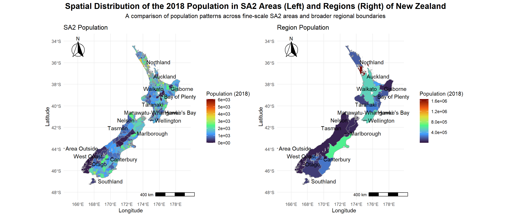
These maps compare population distribution in New Zealand at different scales. The SA2 Population map (left) provides detailed insights, highlighting densely populated urban clusters, while the Region Population map (right) aggregates data, emphasizing regional total population concentration. Auckland appears dominant in both maps, though the finer SA2 breakdown reveals local density patterns. The left map’s scale (0–6,000) captures variations within cities, whereas the right map (400,000–1.6 million) focuses on broader regional totals.
# Explore sa2_nzclass(sa2_nz)
[1] "sf" "data.frame"
colnames(sa2_nz)
[1] "sa2_name" "sa2_id" "pop2018" "region" "geom"
# The sa2_nz object is a simple features (sf) spatial data frame containing five columns: sa2_name, sa2_id, pop2018, region, and geom. It includes 2018 population data and multipolygon geometries for each SA2 area in New Zealand.# Explore airdataclass(airdata)
# The airdata object is a tibble data frame containing air quality data, including region, site details, location, pollutant indicators, concentration values, and corresponding dates and years for analysis.# Convert airdata data.frame to sf# Convert columns "longitude" and "latitude" to WGS84 (EPSG:4326)airdata <-st_as_sf(airdata, coords =c("longitude", "latitude"), crs =4326)glimpse(airdata$geometry)
sfc_POINT of length 232293; first list element: 'XY' num [1:2] 174.7 -36.9
# The geometry column in airdata now contains 232,293 spatial point features in WGS84 coordinates, each representing air monitoring locations with longitude and latitude, starting near Auckland at (174.7, -36.9).# Preview region not in airdata regionas.data.frame(sa2_nz) |>filter(!(region %in% airdata$region)) |>count(region) |>as.data.frame()
region n
1 Area Outside 1
2 Taranaki 65
# The region: Area Outside and Taranaki are not in airdata# Count region, town, site_nameas.data.frame(airdata) |>distinct(region, town, site_name) |>glimpse()
# There are 67 distinct region, town, and site_name
# Preview matching CRSst_crs(sa2_centroids)$epsg
[1] 4326
st_crs(airdata)$epsg
[1] 4326
# Both datasets have same crs epsg of 4326# Preview summarystr(sa2_centroids$geom)
sfc_POINT of length 2332; first list element: 'XY' num [1:2] 172.9 -34.6
str(airdata$geometry)
sfc_POINT of length 232293; first list element: 'XY' num [1:2] 174.7 -36.9
# sa2_centroids has 2,332 points; airdata has 232,293 points. Both are sfc_POINT with XY coordinates in WGS84.# Preview sa2_name in region Waikatoas.data.frame(sa2_centroids) |>filter(region =="Waikato") |>distinct(sa2_name) |>glimpse()
#There are 264 distinct sa2_name in region: Waikato# Preview site_name for region Waikato in airdataas.data.frame(airdata) |>filter(region =="Waikato") |>distinct(site_name) |>glimpse()
# There are 8 site_name in region: Waikato# Perform a spatial join of airdata and sa2_centroids to assign each SA2 to a regionairdata_with_sa2 <-st_join(airdata, sa2_centroids[, c("region", "sa2_name", "pop2018", "geom")], join = st_nearest_feature)# Preview column names colnames(airdata_with_sa2)
# Save RAM, remove data not neededrm(airdata)rm(sa2_centroids)
# Preview summary of concentrationsummary(airdata_with_sa2$concentration)
Min. 1st Qu. Median Mean 3rd Qu. Max. NA's
0.00 6.41 10.50 12.67 16.10 202.80 107
# Concentration ranges from 0 to 202.8, with mean 12.67, median 10.5, and 107 missing values (NA's).# Use ARIMA imputation to approximate the missing concentration values.airdata_with_sa2 <-as.data.frame(airdata_with_sa2) |>mutate(arima_concentration =na_kalman(concentration, model ="auto.arima")) # ARIMA imputationsummary(airdata_with_sa2$arima_concentration)
Min. 1st Qu. Median Mean 3rd Qu. Max.
0.000 6.407 10.494 12.664 16.100 202.800
# All the 107 missing values are now computed using ARIMA and ranges from 0 to 202.8 with a mean of 12.664 and median of 10.494
4.2 Normalize pollutant concentration by 2018 population and plot concentration per capita trends for eac site type.
Min. 1st Qu. Median Mean 3rd Qu. Max.
0.00 6.40 10.47 12.87 16.16 202.80
# total_conc ranges from 0 to 202.8, with mean 12.87, median 10.47.# Calculate daily concentration per pop2018 daily_airdata <- daily_airdata |>mutate(conc_per_capita = total_conc / pop2018 )# Preview the new columnsummary(daily_airdata$conc_per_capita)
Min. 1st Qu. Median Mean 3rd Qu. Max.
0.000000 0.002628 0.004437 0.007249 0.007542 0.486536
# conc_per_pop18 ranges from 0 to 0.486536 with a mean of 0.007249 and a median of 0.004437
# Transform daily_airdata into a long format for easier plotting# Separate total concentration and per capita concentration into a "Type" columnlong_data <- daily_airdata |>group_by(site_type) |>pivot_longer(cols =c(total_conc, conc_per_capita),names_to ="Type",values_to ="Value") |>ungroup() |># Convert 'Type' to a factor to control the facets ordermutate(Type =factor(Type, levels =c("total_conc", "conc_per_capita"))) # Define custom labels for facets to make them more descriptivefacet_labels <-c(total_conc ="Daily Concentration (µg/m³)",conc_per_capita ="Daily Concentration per Capita (µg/m³/person)")# Using column plot, compare daily total and per capita pollutant concentrations by site typepollutant_concentration_plot <-ggplot(long_data, aes(x = Value, y = site_type, fill = indicator)) +geom_col(position =position_dodge(width =0.8), width =0.7) +facet_grid(~ Type, scales ="free_x", labeller =labeller(Type = facet_labels)) +scale_fill_manual(values =c("#E69F00", "#56B4E9")) +labs(title ="Total and Per Capita Daily Pollutant Concentrations (2016–2024)",x ="Daily Concentration (Total and Per Capita)",y ="Monitoring Site Type", fill ="Indicator",caption ="Per capita values were calculated using 2018 population estimates.") +theme_bw(base_size =12) +theme(plot.title =element_text(size =16, face ="bold", hjust =0.5),axis.title =element_text(size =12, face ="bold"),axis.text.y =element_text(size =10, hjust =1, face ="bold"),strip.text =element_text(size =12, face ="bold"),legend.title =element_text(size =12, face ="bold"),legend.text =element_text(size =11, face ="bold"))# Display plotpollutant_concentration_plot
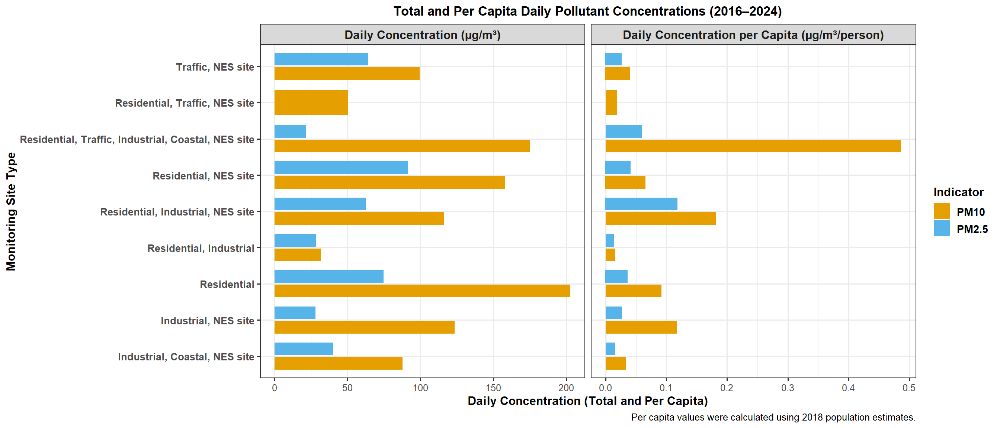
Traffic and industrial sites generally show high total pollutant concentrations, especially for PM10. However, per capita values are lower in densely populated areas due to population dilution. In contrast, mixed-use or coastal sites with fewer residents exhibit higher per capita concentrations despite moderate total values. PM10 levels consistently exceed PM2.5 across all site types, highlighting its dominance in daily particulate pollution from 2016 to 2024.
# Standardize conc_per_capita and classify based on how many standard deviations from the meandaily_airdata <- daily_airdata |>group_by(site_type, indicator) |>mutate(z_score =scale(conc_per_capita),conc_per_capita_category =case_when( z_score <=-2~"Low", z_score <=0~"Moderate", z_score <=2~"High",TRUE~"Very High" ))# Define function for pollutant trends categorised by z-anomalyp <-function(data, title_var) {ggplot(data = data, aes(x = date, y = conc_per_capita)) +geom_point(size =2, alpha =0.6, aes(color = conc_per_capita_category)) +facet_wrap(~ site_type, scales ="free") +scale_color_manual(name ="Concentration Category", values =c("Low"="#1b9e77", "Moderate"="#7570b3","High"="#d95f02", "Very High"="#e7298a") ) +theme_bw() +labs(title =paste(title_var, " Daily Concentration Per Capita Trends by Site Type (2016-2023)"),subtitle ="By 2018 population Categorized by Z-anomaly",x ="Date", y ="Concentration per capita (µg/m³/person)" ) +theme(plot.title =element_text(size =16, hjust =0.5, face ="bold"),plot.subtitle =element_text(size =11, hjust =0.5),axis.text.x =element_text(angle =45, hjust =1, face ="bold", size =11),axis.text.y =element_text(face ="bold", size =11),axis.title =element_text(face ="bold", size =11),legend.position ="bottom",legend.title =element_text(size =11, face ="bold"))}# Display plotplot <-p(filter(daily_airdata, indicator =="PM10"), "PM10")plot
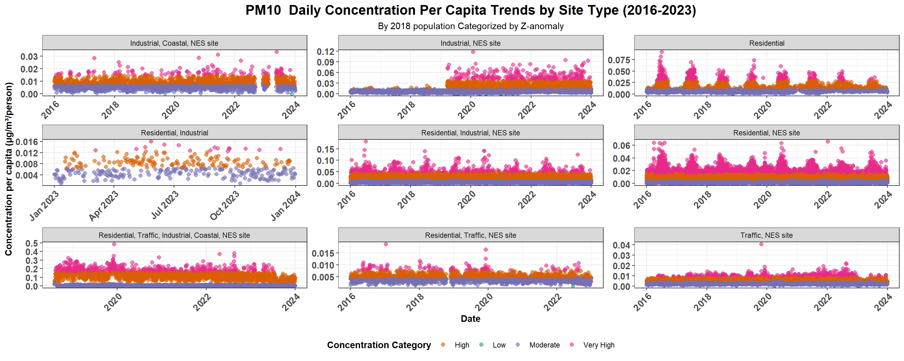
Industrial and multi-category sites show the highest PM10 variability, peaking in 2018, 2020, and 2022. Residential and NES sites maintain lower levels with fewer spikes. Traffic-influenced sites experience occasional peaks but remain relatively stable. Overall, site type strongly impacts PM10 trends, with industrial areas displaying the widest range.
Industrial sites show the highest PM2.5 concentrations with frequent High and Very High Z-anomalies. Residential sites vary, with some exhibiting moderate pollution trends. Coastal and NES sites tend toward lower anomalies. Mixed-use sites Residential-Industrial and Residential-Traffic show inconsistent trends. Overall, site type strongly influences anomaly frequency, highlighting regional air quality disparities.
# Extract year and classify per capita categoriesdaily_airdata <- daily_airdata |>mutate(year =format(date, "%Y")) |>group_by(site_type, indicator, year) |>mutate(conc_per_capita_category =ntile(conc_per_capita, 4)) |>mutate(conc_per_capita_category =factor( conc_per_capita_category, labels =c("Low", "Moderate", "High", "Very High"))) |>ungroup()# Define jitter plot function by year and site_typejitter_plot <-function(data, title_var) {ggplot(data, aes(x =factor(year), y = conc_per_capita)) +geom_jitter(aes(color = conc_per_capita_category), width =0.2, alpha =0.5, size =1.2) +facet_wrap(~ site_type, scales ="free_y") +scale_color_viridis_d(name ="Concentration Category", option ="C" ) +theme_bw() +labs(title =paste(title_var, "Per Capita Concentration by Year and Site (2016-2023)"),subtitle ="Jittered points grouped by per capita concentration category",x ="Year", y ="Concentration per capita (µg/m³/person)" ) +theme(plot.title =element_text(size =13, hjust =0.5, face ="bold"),plot.subtitle =element_text(size =11, hjust =0.5),axis.text.x =element_text(angle =45, hjust =1, face ="bold", size =11),axis.text.y =element_text(face ="bold", size =11),axis.title =element_text(face ="bold", size =11),legend.position ="bottom" )}# Plot and saveplot_jitter <-jitter_plot(filter(daily_airdata, indicator =="PM10"), "PM10")plot_jitter
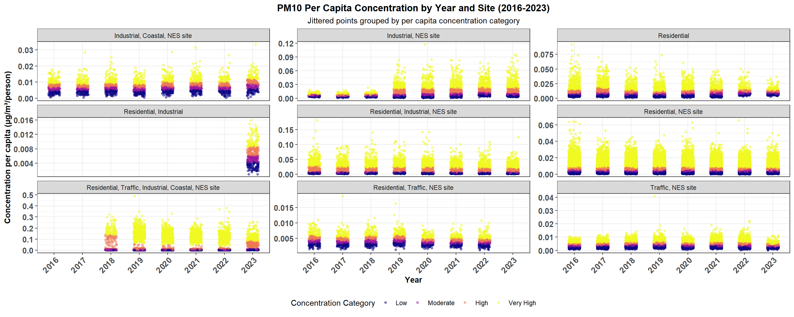
The plots show PM10 per capita concentrations across sites from 2016 to 2023, classified into four concentration levels. Residential and industrial sites saw the sharpest increases in 2023. Coastal and traffic sites remained relatively stable, though minor fluctuations occurred. The categorization highlights notable shifts in pollution patterns, emphasizing areas experiencing heightened exposure. Standardization using 2018 population refines comparisons across sites.
# Plot and saveplot_jitter <-jitter_plot(filter(daily_airdata, indicator =="PM2.5"), "PM2.5")plot_jitter
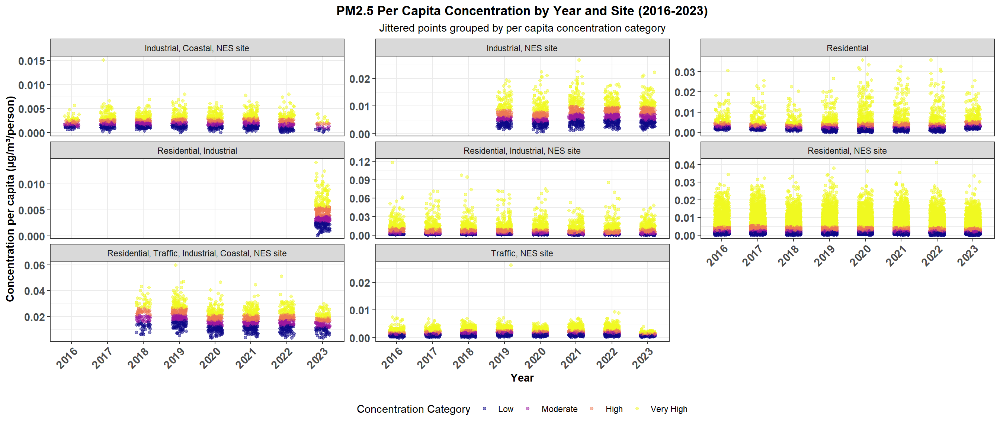
The PM2.5 jitter plots reveal distinct site-specific trends. Industrial sites show the highest variability, with elevated peaks in 2023. Residential sites display moderate fluctuations, reflecting seasonal shifts. Coastal sites exhibit the lowest PM2.5 concentrations, with stable trends. Traffic sites maintain consistently high pollution, showing persistent emissions. These differences underscore varying exposure risks based on site type and location.
4.3 Seasonal Trends in Pollutant Concentration by Site Type
Visualizing pollutant concentration per capita across seasons and site types, highlighting PM10 and PM2.5 variations, seasonal peaks, and site-specific dispersion dynamics from 2016 to 2023.
# Aggregate daily air quality data into seasonal trendsseasondata <- daily_airdata |>mutate(year =as.numeric(format(date, "%y")),season =case_when(month(date) %in%c(12, 1, 2) ~"Sum", # Summermonth(date) %in%c(3, 4, 5) ~"Aut", # Autumnmonth(date) %in%c(6, 7, 8) ~"Win", # Wintermonth(date) %in%c(9, 10, 11) ~"Spr", # SpringTRUE~NA_character_),season =factor(season, levels =c("Sum", "Aut", "Win", "Spr")),season_year =paste0(season, year),# Use this to sort by season-year properlyseason_year =factor(season_year, levels =unique(season_year[order(year, season)])))sitedata <- seasondata |>group_by(season_year, year, site_type, indicator) |>summarise(total_conc_per_capita =sum(conc_per_capita, na.rm =TRUE),.groups ="drop")glimpse(seasondata)
# Plot the heatmap of seasondatap2 <-ggplot(sitedata, aes(x = season_year, y = site_type, fill = total_conc_per_capita)) +geom_tile(color ="grey90") +facet_wrap(~ indicator) +scale_fill_viridis_c(option ="C",name ="Total Concentration\n(per capita, 2018 pop)") +labs(title ="Heatmap of Seasonal Pollutant Concentration Per Capita (2016-2023)",subtitle ="Summed by site type and season, normalized by 2018 population",x ="Season-Year", y ="Site Type") +theme_bw(base_size =12) +theme(axis.text.y =element_text(size =10),axis.text.x =element_text(angle =45, hjust =1),plot.title =element_text(face ="bold", hjust =0.5),plot.subtitle =element_text(hjust =0.5) )# Display plotp2
The heatmap shows PM10 concentrations generally higher than PM2.5 across most site types and seasons from 2016–2023. PM10 peaks prominently at “Residential, NES site” and “Residential, Traffic, Industrial, Coastal, NES site”, reaching values above 30. PM2.5 values remain mostly below 10, with modest elevations at residential sites. Missing data patterns differ slightly between the two pollutants, notably in residential-industrial combinations.
4.4 Regional Trends in Seasonal Per Capita Pollutant Concentration (2016–2023)
This heatmap shows seasonal per capita pollutant concentrations across regions (2016–2023), helping identify spatial and temporal pollution trends.
# Aggregate seasonal data to regionregiondata <- seasondata |>group_by(region, season_year, year, indicator) |>summarise(total_conc_per_capita =sum(conc_per_capita, na.rm =TRUE), .groups ="drop")summary(regiondata$total_conc_per_capita)
Min. 1st Qu. Median Mean 3rd Qu. Max.
0.003854 0.516080 1.029960 1.991850 2.228748 19.300111
# This shows the summary statistics of a dataset, indicating a right-skewed distribution with a mean (1.99) higher than the median (1.03) and a maximum value of 19.3.# Plot the heatmapp1 <-ggplot(regiondata, aes(x = season_year, y = region, fill = total_conc_per_capita)) +geom_tile(color ="grey90") +# Add lockdown marker (assuming x-axis is a factor or character)geom_vline(xintercept =which(levels(factor(regiondata$season_year)) =="Aut20"), linetype ="dashed", color ="#E69F00", lwd =2) +facet_wrap(~ indicator) +scale_fill_continuous_sequential(palette ="Mint", name ="Total Concentration\n(per capita, 2018 pop)", rev =FALSE) +labs(title ="Seasonal Air Pollution per Capita Across NZ Regions (2016–2023)",subtitle ="Summed pollutant concentrations by region and season (normalized by 2018 population), with COVID-19 lockdown marked (in orange)",x ="Season-Year", y ="Region") +theme_bw(base_size =12) +theme(axis.text.y =element_text(size =10),axis.text.x =element_text(angle =45, hjust =1),plot.title =element_text(face ="bold", hjust =0.5),plot.subtitle =element_text(hjust =0.5) )# Display plotp1
The PM10 plot shows consistently higher concentrations across regions, while PM2.5 exhibits more variability with lower overall levels. Seasonal patterns are evident in both, but PM10 peaks are more pronounced. COVID-19 lockdowns affected both pollutants, with sharper declines in PM2.5. Regional disparities are stronger in PM10, highlighting differences in pollution dynamics and sources. The PM2.5 plot has more white spaces, indicating lower concentrations.
# Preview repeating geometry last few rowsairdata_with_sa2 |>count(sa2_name, geometry, pop2018) |>tail()
sa2_name geometry pop2018 n
61 Washington POINT (173.2735 -41.27823) 2990 5066
62 Waterloo West POINT (174.9209 -41.21261) 2370 2892
63 Westlake POINT (174.7489 -36.78031) 3120 5493
64 Whangarei Central POINT (174.3242 -35.72673) 1000 5524
65 Winton POINT (168.3235 -46.14758) 2400 1379
66 Woolston South POINT (172.6813 -43.55716) 530 5809
4.5 Comparing Total and Per Capita Air Pollutant Concentrations for 2018
To ensure consistency, we focus on 2018—the year for which both pollutant and population data are available. We aggregate total pollutant concentrations by SA2 regions and compute per capita values using 2018 population figures. Spatial visualisations then highlight the distribution of PM2.5 and PM10 levels across New Zealand, both in total and per person.
# Filter 2018 data and summarise total pollutant concentration by SA2, indicator, and populationairdata_group <- airdata_with_sa2 |>filter(year ==2018) |>group_by(sa2_name, geometry, indicator, pop2018) |>summarise(total_conc18 =sum(concentration, na.rm =TRUE),.groups ="drop")# Display structure of the summarised dataset (86 rows x 5 columns)glimpse(airdata_group)
# Calculate per capita pollutant concentration for each SA2airdata_group <- airdata_group |>mutate(conc_per_capita18 = total_conc18 / pop2018)# Ensure airdata_group is an sf (spatial features) objectairdata_group <-st_as_sf(airdata_group)# Summarise distribution of per capita concentrationssummary(airdata_group$conc_per_capita18)
Min. 1st Qu. Median Mean 3rd Qu. Max.
0.07344 1.19984 1.72504 2.15444 2.47601 11.94561
# Per capita PM10 concentration ranges from 0.07 to 11.95, with a median of 1.73 and a mean of 2.15.# Prepare label data: unique combinations of SA2, indicator, concentration values, and geometrylabel_text <- airdata_group |>count(sa2_name, indicator, total_conc18, conc_per_capita18, geometry) |>select(-n)# Confirm label_text is a dataframeclass(label_text)
[1] "sf" "tbl_df" "tbl" "data.frame"
# Convert label_text to an sf object for spatial operationslabel_text <-st_as_sf(label_text)# Extract longitude and latitude from geometry column for text placementlabel_text$longitude <-st_coordinates(label_text)[, 1]label_text$latitude <-st_coordinates(label_text)[, 2]# Summarise longitude range — confirms spatial extent within New Zealandsummary(label_text$longitude)
Min. 1st Qu. Median Mean 3rd Qu. Max.
168.4 172.6 174.8 174.0 175.7 177.0
# Summarise latitude range — confirms coverage from South to North Islandsummary(label_text$latitude)
Min. 1st Qu. Median Mean 3rd Qu. Max.
-46.43 -43.38 -40.95 -40.49 -37.67 -35.73
# Define a reusable function to map pollutant concentrations by SA2plot <-function(indicator_var, color_var) {ggplot(data = sa2_nz) +geom_sf(fill ="grey90", color ="white") +# base mapgeom_sf(data = airdata_group |>filter(indicator == {{indicator_var}}), aes(color = {{ color_var }}), size =2) +geom_text_repel(data = label_text |>filter(indicator == {{indicator_var}}), aes(x = longitude, y = latitude, label = sa2_name), size =2.5) +scale_color_viridis_c(option ="turbo", labels = scales::label_scientific()) +coord_sf(xlim =c(165, 180), ylim =c(-48, -34)) +# Add coord_sf to zoom in to nztheme_bw() +labs(x ="Longitude",y ="Latitude") +theme(axis.title =element_text(face ="bold", size =11),axis.text.y =element_text(size =10),axis.text.x =element_text(angle =45, size =10, hjust =1),plot.legend ="right") +annotation_scale(location ="br", width_hint =0.3) +annotation_north_arrow(location ="tl", which_north ="true",style =north_arrow_fancy_orienteering())}# Create spatial plots for PM10 and PM2.5 total concentrations (2018)plot1 <-plot("PM10", total_conc18) +labs(title ="Total PM10", color ="Total (µg/m³)")plot2 <-plot("PM2.5", total_conc18) +labs(title ="Total PM2.5", color ="Total (µg/m³)")# Combine plots into one figure with title and subtitlecombined_plot <- plot1 + plot2 +plot_annotation(title ="Total PM2.5 and PM10 Concentration Across New Zealand for the Year Ending 2018",subtitle ="Spatial distribution of cumulative pollutant concentrations by SA2 region") &theme(plot.title =element_text(size =16, hjust =0.5, face ="bold"),plot.subtitle =element_text(size =12, hjust =0.5))# Display plotcombined_plot
Air pollution varies across New Zealand, with PM10 and PM2.5 showing distinct spatial patterns. PM10 concentrations, which include coarse and fine particles, are more widespread, while PM2.5—primarily from combustion sources—forms hotspots in urban areas. Regions like Meeanee–Awatoto and Mayfair appear prominently in both datasets, while Ruakaka and Mount Maunganui Central show pollutant-specific trends. The broader spread of PM10 suggests diverse sources, including road dust, whereas PM2.5 aligns with industrial and traffic emissions.
# Create map of per capita PM10 concentrations for 2018plot1 <-plot("PM10", conc_per_capita18) +labs(title ="PM10 Per Capita", color ="Per Capita (µg/m³)") +scale_color_viridis_c(option ="turbo") # Create map of per capita PM2.5 concentrations for 2018plot2 <-plot("PM2.5", conc_per_capita18) +labs(title ="PM2.5 Per Capita", color ="Per Capita (µg/m³)") +scale_color_viridis_c(option ="turbo") # Combine both plots with shared title and stylingper_capita18_plot <- plot1 + plot2 +plot_annotation(title ="Geospatial Distribution of Air Pollutants Per Capita (2018)",subtitle ="Comparison of PM10 and PM2.5 concentrations across SA2 regions") &theme(plot.title =element_text(size =16, hjust =0.5, face ="bold"),plot.subtitle =element_text(size =12, hjust =0.5))# Display plotper_capita18_plot
Air quality varies across New Zealand, with PM10 and PM2.5 concentrations showing distinct patterns. PM10 levels are higher in Whangarei Central, Gore Main, Taihape and Parkside, while PM2.5 hotspots include Whangarai Central, Kuripuni, Redwoodtown East, and Mount Maunganui Central. PM10 appears more widespread, whereas PM2.5 is more localized in urban areas. These differences matter—PM2.5 particles penetrate deeper into lungs, posing greater health risks. Understanding these trends helps highlight potential environmental influences, such as traffic patterns or meteorological conditions.
4.6 Interactive Map of 2018 Particulate Matter Concentrations by SA2 Region
To enhance spatial interpretation, we created an interactive map showing PM10 and PM2.5 concentrations across New Zealand for 2018. Marker size represents total pollutant concentration (µg/m³), while color intensity indicates per capita exposure (µg/m³/person). This visualization allows users to explore regional air quality disparities in both absolute and population-adjusted terms.
# Create Plotly map: marker size = total concentration, color = per capita concentrationinteractive_map18 <-plot_ly(data = label_text, type ='scattermapbox', mode ='markers',lat =~latitude, lon =~longitude,name =NULL, showlegend =FALSE,text =~paste0("SA2: ", sa2_name,"\nIndicator: ", indicator,"\nTotal Concentration: ", total_conc18,"\nConcentration Per Capita: ", conc_per_capita18),marker =list(size =~scales::rescale(total_conc18, to =c(8, 20)),color =~conc_per_capita18, colorscale ='Plasma',opacity =0.8, showscale =TRUE,colorbar =list(title ="Per Capita Conc. (µg/m³/person)",x =0.95, xanchor ="left", len =0.75) )) |>layout(title =list(text =paste0("<b>Unified Map of Particulate Matter Concentrations (2018)</b><br>","<span style='font-size:18px;'>Marker Size: Total Concentration (µg/m³), Color: Per Capita (µg/m³/person)</span>"), x =0.5),mapbox =list(style ="open-street-map", zoom =5,center =list(lat =median(label_text$latitude, na.rm =TRUE),lon =median(label_text$longitude, na.rm =TRUE))) )# Display plotinteractive_map18
New Zealand’s air quality varies significantly across regions, with particulate matter (PM) concentrations reflecting both human activity and environmental conditions. This map highlights total and per capita PM levels, revealing how pollution impacts individuals versus overall atmospheric load. The deep red zones indicate areas where residents experience heightened exposure, often influenced by traffic, industry, or natural events. Future analyses could explore seasonal changes, meteorological influences, and links to traffic congestion.
4.7 Standardizing Daily Air Pollutant Concentrations for Cross-Regional Analysis
To enable consistent comparisons across regions, we first removed duplicate entries by aggregating pollutant data by SA2, region, date, and indicator. We then calculated total daily concentrations and standardized them using z-scores. This normalization allows us to detect anomalies and analyze trends over time on a common scale, regardless of differences in baseline pollution levels across regions.
# Check for duplicate pollutant entries recorded on the same day, in the same location, for the same indicatoras.data.frame(airdata_with_sa2) |>count(sa2_name, region, date, indicator) |>filter(n >1) |>glimpse()
# → Some SA2 regions record pollutant levels multiple times per day per indicator.# Combine duplicates by summing concentration values across SA2 name, region, date, and indicator. This step ensures cleaner trend lines for time-series analysisdaily_airdata_with_sa2 <-as.data.frame(airdata_with_sa2) |>mutate(region_indicator =paste(region, indicator, sep =" - ")) |>group_by(sa2_name, region, date, indicator, region_indicator, pop2018) |>summarize(region_concentration =sum(concentration, na.rm =TRUE),.groups ="drop" )# Confirm that aggregation at the region-date-indicator level has resolved duplicatesdaily_airdata_with_sa2 |>count(region, date, indicator) |>filter(n >1) |>glimpse()
# Further aggregate by region, date, and indicator to prepare for regional trend analysisdaily_airdata_with_sa2 <- daily_airdata_with_sa2 |>group_by(region, date, indicator, region_indicator, pop2018) |>summarize(region_concentration =sum(region_concentration, na.rm =TRUE),.groups ="drop")# Calculate mean pollutant concentration for each region and indicator combinationdaily_airdata_with_sa2 <- daily_airdata_with_sa2 |>group_by(region, indicator) |>mutate(grp_mean =mean(region_concentration, na.rm =TRUE)) |>ungroup()# Compute standardized concentrations (z-scores) to enable cross-region comparison on a uniform scaledaily_airdata_with_sa2 <- daily_airdata_with_sa2 |>group_by(region, indicator) |>mutate(sd_concentration = (region_concentration -mean(region_concentration, na.rm =TRUE)) /sd(region_concentration, na.rm =TRUE) ) |>ungroup()# Summary of standardized concentration valuessummary(daily_airdata_with_sa2$sd_concentration)
Min. 1st Qu. Median Mean 3rd Qu. Max.
-2.2741 -0.6267 -0.2622 0.0000 0.3367 21.5596
# → Standardized concentration ranges from -2.57 to 7.99, with a median of -0.26 and a mean of 0.# Summary of raw regional concentrationssummary(daily_airdata_with_sa2$region_concentration)
Min. 1st Qu. Median Mean 3rd Qu. Max.
0.00 6.40 10.46 12.86 16.16 202.80
# → Regional concentration ranges from 0 to 549.98 µg/m³, with a median of 22.88 and a mean of 40.62.# Function to randomly select a fixed number of regions, filter the dataset accordingly, and replace zero concentrations with a small positive value to avoid log/scale issuesprepare_selected_airdata <-function(data, n_regions =5, seed =123) {set.seed(seed) # Ensure reproducibility# Randomly sample 'n_regions' unique region names selected_regions <-sample(unique(data$region), size = n_regions)# Filter to selected regions and replace zero concentration values data_filtered <- data |>filter(region %in% selected_regions) |>mutate(region_concentration =ifelse(region_concentration ==0, 1e-05, region_concentration) ) |>ungroup()return(list(data = data_filtered,selected_regions = selected_regions ))}
# Apply function to filter dataset and get selected regionsresult <-prepare_selected_airdata(daily_airdata_with_sa2, 6)daily_airdata_selected <- result$dataselected_regions <- result$selected_regions# Preview column names and selected regionscolnames(daily_airdata_selected)
# Generate a faceted line plot showing log-scale air pollutant concentration trends by region. This visualizes pollutant concentrations across selected regions from 2016 to 2023plot_log_by_region <-ggplot(data = daily_airdata_selected, aes(x = date, y = region_concentration, color = indicator)) +geom_line(aes(group = region)) +scale_color_manual(values =c("PM10"="#0072B2", "PM2.5"="#E69F00")) +labs(title ="Log-Scale Trends in Air Pollutant Concentration in Selected Regions (2016-2023)",subtitle ="Log-transformed trends in PM2.5 and PM10 concentration",x ="Month-Year",y ="Total Pollutant Concentration (log scale)",color ="Pollutant Type") +theme_bw() +theme(legend.position ="bottom",axis.text.x =element_text(angle =45, hjust =1),plot.title =element_text(size =13, hjust =0.5, face ="bold"), # Center the main titleplot.subtitle =element_text(size =11, hjust =0.5) ) +# Center the subtitlefacet_wrap(~ region, scales ="free_y") +scale_x_date(breaks =seq(as.Date("2016-01-01"),as.Date("2023-12-31"), by ="6 months"), # tick every 6 monthsdate_labels ="%b %y") +scale_y_log10(labels = scales::label_scientific()) # Apply log10 scale# Display plotplot_log_by_region
Air pollution trends across New Zealand regions reveal intriguing variations. Canterbury’s pronounced seasonal fluctuations hint at climatic influences, while Otago’s cyclical peaks suggest recurring pollution sources. Bay of Plenty and Wellington maintain relatively stable pollutant levels, contrasting with the West Coast’s dramatic drops, possibly due to extreme weather events or data gaps. The use of log scales provides clarity in detecting subtle changes over time, distinguishing PM2.5 and PM10 trends.
# Function to compute specified quantiles (e.g., thresholds) for a numeric column in a dataframecompute_quantiles <-function(data, column, probs =c(0.05, 0.10, 0.90, 0.95)) { column_data <- data[[deparse(substitute(column))]]quantile(column_data, probs = probs, na.rm =TRUE)}# Compute moderate and extreme anomaly thresholds (5th, 10th, 90th, 95th percentiles)quantiles <-compute_quantiles(daily_airdata_selected, sd_concentration)print(quantiles)
# Plot with both threshold lines in new colorsplot_region_zanomaly <-ggplot(data = daily_airdata_selected, aes(x = date, y = sd_concentration, color = indicator)) +geom_line(aes(group = region)) +scale_color_manual(values =c("PM10"="#0072B2", "PM2.5"="#E69F00")) +# 10th–90th percentile rangegeom_hline(yintercept = quantiles["10%"], linetype ="dashed", color ="#009E73", linewidth =0.6) +# Bluish greengeom_hline(yintercept = quantiles["90%"], linetype ="dashed", color ="#009E73", linewidth =0.6) +# 5th–95th percentile rangegeom_hline(yintercept = quantiles["5%"], linetype ="dashed", color ="#CC79A7", linewidth =0.8) +# Reddish purplegeom_hline(yintercept = quantiles["95%"], linetype ="dashed", color ="#CC79A7", linewidth =0.8) +facet_wrap(~ region, scales ="free_y") +scale_x_date(breaks =seq(as.Date("2016-01-01"), as.Date("2023-12-31"), by ="6 months"),date_labels ="%b %y" ) +theme_bw() +labs(title ="Standardized PM2.5 and PM10 Trends by Region (2016–2023)",subtitle ="Z-score trends with 10th/90th (green) and 5th/95th (purple) percentiles marking moderate and extreme anomalies",x ="Month–Year",y ="Standardized Concentration (Z-score)",color ="Pollutant" ) +theme(plot.title =element_text(size =13, hjust =0.5, face ="bold"), plot.subtitle =element_text(size =11, hjust =0.5),axis.title =element_text(size =12, face ="bold"),axis.text.x =element_text(angle =45, hjust =1, face ="bold", size =11),axis.text.y =element_text(size =11, face ="bold"),legend.position ="bottom",legend.title =element_text(size =11, face ="bold") ) # Display the plotplot_region_zanomaly
Regional air quality trends reveal striking differences in pollutant behavior, particularly in extreme cases. Canterbury exhibits persistently high PM2.5 and PM10 levels, frequently exceeding the 90th and 95th percentiles, indicating prolonged pollution events. In contrast, Bay of Plenty and Wellington experience volatile PM2.5 concentrations, with frequent spikes surpassing upper quantiles. Otago and West Coast display seasonal PM10 peaks, reflecting meteorological influences rather than urban emissions.
# Assign pollution category based on standardized concentration thresholds# Categorize each day's standardized concentration as "good", "typical", or "bad", based on 10th and 90th percentile z-score thresholds computed earlierdaily_airdata_selected <- daily_airdata_selected |>mutate(pollution_category =case_when( sd_concentration < quantiles["10%"] ~"good",# below 10th sd_concentration > quantiles["90%"] ~"bad", # above 90thTRUE~"typical")) # between 10th and 90th# Create a faceted column plot showing daily standardized concentrations. Fill color reflects pollution category: good (green), typical (grey), bad (orange)plot_threshold <-function(xvar, yvar) { p <-ggplot(data = daily_airdata_selected, aes(x = {{xvar}}, y = {{yvar}}, fill = pollution_category)) +geom_col(position ="dodge") +# stack columns side by sidescale_fill_manual(values =c("good"="#1b9e77", "typical"="#999999", "bad"="#d95f02")) +theme_bw() +labs(x ="Month–Year", y ="Daily Standardized Concentration", fill ="Pollution Category") +theme(plot.title =element_text(size =13, hjust =0.5, face ="bold"),plot.subtitle =element_text(size =12, hjust =0.5),axis.title =element_text(size =12, face ="bold"),axis.text.x =element_text(size =11, angle =45, hjust =1, face ="bold"),axis.text.y =element_text(size =11, face ="bold"),legend.title =element_text(size =11, face ="bold"), strip.text =element_text(size =11, face ="bold"))return(p)}# Display plotplot_zscore_pollution_categories <-plot_threshold(date, sd_concentration) +facet_wrap(~ region_indicator, scales ="free_y") +scale_x_date(breaks =seq(as.Date("2016-01-01"), as.Date("2023-12-31"), by ="6 months"), labels = scales::date_format("%b%y")) +labs(title ="Categorized Standardized Daily Air Pollution Levels by Region (2016–2023)",subtitle ="Z-score scaled concentrations colored by pollution severity based on 10th/90th percentile cutoffs")# Display plotplot_zscore_pollution_categories
Across the regions of New Zealand depicted, a common thread of seasonal air pollution emerges, with particulate matter (PM10 and PM2.5) concentrations generally peaking during the colder winter months. Canterbury stands out with a seemingly higher frequency of “Bad” air quality days, especially for PM2.5, suggesting potential issues with pollutant trapping. Bay of Plenty also exhibits a clear seasonal pattern with notable “Bad” days. In contrast, Wellington appears to enjoy relatively better air quality with less pronounced seasonal variation and fewer instances of “Bad” pollution. Otago and the West Coast, for which only PM10 data is shown, also display seasonal trends but seem to experience fewer severe pollution episodes than Canterbury. These regional differences likely stem from a combination of factors including heating practices, local industrial activity, topography, and prevailing weather patterns.
4.8 Seasonal Aggregation and Visualization of Air Quality Data (2016–2023)
This section defines seasonal categories, computes total and seasonal pollutant concentrations by region, and calculates z-score anomalies. It then visualizes seasonal trends in PM2.5 and PM10 concentrations across selected New Zealand regions from 2016 to 2023 using a log-scaled line plot, highlighting temporal and spatial variations in air quality.
# Define a function to classify dates into custom seasonsget_season <-function(date) { month <-month(date)case_when( month %in%c(12, 1, 2) ~"Sum", # Summer: Dec–Feb month %in%c(3, 4, 5) ~"Aut", # Autumn: Mar–May month %in%c(6, 7, 8) ~"Win", # Winter: Jun–Aug month %in%c(9, 10, 11) ~"Spr"# Spring: Sep–Nov )}# Extract 'season' and 'year' from the date column# Factorize 'season' for ordered plottingdaily_airdata_with_sa2 <-as.data.frame(airdata_with_sa2) |>mutate(season =get_season(date),season =factor(season, levels =c("Sum", "Aut", "Win", "Spr")),year =format(date, "%y") ) |>group_by(region, season, year, indicator, pop2018) |>summarize(region_concentration =sum(concentration, na.rm =TRUE),.groups ="drop" )summary(daily_airdata_with_sa2$region_concentration)
Min. 1st Qu. Median Mean 3rd Qu. Max.
8.0 612.2 1002.8 1081.7 1346.3 5898.8
# Region concentration ranges 12.41–21558.9, median 2055.98, mean 3535.07, skewed right distribution.# Summarize distribution of season and yearsummary(daily_airdata_with_sa2$season)
Sum Aut Win Spr
680 671 684 684
summary(as.integer(daily_airdata_with_sa2$year))
Min. 1st Qu. Median Mean 3rd Qu. Max.
16.00 18.00 20.00 19.64 22.00 23.00
# Season column shows balanced seasonal distribution. Year column spans from 2016 to 2023 with median year 2020.# Compute seasonal mean, standard deviation, and z-anomaly by region and indicatordaily_airdata_with_sa2 <- daily_airdata_with_sa2 |>group_by(region, season, indicator) |>mutate(seasonal_mean =mean(region_concentration, na.rm =TRUE),seasonal_sd =sd(region_concentration, na.rm =TRUE),sd_concentration = (region_concentration - seasonal_mean) / seasonal_sd ) |>ungroup()# Summarize seasonal statisticssummary(daily_airdata_with_sa2$seasonal_mean)
Min. 1st Qu. Median Mean 3rd Qu. Max.
169.6 691.1 1092.0 1081.7 1384.6 2631.9
summary(daily_airdata_with_sa2$seasonal_sd)
Min. 1st Qu. Median Mean 3rd Qu. Max.
41.8 148.9 248.3 346.6 405.0 1288.8
# Seasonal mean ranges from 204.8 to 17998.3 with mean 3535.1; seasonal SD ranges 41.8–5301, mean 713.8.summary(daily_airdata_with_sa2$sd_concentration)
Min. 1st Qu. Median Mean 3rd Qu. Max.
-3.3050 -0.6890 -0.1014 0.0000 0.6288 3.8590
# SD concentration ranges from -2.402 to 2.195, mean approximately zero.# Generate ordered season-year combinations for time-series plotting# Get unique sorted years from the datayears <-sort(unique(daily_airdata_with_sa2$year))# Define ordered season labelsseason_order <-c("Sum", "Aut", "Win", "Spr")# Generate ordered levels like "Sum16", "Aut16", ..., "Spr23"season_year_levels <-as.vector(outer(season_order, years, paste0))glimpse(season_year_levels)
# Define plotting function for seasonal trendsplot <-function(data, y_var) { p <-ggplot(data = data, aes(x = season_year, y = {{y_var}}, color = indicator)) +geom_point(size =2) +geom_line(aes(group = indicator)) +scale_color_manual(values =c("PM10"="#0072B2", "PM2.5"="#E69F00")) +theme_bw() +labs(x ="Season_Year", color ="Indicator") +theme(plot.title =element_text(size =16, hjust =0.5, face ="bold"),plot.subtitle =element_text(size =12, hjust =0.5),axis.title =element_text(size =12, face ="bold"),axis.text.x =element_text(angle =45, hjust =1, face ="bold"),axis.text.y =element_text(size =11, face ="bold"))}
# Select a reproducible random sample of 6 regions for focused seasonal trend visualizationresult <-prepare_selected_airdata(daily_airdata_with_sa2, n_regions =6, seed =1234)daily_airdata_selected <- result$dataselected_regions <- result$selected_regions# Inspect structure of the selected dataset and confirm chosen regionscolnames(daily_airdata_selected)
# Generate seasonal concentration trends with reference bands for selected regions and indicatorsseasonal_concentration_plot <-plot(daily_airdata_selected, region_concentration) +facet_wrap(~ region, scales ="free_y") +labs(title ="Seasonal Trends of Pollutants in Selected New Zealand Regions (2016–2023)",subtitle ="Seasonal average pollutant concentrations (log scale) across six randomly selected regions, highlighting inter-seasonal variability",y ="Seasonal Average Concentration (µg/m³, log scale)") +scale_y_log10(labels = scales::scientific) +# Add horizontal dashed lines for 10th–90th percentile rangegeom_hline(yintercept = quantiles[2], linetype ="dashed", color ="#009E73", linewidth =0.8) +# Bluish greengeom_hline(yintercept = quantiles[3], linetype ="dashed", color ="#009E73", linewidth =0.8) +# Add horizontal dashed lines for 5th–95th percentile rangegeom_hline(yintercept = quantiles[1], linetype ="dashed", color ="#CC79A7", linewidth =1) +# Reddish purplegeom_hline(yintercept = quantiles[4], linetype ="dashed", color ="#CC79A7", linewidth =1)# Display plotseasonal_concentration_plot
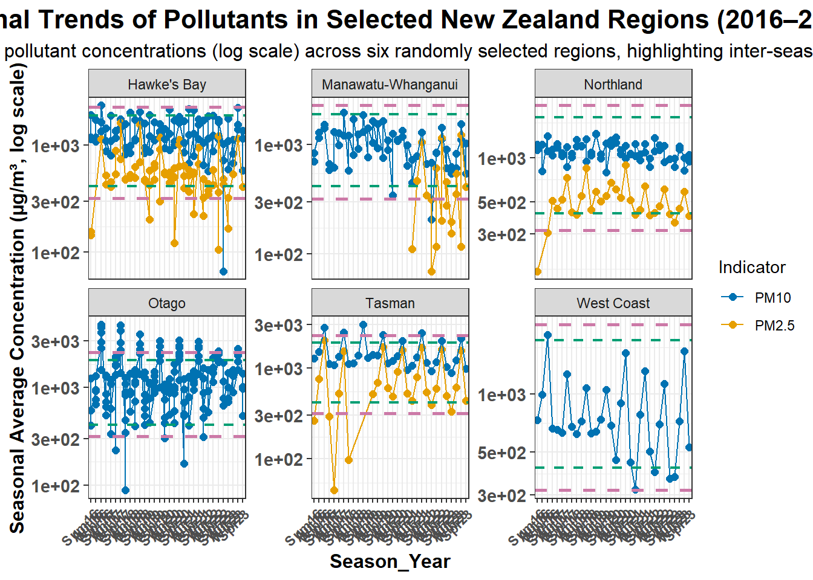
Otago shows high seasonal PM10 variability, while Hawke’s Bay and Manawatu-Whanganui remain stable. PM2.5 fluctuates in Tasman and West Coast but stays consistent in Northland. Winter pollution spikes, likely from heating emissions, persist. Quantile lines reveal extremes—Otago’s PM10 fluctuates widely, while Hawke’s Bay and Manawatu-Whanganui have tighter bands, emphasizing seasonal influences on air quality across regions.
# Compute quantiles (5th, 10th, 90th, 95th percentiles) for Z-score scaled seasonal concentrations# 'daily_airdata_selected' contains data; 'sd_concentration' is the standardized concentration columnquantiles <-compute_quantiles(daily_airdata_selected, sd_concentration)print(quantiles)
# Generate seasonal trend plot of standardized pollutant concentrations across selected regionsseasonal_zscore_plot <-plot(daily_airdata_selected, sd_concentration) +facet_wrap(~ region, scales ="free_y") +labs(title ="Standardized Seasonal Variations in PM2.5 and PM10 Across NZ Regions (2016–2023)",subtitle ="Z-score scaled concentrations per season and region. Dashed green lines = moderate (10th/90th), purple = extreme (5th/95th) thresholds",y ="Standardized Concentration (Z-score)" ) +# Add dashed lines for moderate concentration range (10th–90th percentile)geom_hline(yintercept = quantiles[2], linetype ="dashed", color ="#009E73", linewidth =0.6) +# Bluish greengeom_hline(yintercept = quantiles[3], linetype ="dashed", color ="#009E73", linewidth =0.6) +# Add dashed lines for extreme concentration range (5th–95th percentile)geom_hline(yintercept = quantiles[1], linetype ="dashed", color ="#CC79A7", linewidth =1) +# Reddish purplegeom_hline(yintercept = quantiles[4], linetype ="dashed", color ="#CC79A7", linewidth =1)# Display plotseasonal_zscore_plot
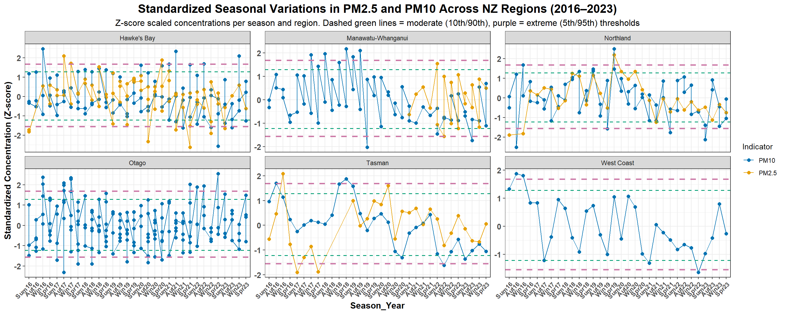
The plots show varying pollution trends across NZ regions from 2016-2023. Hawke’s Bay and Northland exhibit frequent extreme PM2.5 concentrations. Manawatu-Whanganui and Tasman show moderate PM10 fluctuations, while West Coast consistently stays within normal ranges. Otago experiences occasional moderate PM10 increases. Overall, PM10 often reaches extreme levels more frequently than PM2.5 in several regions.
# Categorize pollution levels based on standardized (Z-score) concentration thresholdsdaily_airdata_selected <- daily_airdata_selected |>mutate(pollution_category =case_when( sd_concentration < quantiles["10%"] ~"good", sd_concentration > quantiles["90%"] ~"bad",TRUE~"typical"),# Convert to ordered factor for consistent plottingpollution_category =factor(pollution_category, levels =c("good", "typical", "bad")))# Create a plot highlighting pollution category over timecategorized_pollution_plot <-plot_threshold(season_year, sd_concentration) +facet_wrap(~ region, scales ="free_y") +labs(title ="Categorized Standardized Air Pollution Concentration Trends (2016–2023)",subtitle ="Z-score concentrations classified as Good (<10th), Typical (10th–90th), or Bad (>90th percentile)",x ="Season-Year",y ="Standardized Concentration (Z-score)" )# Display the plotcategorized_pollution_plot
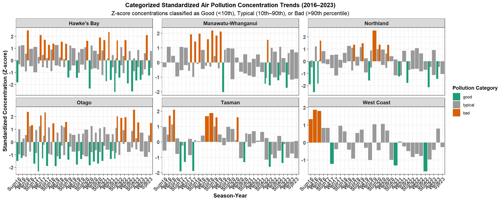
All regions exhibit periods of “bad” (orange) and “good” (teal) pollution categories, with “typical” (grey) being most frequent. Otago, Manawatu-Whanganui, and Hawke’s Bay show more frequent “bad” periods, particularly earlier in the time series. Northland, Tasman, and West Coast experience fewer “bad” periods, with Tasman and West Coast showing more consistent “good” periods later on.
# Compute per capita pollutant concentration by dividing total regional concentration by 2018 population# Assumes population remained relatively stable between 2016–2023daily_airdata_selected <- daily_airdata_selected |>group_by(region, indicator) |>mutate(concentration_per_capita = region_concentration / pop2018,# Standardize per capita concentration within each region-indicator groupsd_concentration = (concentration_per_capita -mean(concentration_per_capita, na.rm =TRUE))/sd(concentration_per_capita, na.rm =TRUE)) |>ungroup()# Create faceted column plot of standardized per capita concentrationsplot_per_capita_sd <-plot_threshold(season_year, sd_concentration) +facet_wrap(~ region, scales ="free_y") +labs(title ="Standardized Seasonal Air Pollution Concentration Per Capita by Region (2016–2023)",subtitle ="Z-score scaled concentrations adjusted for 2018 population; colored thresholds highlight top and bottom 10%",y ="Standardized Per Capita Concentration (Z-score)")# Display plotplot_per_capita_sd
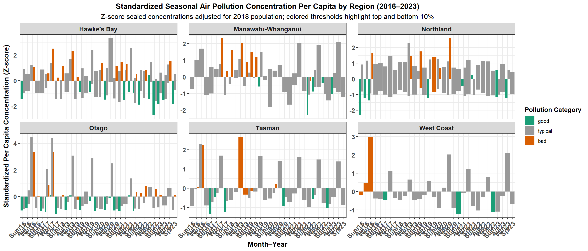
The graphs display standardized seasonal air pollution concentrations per capita for various regions from 2016 to 2023. Hawke’s Bay and Tasman show more frequent “good” (teal) periods, particularly in later years. Manawatu-Whanganui and Northland exhibit a higher prevalence of “bad” (orange) periods, especially in the earlier years. Hawke’s Bay and Otago present a mix, with Otago having some notable “bad” spikes later on. Overall, there’s regional variability in pollution trends, with some areas consistently better or worse.
5 SA2-Level Air Quality Insights for Auckland (2016–2023)
This map highlights spatial variation in particulate pollution across Auckland SA2 zones, helping identify areas with elevated per capita exposure for targeted environmental interventions.
# Filter the airdata_with_sa2 dataset to include only Auckland regionairdata_with_sa2 <- airdata_with_sa2 |>filter(region =="Auckland")# View the structure of the filtered dataglimpse(airdata_with_sa2)
# Remove unneeded columns for summary calculationsairdata_with_sa2 <- airdata_with_sa2 |>select(-region, -lawa_site_id, -arima_concentration)# Extract longitude and latitude from geometry columnairdata_with_sa2 <- airdata_with_sa2 |>mutate(longitude =st_coordinates(geometry)[, 1],latitude =st_coordinates(geometry)[, 2] )# Summarise concentration data by SA2 areaairdata_summary <- airdata_with_sa2 |>group_by(sa2_name, longitude, latitude) |>summarise(sa2_conc =sum(concentration, na.rm =TRUE), # Sum conc.sa2_conc_per_capita = sa2_conc / pop2018 *100, # Per capita conc..groups ="drop" ) |>distinct(sa2_name, longitude, latitude, sa2_conc, sa2_conc_per_capita)# Output for verificationairdata_summary
# A tibble: 7 × 5
sa2_name longitude latitude sa2_conc sa2_conc_per_capita
<chr> <dbl> <dbl> <dbl> <dbl>
1 Ellerslie South 175. -36.9 57527. 2115.
2 Glen Eden Central 175. -36.9 35021. 924.
3 Henderson Lincoln South 175. -36.9 34102. 1263.
4 Puni 175. -37.2 45549. 2761.
5 Queen Street 175. -36.8 55926. 2292.
6 Sunnyhills East 175. -36.9 36121. 1009.
7 Westlake 175. -36.8 53903. 1728.
# Create a Plotly map where:# - Marker color represents concentration per capita# - Marker size is fixed (not scaled by concentration)sa2_auckland_per_capita <-plot_ly(data = airdata_summary, type ='scattermapbox', mode ='markers',lat =~latitude, lon =~longitude,name =NULL, showlegend =FALSE,text =~paste0("SA2: ", sa2_name,"<br>Site Concentration: ", round(sa2_conc, 1), " µg/m³","<br>Per Capita: ", round(sa2_conc_per_capita, 2), " µg/m³/person"),marker =list(size =20, # Marker size is fixedcolor =~sa2_conc_per_capita, colorscale ='Viridis',opacity =1, showscale =TRUE,colorbar =list(title ="Per Capita Conc. (µg/m³/person)",x =0.95, xanchor ="left", len =0.75) )) |>layout(title =list(text =~paste("<b>SA2:</b>", sa2_name,"<br><b>Total Concentration:</b>", round(sa2_conc), "µg/m³","<br><b>Per Capita:</b>", round(sa2_conc_per_capita, 2), "µg/m³/person"),x =0.5, font =list(size =26) # ← title font size ),mapbox =list(style ="open-street-map", zoom =10,center =list(lat =median(airdata_summary$latitude, na.rm =TRUE),lon =median(airdata_summary$longitude, na.rm =TRUE))) )# Display the interactive mapsa2_auckland_per_capita
# Save map as a self-contained HTML widgethtmlwidgets::saveWidget(sa2_auckland_per_capita, "dist.html", selfcontained =TRUE)
The interactive map reveals spatial disparities in air quality across Auckland SA2 areas from 2016 to 2023. Puni consistently exhibits the highest particulate matter concentrations, indicating significant localized pollution sources. Glen Eden Central, Sunnyhills East, and Henderson Lincoln South show notably low levels, suggesting relatively clean air. Queen Street, Ellerslie South, and Westlake maintain moderate concentrations, likely reflecting persistent but stable urban emissions over time.
5.1 Integrating and Enriching Air Quality Data Across Auckland SA2 Areas
This section consolidates Air Quality Index (AQI) and key pollutant readings—including NO2, NO, PM10, and PM2.5—across multiple SA2 regions in Auckland. A reusable function is defined to prepare pollutant-specific datasets, which are then systematically merged with the main air quality dataset by date and SA2 name. This process results in a comprehensive, temporally aligned dataset suitable for spatial and temporal air quality analysis.
prepare_pollutant_data <-function(file_path, column_name, start_date ="2016-01-01", end_date ="2024-12-31") {# Read CSV df <-read.csv(file_path, header =TRUE)# Rename columnscolnames(df) <-c("date", column_name)# Remove first row (header row re-imported as data) df <- df[-1, ]# Convert columns df <- df |>mutate(date =as.Date(date),!!sym(column_name) :=as.numeric(.data[[column_name]]) ) |># Filter by date rangefilter(date >=as.Date(start_date), date <=as.Date(end_date)) |># Group by date and sum the specified columngroup_by(date) |>summarize(!!sym(column_name) :=sum(.data[[column_name]], na.rm =TRUE), .groups ="drop")return(df)}
# Using pivot_wider() function to extract wide form of indicatorairdata_with_sa2 <- airdata_with_sa2 |>pivot_wider(names_from = indicator,values_from = concentration )# Take a glimpseglimpse(airdata_with_sa2)
# Left join by matching rows where both date and sa2_name are same merged_airdata <- airdata_with_sa2 |>left_join(aqi_combined, by =c("date"="date", "sa2_name"="sa2_name")) # Take a glimpseglimpse(merged_airdata)
# Left join by matching rows where both date and sa2_name are same merged_airdata <- merged_airdata |>left_join(no2_combined, by =c("date"="date", "sa2_name"="sa2_name")) # Take a glimpseglimpse(merged_airdata)
# Read Particulate Matter 2.5 (PM2.5) - Patumahoepm2.5_patumahoe <-prepare_pollutant_data("data/patumahoe/pm2.5-patumahoe/DataSetExport-PM2,5.24-Hour Aggregate (╡g m│)@2-Maximum-ug m^3-20250417183512.csv", "PM2.5")# Read Particulate Matter 2.5 (PM2.5) - Takapunapm2.5_takapuna <-prepare_pollutant_data("data/takapuna/pm2.5-takapuna/DataSetExport-PM2,5.24-Hour Aggregate (╡g m│)@23-Instantaneous-ug m^3-20250515010302.csv", "PM2.5")# Read Particulate Matter 2.5 (PM2.5) - Penrosepm2.5_penrose <-prepare_pollutant_data("data/penrose/pm2.5-penrose/DataSetExport-PM2,5.24-Hour Aggregate (╡g m│)@7-Instantaneous-ug m^3-20250515010122.csv", "PM2.5")# Read Particulate Matter 2.5 (PM2.5) - Queen Streetpm2.5_queenstreet <-prepare_pollutant_data("data/queenstreet/pm2.5-queenstreet/DataSetExport-PM2,5.24-Hour Aggregate (╡g m│) - Unverified@9-Maximum-ug m^3-20250417181802.csv", "PM2.5")# Bind Rows of PM2.5 dataframespm2.5_combined <-bind_pollutant_data(list(pm2.5_patumahoe, pm2.5_takapuna, pm2.5_penrose, pm2.5_queenstreet),c("Puni", "Westlake", "Ellerslie South", "Queen Street"))# Left join by matching rows where both date and sa2_name are samemerged_airdata <- merged_airdata |>left_join(pm2.5_combined, by =c("date"="date", "sa2_name"="sa2_name"))
# Read Sulphur Dioxide (SO2) - Penroseso2_penrose <-prepare_pollutant_data("data/penrose/so2-penrose/DataSetExport-SO2.24-Hour Aggregate (╡g m│)@7-Instantaneous-ug m^3-20250514230023.csv", "SO2")# Bind Rows of SO2so2_combined <-bind_pollutant_data(list(so2_penrose),c("Ellerslie South"))# Left join by matching rows where both date and sa2_name are samemerged_airdata <- merged_airdata |>left_join(so2_combined, by =c("date"="date", "sa2_name"="sa2_name"))
# Read Air Temperature - Hendersonairtemp_henderson <-prepare_pollutant_data("data/henderson/airtemp-henderson/DataSetExport-Air Temp.24-Hour Aggregate (░C)@5-Instantaneous-degC-20250522081344.csv", "AirTemp")# Read Air Temperature - Pakurangaairtemp_pakuranga <-prepare_pollutant_data("data/pakuranga/airtemp-pakuranga/DataSetExport-Air Temp.24-Hour Aggregate (░C)@1-Instantaneous-degC-20250522082128.csv", "AirTemp")# Read Air Temperature - Glen Edenairtemp_gleneden <-prepare_pollutant_data("data/gleneden/airtemp-gleneden/DataSetExport-Air Temp.24-Hour Aggregate (░C)@67-Instantaneous-degC-20250522082803.csv", "AirTemp")# Read Air Temperature - Takapunaairtemp_takapuna <-prepare_pollutant_data("data/takapuna/airtemp-takapuna/DataSetExport-Air Temp.24-Hour Aggregate (░C)@23-Instantaneous-degC-20250514062829.csv", "AirTemp")# Read Air Temperature - Penroseairtemp_penrose <-prepare_pollutant_data("data/penrose/airtemp-penrose/DataSetExport-Air Temp.24-Hour Aggregate (░C)@7-Instantaneous-degC-20250514064042.csv", "AirTemp")# Read Air Temperature - Queen Streetairtemp_queenstreet <-prepare_pollutant_data("data/queenstreet/airtemp-queenstreet/DataSetExport-Air Temp.24-Hour Aggregate (░C)@9-Maximum-degC-20250417181451.csv", "AirTemp")# Bind rowsairtemp_combined <-bind_pollutant_data(list(airtemp_henderson, airtemp_pakuranga, airtemp_gleneden, airtemp_takapuna, airtemp_penrose, airtemp_queenstreet),c("Henderson Lincoln South", "Sunnyhills East", "Glen Eden Central", "Westlake", "Ellerslie South", "Queen Street"))# Left join by matching rows where both date and sa2_name are same merged_airdata <- merged_airdata |>left_join(airtemp_combined, by =c("date"="date", "sa2_name"="sa2_name")) # Take a glimpseglimpse(merged_airdata)
This section visualizes the relationships between weather and air quality variables across Auckland sites. Correlation heatmaps are generated to identify pollutant interdependencies and meteorological influences.
plot_heatmap <-function(data, title_var) { correlation_data <- data |>group_modify(~ { df <- .x # Assign the subset data frameif (nrow(na.omit(df)) >=2) { corr_matrix <-cor(df, use ="complete.obs") corr_long <-as.data.frame(as.table(corr_matrix))names(corr_long) <-c("Var1", "Var2", "Correlation") corr_long } else {tibble(Var1 =character(), Var2 =character(), Correlation =numeric()) }}) |>ungroup()# Plot the correlation heatmapp <-ggplot(correlation_data, aes(x = Var1, y = Var2, fill = Correlation)) +geom_tile() +#color = "white") +geom_text(aes(label =round(Correlation, 2)), size =5) +scale_fill_viridis_c(option ="mako", limits =c(-1, 1),name ="Pearson r" ) +theme_bw() +labs(title ="Correlation Matrix of Daily Weather and Air Quality Variables (2016–2024)",subtitle =paste("For ", title_var, " in Auckland"),x =NULL, y =NULL, fill ="Pearson r" ) +theme(legend.title =element_text(size =12, face ="bold"),legend.text =element_text(size =11, face ="bold"),plot.title =element_text(size =14, face ="bold", hjust =0.5),plot.subtitle =element_text(size =13, hjust =0.5),axis.title =element_text(size =12, face ="bold"),axis.text =element_text(size =12, face ="bold") )return(p)}
# Find which factor has all missing valuesmerged_airdata |>group_by(sa2_name) |>select(WindSpeed, WindDir, AirTemp, AQI, NO2, NO, PM10, PM2.5, SO2) |>summarise(across(everything(), ~all(is.na(.x))),.groups ="drop")
# Ellerslie South has numeric data for all variables# Glen Eden Central and Henderson Lincoln South has all data missing for PM2.5 and SO2# Puni has all data missing for WindSpeed, WindDir, AirTemp, and SO2# Queen Street does not contain data for WindSpeed, WindDir, and SO2# Sunnyhills East has all data missing for NO2, NO, PM2.5, SO2# Westlake has all data missing for SO2ellerslie_data <- merged_airdata |>filter(sa2_name =="Ellerslie South") |>select(WindSpeed, WindDir, AirTemp, AQI, NO2, NO, PM10, PM2.5, SO2)plot_corr_heatmap <-plot_heatmap(ellerslie_data, "Ellerslie South site")plot_corr_heatmap
NO and NO2 have the highest correlations (0.78), indicating strong correlation. NO and NO2 also show high correlation with SO2 (0.7 and 0.57). AirTemp negatively correlates with NO2 (-0.48), while WindSpeed has weak correlations with pollutants (-0.47 to 0.24). AQI has 0 correlation with WindSpeed. Correlations suggest meteorological influences on air pollution dynamics at Ellerslie South.
# View the number of missing values in key columnsellerslie_data |>summarise(across(c(WindSpeed, WindDir, AirTemp, AQI, NO2, NO, PM10, PM2.5, SO2), ~sum(is.na(.))))
# Impute missing values using Kalman smoothing (auto ARIMA model)# This method handles time-series gaps more intelligently than simple methodsellerslie_data <- ellerslie_data |>mutate(WindSpeed =na_kalman(WindSpeed, model ="auto.arima"),WindDir =na_kalman(WindDir, model ="auto.arima"),AirTemp =na_kalman(AirTemp, model ="auto.arima"),AQI =na_kalman(AQI, model ="auto.arima"),NO2 =na_kalman(NO2, model ="auto.arima"),NO =na_kalman(NO, model ="auto.arima"),PM10 =na_kalman(PM10, model ="auto.arima"),PM2.5 =na_kalman(PM2.5, model ="auto.arima"),SO2 =na_kalman(SO2, model ="auto.arima"))# Plot a heatmap of correlations after imputing missing valuesplot_corr_heatmap <-plot_heatmap(ellerslie_data, "ARIMA approximated missing values at Ellerslie South site")plot_corr_heatmap
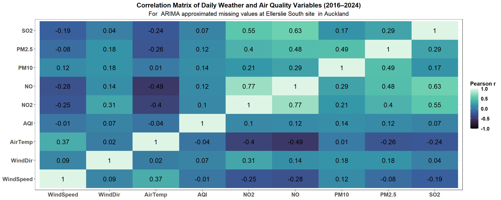
SO2, NO, and NO2 show strong positive correlations, indicating shared sources. PM2.5 is tightly linked with PM10 and NO. Wind speed inversely correlates with AQI and all pollutants except PM10, suggesting pollutant dispersion. Air temperature correlates negatively with AQI and all pollutants but positively with PM10 concentrations, reflecting meteorological influences.
# Select the required columnsgleneden_data <- merged_airdata |>filter(sa2_name =="Glen Eden Central") |>select(WindSpeed, WindDir, AirTemp, AQI, NO2, NO, PM10)# View the number of missing values in key columnsgleneden_data |>summarise(across(c(WindSpeed, WindDir, AirTemp, AQI, NO2, NO, PM10), ~sum(is.na(.))))
# Plot a heatmap of correlationsplot_corr_heatmap <-plot_heatmap(gleneden_data, "Glen Eden Central site")plot_corr_heatmap
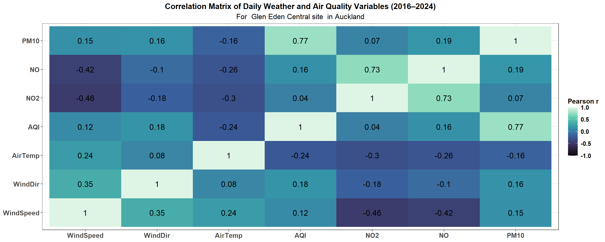
NO2 shows a strong positive correlation with NO. WindSpeed has a negative correlation with NO and NO2, suggesting pollutant dispersion. AirTemp correlates negatively but weakly with AQI and pollutants, reflecting indirect effects on pollution levels.
# Select the columns requiredhenderson_data <- merged_airdata |>filter(sa2_name =="Henderson Lincoln South") |>select(WindSpeed, WindDir, AirTemp, AQI, NO2, NO, PM10)# View the number of missing values in key columnshenderson_data |>summarise(across(c(WindSpeed, WindDir, AirTemp, AQI, NO2, NO, PM10), ~sum(is.na(.))))
# Plot a heatmap of correlationsplot_corr_heatmap <-plot_heatmap(henderson_data, "Henderson Lincoln South site")plot_corr_heatmap
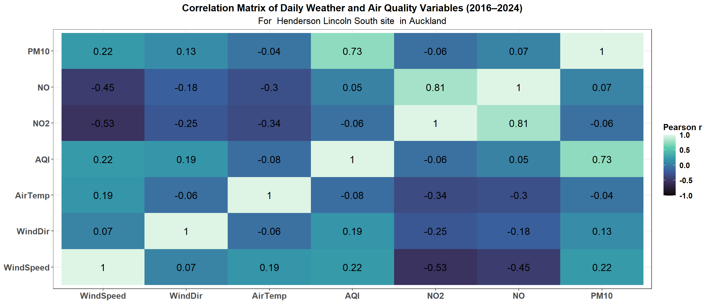
The correlation matrix at Henderson Lincoln South (2016–2024) reveals strong positive correlation between NO and NO2 (0.81), suggesting co-emission sources. Conversely, NO and NO2 show negative correlation with AirTemp (-0.3 and -0.34), indicating atmospheric dispersion effects. PM10 and AQI exhibit a positive correlation (0.73), reflecting air quality deterioration with increased PM10 levels. NO and NO2 shows negative correlation with WindSpeed, implying pollutant dispersion under higher wind conditions.
# Select the required columnspuni_data <- merged_airdata |>filter(sa2_name =="Puni") |>select(AQI, NO2, NO, PM10, PM2.5)# View the number of missing values in key columnspuni_data |>summarise(across(c(AQI, NO2, NO, PM10, PM2.5), ~sum(is.na(.))))
# Plot a heatmap of correlationsplot_corr_heatmap <-plot_heatmap(puni_data, "Puni site")plot_corr_heatmap
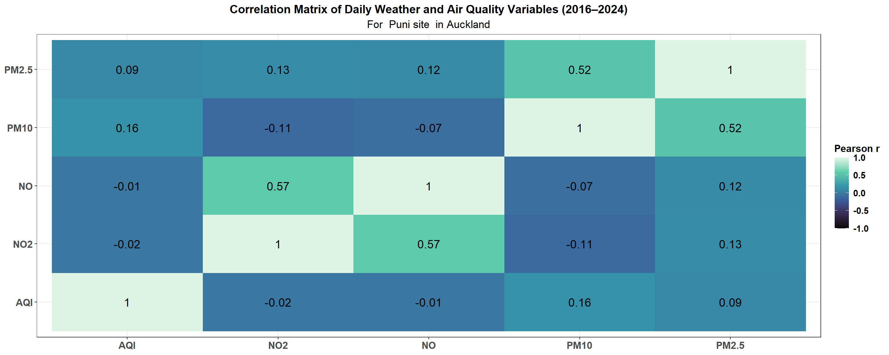
NO and NO2 show the strongest correlation (0.57), indicating linked emissions. PM10 and NO2 exhibit the weakest negative correlation (-0.11). AQI weakly correlates with other pollutants, suggesting multifactorial influences. The matrix highlights variability in pollutant interactions over time and site conditions.
# Select the required columnsqueen_data <- merged_airdata |>filter(sa2_name =="Queen Street") |>select(AirTemp, AQI, NO2, NO, PM10, PM2.5)# View the number of missing values in key columnsqueen_data |>summarise(across(c(AirTemp, AQI, NO2, NO, PM10, PM2.5), ~sum(is.na(.))))
# Plot a heatmap of correlations plot_corr_heatmap <-plot_heatmap(queen_data, "Queen Street site")plot_corr_heatmap
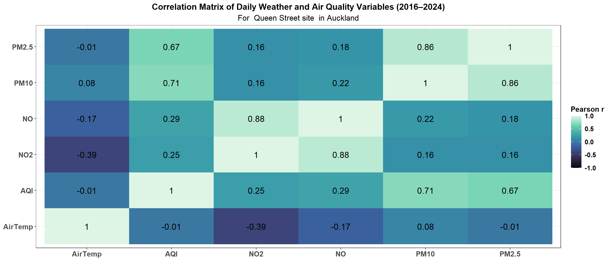
The correlation matrix shows strong positive correlations between NO and NO2 (0.86) and between PM2.5 and PM10 (0.85). AirTemp has a moderate negative correlation with NO2 (-0.33), suggesting temperature influences nitrogen dioxide concentrations.
# Select required columnssunnyhills_data <- merged_airdata |>filter(sa2_name =="Sunnyhills East") |>select(WindSpeed, WindDir, AirTemp, AQI, PM10)# View the number of missing values in key columnssunnyhills_data |>summarise(across(c(WindSpeed, WindDir, AirTemp, AQI, PM10), ~sum(is.na(.))))
# Plot a heatmap of correlationsplot_corr_heatmap <-plot_heatmap(sunnyhills_data, "Sunnyhills East site")plot_corr_heatmap
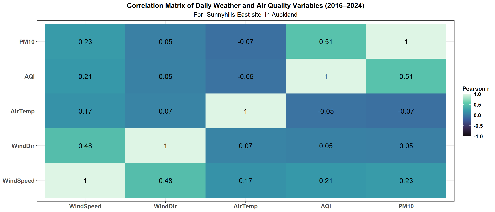
WindSpeed and WindDir show the moderate positive correlation (0.48), indicating wind speed tends to rise with directional shifts. PM10 and AQI correlate’s moderately (0.51), linking pollution levels with air quality index changes. AirTemp has weak connections, with WindSpeed and WindDir.
# Select the required columnswestlake_data <- merged_airdata |>filter(sa2_name =="Westlake") |>select(WindSpeed, WindDir, AirTemp, AQI, NO2, NO, PM10, PM2.5)# Plot a heatmap of correlationsplot_corr_heatmap <-plot_heatmap(westlake_data, "Westlake site")plot_corr_heatmap
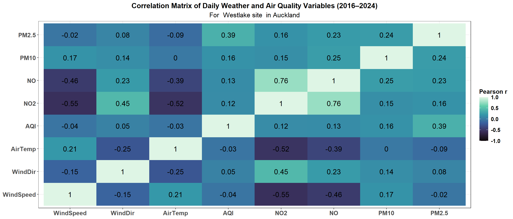
NO and NO2 strongly correlate (0.76), indicating related emission sources. NO2 and NO inversely correlates with WindSpeed (-0.46 and -0.55), suggesting dispersion effects. PM2.5 and AQI correlate moderately (0.39), reflecting air quality dependencies. NO2 and WindDir show moderate correlation (0.45), hinting at directional transport influences. NO and NO2 negatively correlates with AirTemp.
Temporal Trends in Daily Pollutant Concentrations
This section explores daily pollutant trends across Auckland sites from 2016 to 2024. After imputing missing values using ARIMA and median substitution, visualizations reveal site-specific air quality patterns and temporal changes in key pollutants like AQI, NO2, NO, PM10, PM2.5, and SO2.
# Find approximate values for missing ones, fill the missing values with ARIMA approximated values.daily_airdata <- merged_airdata |>group_by(sa2_name) |>group_modify(~ { data <- .# Apply ARIMA imputation only if the entire column is not all NA data$WindSpeed <-if (all(is.na(data$WindSpeed))) data$WindSpeed elsena_kalman(data$WindSpeed, model ="auto.arima") data$WindDir <-if (all(is.na(data$WindDir))) data$WindDir elsena_kalman(data$WindDir, model ="auto.arima") data$AirTemp <-if (all(is.na(data$AirTemp))) data$AirTemp elsena_kalman(data$AirTemp, model ="auto.arima") data$AQI <-if (all(is.na(data$AQI))) data$AQI elsena_kalman(data$AQI, model ="auto.arima") data$NO2 <-if (all(is.na(data$NO2))) data$NO2 elsena_kalman(data$NO2, model ="auto.arima") data$NO <-if (all(is.na(data$NO))) data$NO elsena_kalman(data$NO, model ="auto.arima") data$PM10 <-if (all(is.na(data$PM10))) data$PM10 elsena_kalman(data$PM10, model ="auto.arima") data$PM2.5<-if (all(is.na(data$PM2.5))) data$PM2.5elsena_kalman(data$PM2.5, model ="auto.arima") data$SO2 <-if (all(is.na(data$SO2))) data$SO2 elsena_kalman(data$SO2, model ="auto.arima")return(data) }) |>ungroup()# Produce a daily_airdata dataset that contains daily total pollutant concentrations and AQI for each SA2_namedaily_airdata <- daily_airdata |>group_by(sa2_name, date) |>mutate(NO2 =sum(NO2, na.rm =TRUE),NO =sum(NO, na.rm =TRUE),PM10 =sum(PM10, na.rm =TRUE),PM2.5 =sum(PM2.5, na.rm =TRUE),SO2 =sum(SO2, na.rm =TRUE),AQI =sum(AQI, na.rm =TRUE)) |>ungroup()colnames(daily_airdata)
# Function to plot pollutants versus date for each sa2_nameplot_pollutant <-function(data, yvar) {ggplot(data = data, aes(x = date, y = .data[[yvar]])) +geom_col(aes(fill = color_group)) +stat_cor(method ="pearson", size =4,label.x.npc ="center", label.y.npc ="top") +facet_wrap(~ sa2_name, scales ="free") +scale_fill_identity(name =paste(yvar, "Level"),guide ="legend",labels =c("Low", "Moderate", "High"),breaks =c("#377eb8", "#A0AEB2", "#E24A33") ) +scale_x_date(breaks =seq(as.Date("2016-01-01"), as.Date("2024-12-31"), by ="6 months"),date_labels ="%b %y") +theme_bw() +labs(title =paste("Daily Trend of", yvar, "at Each Site in Auckland (2016–2024)"),subtitle ="Missing values are approximate by ARIMA method",x ="Month Year", y =bquote(.(yvar) ~"Concentration ("* mu *"g/"* m^3*")") ) +theme(plot.title =element_text(size =13, face ="bold", hjust =0.5),plot.subtitle =element_text(size =12, hjust =0.5),axis.title =element_text(size =11, face ="bold"),strip.text =element_text(size =11, face ="bold"),axis.text.x =element_text(angle =45, hjust =1, face ="bold") ) }
# Calculate 10th and 90th percentilesquantiles <-quantile(daily_airdata$AQI, probs =c(0.1, 0.9), na.rm =TRUE)# Add color grouping based on AQI percentilesdaily_airdata <- daily_airdata |>mutate(color_group =case_when( AQI <= quantiles[1] ~"#377eb8", AQI >= quantiles[2] ~"#E24A33",TRUE~"#A0AEB2" ))# Generate plotplot_aqi_vs_date <-plot_pollutant(daily_airdata, "AQI") +labs(y ="AQI")# Display plotplot_aqi_vs_date
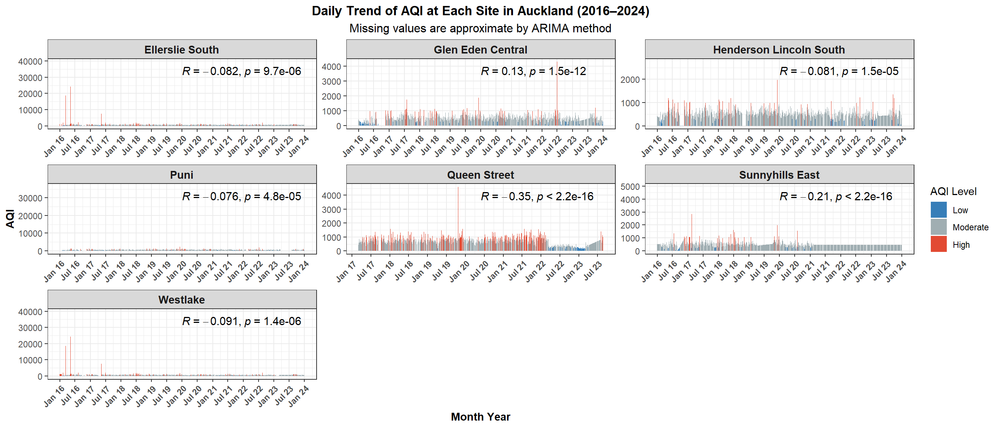
Queen Street shows the strongest AQI decline (R = –0.35), indicating worsening air quality. Puni and Sunnyhills East have frequent extreme spikes with moderate declines. Henderson Lincoln South, Westlake, and Ellerslie South show smaller but significant decreases. Glen Eden Central exhibit weak, significant positive trend. AQI trends vary notably across Auckland sites.
Queen Street show consistently high NO2 levels, especially pre-2021, with clear downward trend (R = –0.38). Westlake and Ellerslie South also show moderate levels and significant declines. Henderson Lincoln South has low-moderate values with a weak trend (R = –0.11). Glen Eden Central and Puni stands out with the lowest and a slight positive trend (R = 0.063 and 0.016) with Puni being stable.
# Calculate 10th and 90th percentilesquantiles <-quantile(daily_airdata$NO, probs =c(0.1, 0.9), na.rm =TRUE)# Add color grouping based on NO percentilesdaily_airdata <- daily_airdata |>mutate(color_group =case_when( NO <= quantiles[1] ~"#377eb8", NO >= quantiles[2] ~"#E24A33",TRUE~"#A0AEB2" ))# Generate plotplot_no_vs_date <-plot_pollutant(filter(daily_airdata, sa2_name !="Sunnyhills East"), "NO")# Display plotplot_no_vs_date
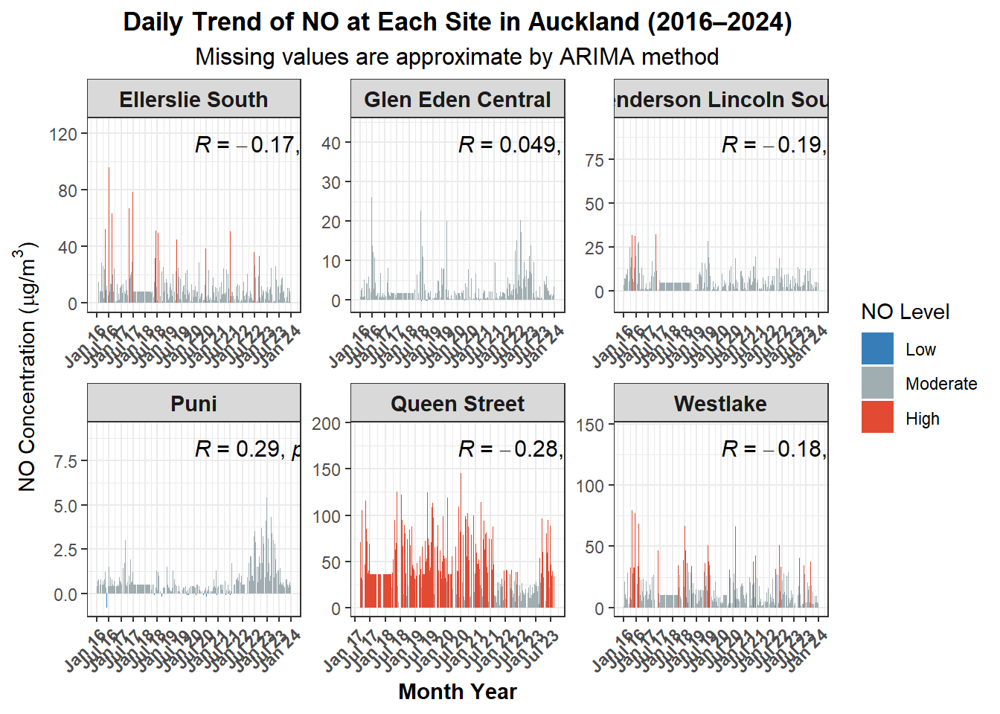
NO levels varied notably across sites. Queen Street showed frequent high NO levels, while Henderson Lincoln South recorded predominantly moderate and low levels. Ellerslie South and Westlake had moderate NO with few high peaks. Notably, Puni and Glen Eden Central showed a positive trend, while others showed declining or fluctuating NO levels over time.
# Calculate 10th and 90th percentilesquantiles <-quantile(daily_airdata$PM10, probs =c(0.1, 0.9), na.rm =TRUE)# Add color grouping based on PM10 percentilesdaily_airdata <- daily_airdata |>mutate(color_group =case_when( PM10 <= quantiles[1] ~"#377eb8", PM10 >= quantiles[2] ~"#E24A33",TRUE~"#A0AEB2" ))# Generate plotplot_pm10_vs_date <-plot_pollutant(daily_airdata, "PM10")# Display plotplot_pm10_vs_date
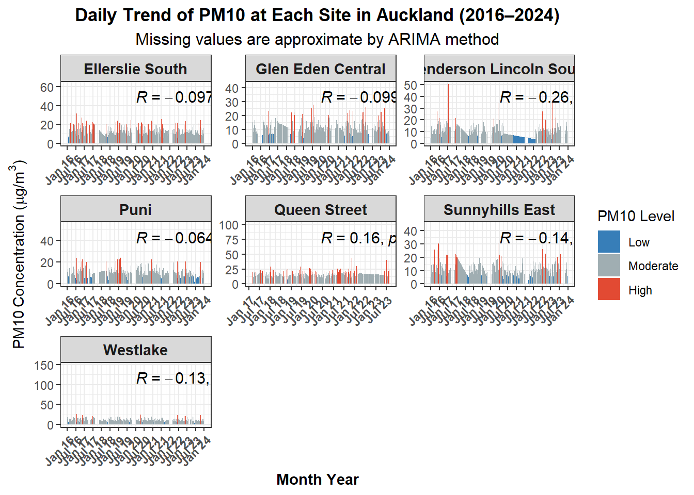
PM10 levels vary across Auckland sites, with notable trends. Queen Street (R = 0.16) shows an increasing trend, while Henderson Lincoln South (R = -0.26) and Ellerslie South (R = -0.097) show declines. Puni (R = -0.064), Glen Eden Central (R = -0.099), and Ellerslie South (R = -0.097) show minor decreases.
# Calculate 10th and 90th percentilesquantiles <-quantile(daily_airdata$PM2.5, probs =c(0.1, 0.9), na.rm =TRUE)# Add color grouping based on PM2.5 percentilesdaily_airdata <- daily_airdata |>mutate(color_group =case_when( PM2.5<= quantiles[1] ~"#377eb8", PM2.5>= quantiles[2] ~"#E24A33",TRUE~"#A0AEB2" ))# Generate plotplot_pm25_vs_date <-plot_pollutant(filter(daily_airdata, !(sa2_name %in%c("Sunnyhills East", "Glen Eden Central", "Henderson Lincoln South"))), "PM2.5")# Display plotplot_pm25_vs_date
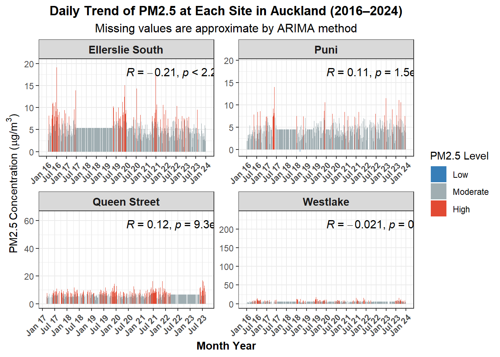
Queen Street and Puni shows a moderate positive trend over time (R = 0.12 and R = 0.11). Ellerslie South and Westlake experience frequent high levels, and shows moderate and weak trends. Statistical significance confirms clear differences across site-specific trends.
The graph presents daily SO2 levels at Ellerslie South, Auckland (2016–2024), highlighting ARIMA-estimated missing values and a weak negative correlation, emphasizing seasonal fluctuations and long-term variability in pollutant concentrations.
5.2 Air Quality Index vs Pollutant Concentrations Across Auckland Suburbs
This section explores how daily concentrations of NO2, NO, PM10, PM2.5, and SO2 relate to the Air Quality Index (AQI) from 2016 to 2024. Using GAM trend lines and Pearson correlations across Auckland suburbs, the plots highlight varying relationships between pollutants and AQI, revealing regional differences in air quality responses.
Air Quality Index vs Pollutant Concentrations Across Auckland Suburbs
# Define a custom plotting function to examine the relationship between AQI and a selected pollutantplot_aqi_vs_pollutants <-function(data, xvar) {ggplot(data = data, aes(x = .data[[xvar]], y = AQI)) +geom_point(aes(color = color_group)) +# Scatter plot colored by AQI categoriesgeom_smooth(method ="gam", color ="#CC79A7", se =FALSE) +# Add smooth GAM trend linescale_color_identity(name ="AQI Level", # Title for the legendguide ="legend", labels =c("Low AQI", "High AQI", "Mid-range"), # Labels for color groupsbreaks =c("#377eb8", "#E24A33", "#A0AEB2") # Color codes matching the legend labels ) +scale_y_log10(labels = scales::scientific) +# Apply log scale to AQI stat_cor(method ="pearson", size =5) +# Display Pearson correlation coefficientsfacet_wrap(~ sa2_name, scales ="free") +# One panel per SA2 suburb with independent scalestheme_bw() +labs(title =paste("Relationship Between Daily ", xvar, " Concentration and Air Quality Index (2016–2024)"),subtitle ="GAM smooth trend with Pearson correlation for each SA2 region",x =bquote(.(xvar) ~"Concentration ("* mu *"g/"* m^3*")"), # Dynamic x-axis label with unitsy ="Air Quality Index (log scale)"# y-axis label ) +theme(plot.title =element_text(size =13, hjust =0.5, face ="bold"),plot.subtitle =element_text(size =11, hjust =0.5),axis.title =element_text(size =11, face ="bold"),axis.text =element_text(size =11, face ="bold"),strip.text =element_text(size =11, face ="bold") )}
# Checks if NO2 data is available for Sunnyhills East (it's not)daily_airdata |>filter(sa2_name =="Sunnyhills East") |>count(NO2)
# A tibble: 1 × 2
NO2 n
<dbl> <int>
1 0 2876
# Calculate 10th and 90th percentilesquantiles <-quantile(daily_airdata$AQI, probs =c(0.1, 0.9), na.rm =TRUE)# Categorizes AQI into Low, Mid-range, and High using 10th and 90th percentilesdaily_airdata <- daily_airdata |>mutate(color_group =case_when( AQI <= quantiles[1] ~"#377eb8", AQI >= quantiles[2] ~"#E24A33",TRUE~"#A0AEB2" ))# Plots AQI vs NO2 for Auckland suburbs (excluding Sunnyhills East)plot_aqi_vs_no2 <-plot_aqi_vs_pollutants(filter(daily_airdata, sa2_name !="Sunnyhills East"), "NO2")# Display plotplot_aqi_vs_no2
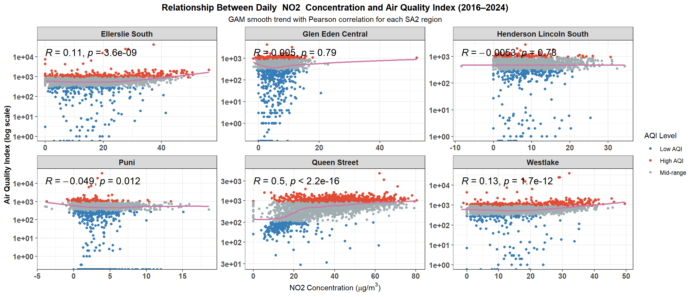
Queen Street shows a clear upward trend in AQI with increasing NO2, reinforced by a strong correlation (R = 0.49). Ellerslie South and Westlake follow similar, though weaker, trends. Sites like Puni, Henderson Lincoln South, and Glen Eden Central show slight AQI declines as NO2 rises, with Puni’s correlation (R = -0.048) suggesting a modest inverse relationship between pollution levels and air quality categorization.
# Plots AQI vs NO across Auckland suburbsplot_aqi_vs_no <-plot_aqi_vs_pollutants(filter(daily_airdata, sa2_name !="Sunnyhills East"), "NO")# Display plotplot_aqi_vs_no
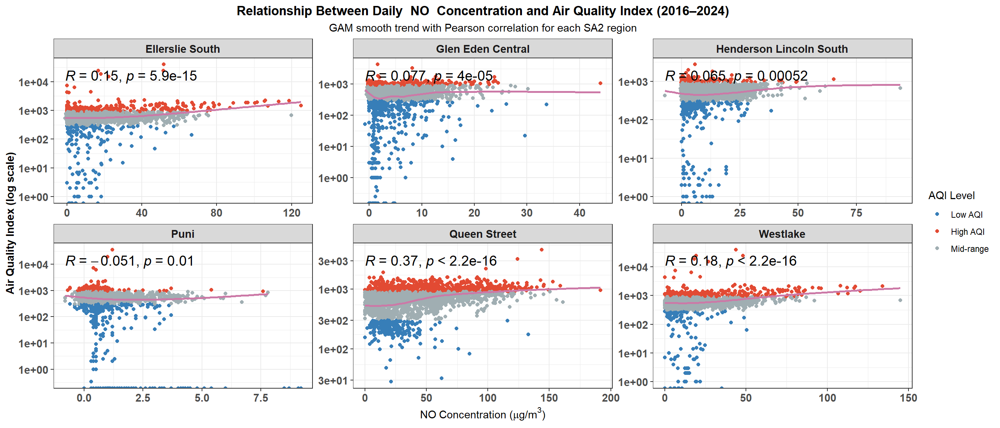
Queen Street shows the moderate positive correlation (R = 0.35), while Puni has a weak negative correlation (R = -0.049). Ellerslie South and Westlake also show notable trends (R = 0.14, 0.17). AQI categories highlight pollutant variability, with high AQI associated with elevated NO levels across sites. Henderson Lincoln South shows no clear correlation.
# Plots AQI vs PM10 for all Auckland suburbsplot_aqi_vs_pm10 <-plot_aqi_vs_pollutants(daily_airdata, "PM10")# Display plotplot_aqi_vs_pm10
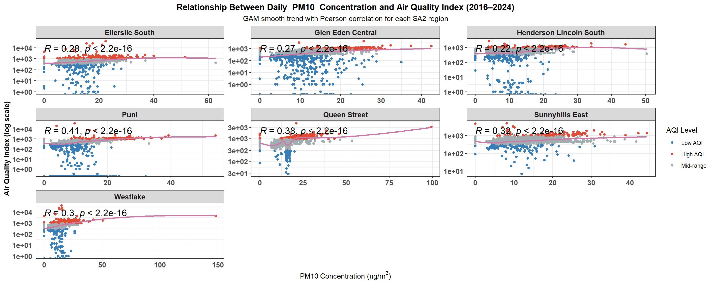
PM10 concentration correlates moderately with AQI across regions, with R values between 0.22 and 0.41. The GAM trend lines indicate varying patterns, suggesting differences in pollution dynamics. High AQI levels align with increased PM10, while low AQI spans broader concentration ranges. Regional variations highlight distinct pollutant behaviors, emphasizing localized air quality influences and the need for tailored mitigation strategies.
# Plots AQI vs PM2.5 (excludes suburbs with incomplete PM2.5 data)plot_aqi_vs_pm2.5<-plot_aqi_vs_pollutants(filter(daily_airdata, !sa2_name %in%c("Glen Eden Central", "Henderson Lincoln South", "Sunnyhills East")), "PM2.5")# Display plotplot_aqi_vs_pm2.5
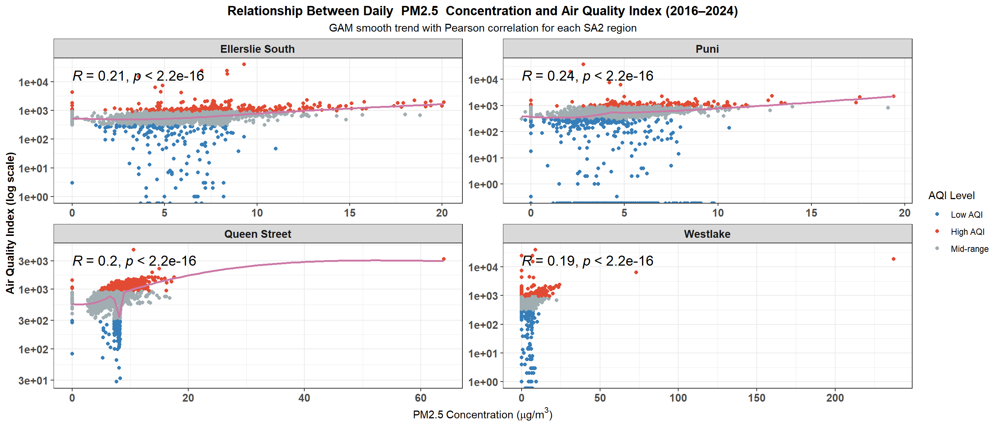
The GAM smooth trends show increasing PM2.5 concentrations with AQI across all regions, though with variations in slope. Correlation coefficients indicate weak to moderate positive associations (R = 0.18 to 0.34). Queen Street exhibit highest correlations. Categories reveal AQI levels predominantly in the low to mid range, with high AQI events infrequent yet impactful.
# Plots AQI vs SO2 specifically for Ellerslie Southplot_aqi_vs_so2 <-plot_aqi_vs_pollutants(filter(daily_airdata, sa2_name =="Ellerslie South"), "SO2")# Display plotplot_aqi_vs_so2
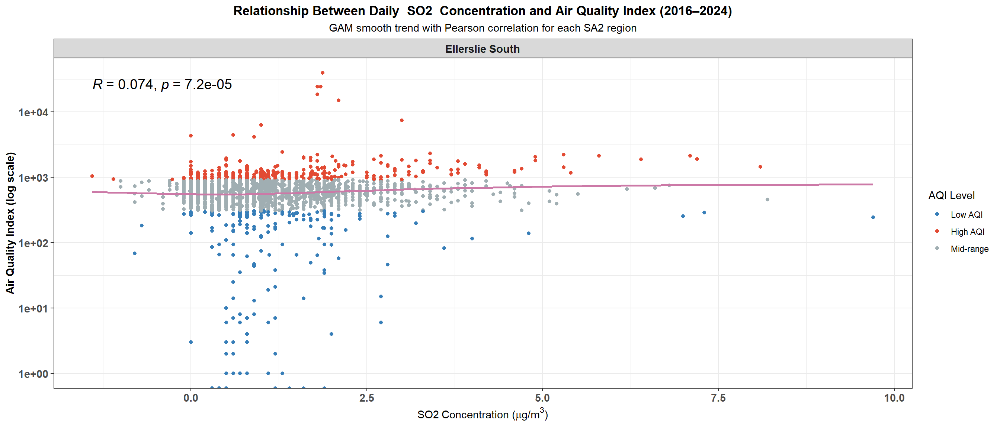
SO2 concentration and AQI in Ellerslie South show a weak correlation (R = 0.059, p = 0.0016). High AQI events are rare, with most readings in low-to-mid categories. No strong temporal trend is evident.
5.3 Air Temperature versus Pollutant Concentrations Across Auckland Suburbs
This section explores how daily air temperature influences pollutant concentrations (NO2, NO, PM10, PM2.5, SO2) across selected Auckland suburbs. Using GAM smoothing and correlation analysis, both raw and standardized data are examined to reveal regional trends and statistical relationships, highlighting the impact of temperature extremes on urban air quality from 2016 to 2024.
# Calculate 10th and 90th percentilesquantiles <-quantile(daily_airdata$AirTemp, probs =c(0.1, 0.9), na.rm =TRUE)# Categorizes air temperature into Low, Mid-range, and High using 10th and 90th percentilesdaily_airdata <- daily_airdata |>mutate(color_group =case_when( AirTemp <= quantiles[1] ~"#377eb8", AirTemp >= quantiles[2] ~"#E24A33",TRUE~"#A0AEB2" ))# Define a custom plotting function to examine the relationship between air temperature and a selected pollutantplot_airtemp_vs_pollutants <-function(data, yvar, stat_y) {ggplot(data = data, aes(x = AirTemp, y = .data[[yvar]])) +geom_point(aes(color = color_group)) +# Scatter plot colored by pollutant categoriesgeom_smooth(method ="gam", color ="#CC79A7", se =FALSE) +# Add smooth GAM trend linescale_color_identity(name ="AirTemp Level", # Title for the legendguide ="legend", labels =c("Cold", "Warm", "Hot"), # Labels for color groupsbreaks =c("#377eb8", "#A0AEB2", "#E24A33") # Color codes matching the legend labels ) +scale_y_log10(labels = scales::scientific) +# Apply log scale to AQI stat_cor(method ="pearson", size =5,label.x.npc ="left", label.y.npc = stat_y) +facet_wrap(~ sa2_name, scales ="free") +# One panel per SA2 suburb with independent scalestheme_bw() +labs(title =paste("Relationship Between Daily Air Temperature and ", yvar, " Concentration (2016–2024)"),subtitle ="GAM smooth trend with Pearson correlation for each SA2 region",x ="Air Temperature (°C)",y =bquote(.(yvar) ~"Concentration ("* mu *"g/"* m^3*")") # Dynamic y-axis label with units ) +theme(plot.title =element_text(size =13, hjust =0.5, face ="bold"),plot.subtitle =element_text(size =11, hjust =0.5),axis.title =element_text(size =11, face ="bold"),axis.text =element_text(size =11, face ="bold"),strip.text =element_text(size =11, face ="bold"),legend.title =element_text(size =11, face ="bold"),legend.text =element_text(size =11, face ="bold") )}
# View distinct values of AirTemp in each sa2_namedaily_airdata |>group_by(sa2_name) |>summarize(total_rows =n(), missing_airtemp =sum(is.na(AirTemp)),.groups ="drop")
# A tibble: 7 × 3
sa2_name total_rows missing_airtemp
<chr> <int> <int>
1 Ellerslie South 2879 0
2 Glen Eden Central 2827 0
3 Henderson Lincoln South 2823 0
4 Puni 2834 2834
5 Queen Street 2276 0
6 Sunnyhills East 2876 0
7 Westlake 2823 0
# Puni has all values missing, while others have partial missing data# Filter out "Puni"daily_airdata <- daily_airdata |>filter(sa2_name !="Puni") |>group_by(sa2_name) |># Approximate missing AirTemp using ARIMA imputationmutate(AirTemp =na_kalman(AirTemp, model ="auto.arima")) |>ungroup()# Check if missing values are all approximateddaily_airdata |>group_by(sa2_name) |>filter(is.na(AirTemp)) |>ungroup()
# A tibble: 0 × 18
# ℹ 18 variables: sa2_name <chr>, site_type <chr>, date <date>, year <chr>,
# geometry <GEOMETRY [°]>, pop2018 <int>, longitude <dbl>, latitude <dbl>,
# AQI <dbl>, NO2 <dbl>, NO <dbl>, PM10 <dbl>, PM2.5 <dbl>, SO2 <dbl>,
# AirTemp <dbl>, WindDir <dbl>, WindSpeed <dbl>, color_group <chr>
# All missing AirTemp values are approximated# Standardized air temperature, air pollutants, and AQI for each sitestandardized_airdata <- daily_airdata |>group_by(sa2_name) |>mutate(AirTemp = (AirTemp -mean(AirTemp)) /sd(AirTemp),AQI = (AQI -mean(AQI)) /sd(AQI),NO2 = (NO2 -mean(NO2)) /sd(NO2),NO = (NO -mean(NO)) /sd(NO),PM10 = (PM10 -mean(PM10)) /sd(PM10),PM2.5 = (PM2.5-mean(PM2.5)) /sd(PM2.5),SO2 = (SO2 -mean(SO2)) /sd(SO2) ) |>ungroup()# View the selected column detailsstandardized_airdata |>select(AirTemp, AQI, NO2, NO, PM10, PM2.5, SO2) |>skim()
Data summary
Name
select(…)
Number of rows
16504
Number of columns
7
_______________________
Column type frequency:
numeric
7
________________________
Group variables
None
Variable type: numeric
skim_variable
n_missing
complete_rate
mean
sd
p0
p25
p50
p75
p100
hist
AirTemp
0
1.00
0
1
-14.87
-0.42
0.13
0.70
4.03
▁▁▁▇▆
AQI
0
1.00
0
1
-2.44
-0.32
-0.10
0.24
35.23
▇▁▁▁▁
NO2
2876
0.83
0
1
-3.50
-0.74
-0.17
0.62
13.24
▇▇▁▁▁
NO
2876
0.83
0
1
-1.77
-0.71
-0.34
0.41
9.30
▇▂▁▁▁
PM10
0
1.00
0
1
-3.01
-0.65
-0.12
0.53
25.18
▇▁▁▁▁
PM2.5
8526
0.48
0
1
-2.90
-0.72
0.02
0.47
39.01
▇▁▁▁▁
SO2
13625
0.17
0
1
-2.61
-0.57
-0.16
0.45
8.74
▆▇▁▁▁
# All variables are approximately centered around zero, confirming successful standardization. The missing value counts are for the sites not having that pollutant. Histograms show skewness, with AQI and PM pollutants heavily right-skewed, and NO2 and SO2 slightly more dispersed.
AQI vs Air Temperature
Visually check for correlation between raw air temperature and AQI levels across sites. Explore whether AQI vary consistently with temperature. Assess whether standardizing air temperature and AQI improves clarity of trends. Reduces distortion from temperature outliers for better pattern detection.
# Plot raw air temperature vs AQI for selected sitesplot_airtemp_vs_aqi <-plot_airtemp_vs_pollutants(filter(daily_airdata, sa2_name !="Puni"), "AQI", "top") +labs(y ="Air Quality Index (AQI)")# Display plotplot_airtemp_vs_aqi
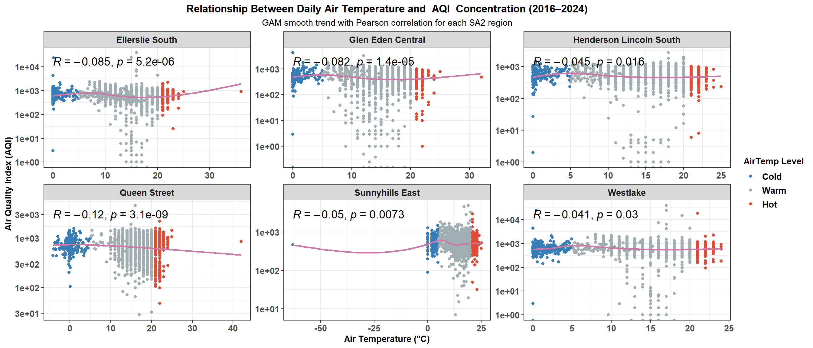
AQI declines with temperature significantly at Queen Street (R = -0.12), Ellerslie South (R = -0.085), and Glen Eden Central (R = -0.082), suggesting a weak negative trend. Westlake, Henderson Lincoln South, and Sunnyhills East shows non-significant correlation (p > 0.001), while other sites exhibit insignificant trends. Potential outliers may exist where AQI spikes unexpectedly, possibly due to local pollution events.
# Plot standardized air temperature vs AQI standardized for selected sitesstandardize_airtemp_vs_aqi <-plot_airtemp_vs_pollutants(filter(standardized_airdata, sa2_name !="Puni"), "AQI", "top") +scale_y_continuous() +# Change to normal scalelabs(title ="Relationship Between Daily Standardized Air Temperature and AQI Standardized (2016–2024)",x ="Standardized Air Temperature",y ="Standardized AQI")# Display plotstandardize_airtemp_vs_aqi
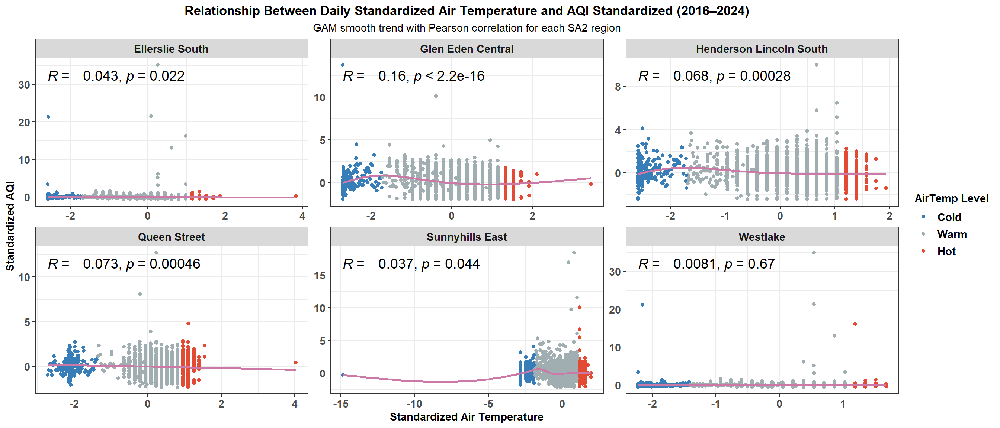
Standardized AQI data improves clarity but retains similar trends. Ellerslie South loses significance (p > 0.001). Queen Street, Glen Eden Central and Henderson Lincoln South have weak significant correlations. Sunnyhills East correlation remains insignificant. Possibilities of outliers at all the sites, likely due to pollution spikes. Temperature categories remain unchanged. Standardization highlights variability but doesn’t alter trends significantly.
NO2 vs Air Temperature
Visually check for correlation between raw air temperature and NO2 levels across sites. Explore whether NO2 concentrations vary consistently with air temperature. Assess whether standardizing air temperature and NO2 improves clarity of trends. Reduces distortion from temperature outliers for better pattern detection.
# Checks if NO2 data is available for Sunnyhills East (it's not)daily_airdata |>filter(sa2_name %in%c("Sunnyhills East")) |>count(NO2)
# A tibble: 1 × 2
NO2 n
<dbl> <int>
1 0 2876
# Plot raw air temperature vs NO2 for selected sitesplot_airtemp_vs_no2 <-plot_airtemp_vs_pollutants(filter(daily_airdata, !sa2_name %in%c("Puni", "Sunnyhills East")), "NO2", "bottom")# Display plotplot_airtemp_vs_no2
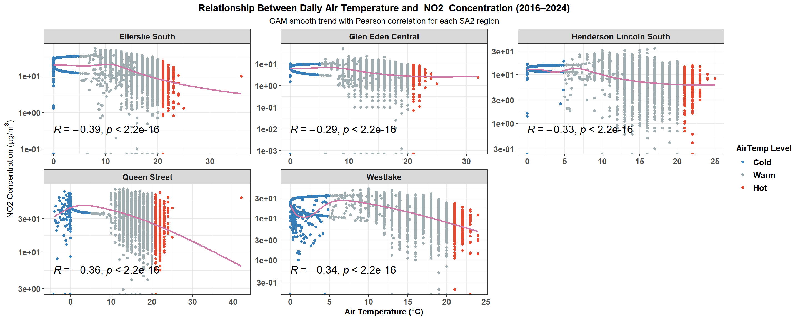
All regions show a negative correlation between air temperature and NO2, strongest in Ellerslie South (R = -0.28). Cold days (blue) generally have higher NO2. Queen Street shows more scatter, suggesting potential outliers. Nonlinear trends suggest other influencing factors, and hot days (red) consistently show lower concentrations. Outliers may exist at very low or high concentrations.
# Plot standardized air temperature vs NO2 standardized for selected sitesstandardize_airtemp_vs_no2 <-plot_airtemp_vs_pollutants(filter(standardized_airdata, sa2_name !="Sunnyhills East"), "NO2", "top") +scale_y_continuous() +# Change to normal scalelabs(title ="Relationship Between Daily Standardized Air Temperature and NO2 Standardized (2016–2024)",x ="Standardized Air Temperature",y ="Standardized NO2 Concentration")# Display plotstandardize_airtemp_vs_no2
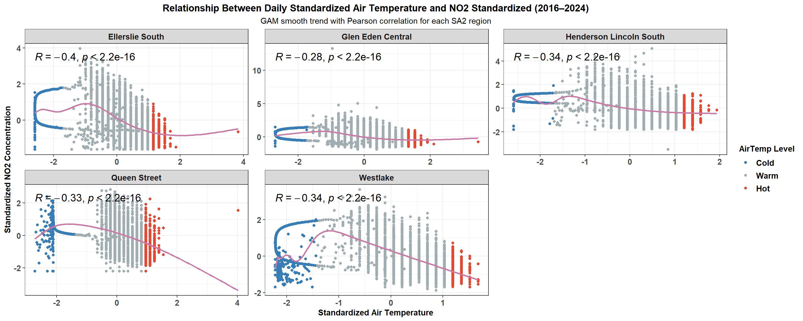
The standardized graph refines trends by normalizing variables, highlighting clearer negative correlations between air temperature and NO2 levels across sites. While both graphs show high significance (p < 0.00001), the standardized version enhances visibility of minor variations. Outliers remain evident at extreme temperatures, suggesting local influences.
NO vs Air Temperature
Identify general pattern between raw air temperature and NO levels across sites. Check for outliers or nonlinear trends in NO vs temperature. Use standardized temperature and standardized NO levels to evaluate cleaner NO trends. Highlights central tendency while minimizing extreme value effects.
# Checks if NO data is available for Sunnyhills East (it's not)daily_airdata |>filter(sa2_name %in%c("Sunnyhills East")) |>count(NO)
# A tibble: 1 × 2
NO n
<dbl> <int>
1 0 2876
# Plot raw air temperature vs NO for selected sitesplot_airtemp_vs_no <-plot_airtemp_vs_pollutants(filter(daily_airdata, !sa2_name %in%c("Puni", "Sunnyhills East")), "NO", "bottom")# Display plotplot_airtemp_vs_no
The graph shows that NO concentration generally decreases as temperature rises, except on Queen Street. Correlations range from -0.1 to -0.2, all statistically significant (p < 0.0001). Outliers appear at all sites, particularly at higher temperatures. Different sites exhibit distinct trends, suggesting environmental factors may influence NO levels.
# Plot standardized air temperature vs NO standardized for selected sitesstandardize_airtemp_vs_no <-plot_airtemp_vs_pollutants(filter(standardized_airdata, sa2_name !="Sunnyhills East"), "NO", "top") +scale_y_continuous() +# Change to normal scalelabs(title ="Relationship Between Daily Standardized Air Temperature and NO Standardized (2016–2024)",x ="Standardized Air Temperature",y ="Standardized NO Concentration")# Display plotstandardize_airtemp_vs_no
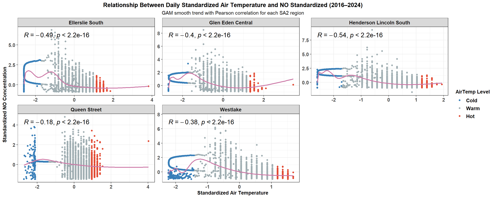
Standardization reveals clearer trends: NO concentration decreases more uniformly with temperature, strengthening correlations (-0.06 to -0.13). Significance remains unchanged, except Queen Street correlation is now non-significant. Category divisions (cold, warm, hot) show more distinct separation, reducing overlap. Outliers persist but are more identifiable at extreme temperatures and extreme NO concentration. The refined view emphasizes regional differences and environmental influences more effectively.
PM10 vs Air Temperature
Examine how PM10 concentrations change with raw temperature. Helps identify seasonal or heat-related pollution effects. Use standardized temperature and standard PM10 concentrations to clarify relationship. Removes noise from extreme temperature values to focus on main trend.
# Plot raw air temperature vs PM10 for selected sitesplot_airtemp_vs_pm10 <-plot_airtemp_vs_pollutants(filter(daily_airdata, sa2_name !="Puni"), "PM10", "top")# Display plotplot_airtemp_vs_pm10
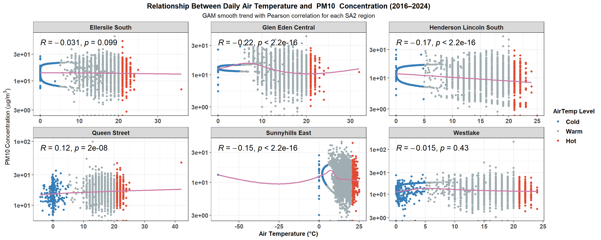
Ellerslie South and Westlake show no clear trend, with weak correlations and non-significant relationships. Glen Eden, Henderson Lincoln South, and Sunnyhills East show mild downward trends with significant negative correlations. Queen Street shows a weak, significant upward trend. Temperature-related PM10 effects vary by site, with some showing clear relationships while others remain inconclusive.
# Plot standardized air temperature vs PM10 standardized for each site plot_standardized_airtemp_vs_pm10 <-plot_airtemp_vs_pollutants(standardized_airdata, "PM10", "top") +labs(title =paste("Relationship Between Daily Standardized Air Temperature and PM10 Concentration Standardized (2016–2024)"),x ="Standardized Air Temperature",y ="Standardized PM10")# Display plotplot_standardized_airtemp_vs_pm10
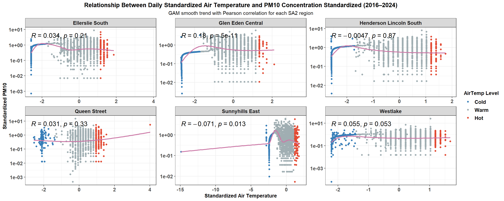
Ellerslie South and Westlake show no clear trend, with weak correlations and no significance. Glen Eden Central shows weak upward trend with significant positive correlations. The rest of the sites exhibits weak non-significant upward and downward trends. Outliers are present at all sites, especially Queen Street and Sunnyhills East. Temperature categories influence PM10 differently across sites.
PM2.5 vs Air Temperature
Investigate PM2.5 variation with raw air temperature across selected sites. Detect possible temperature-dependent behavior of fine particulates. Compare standardized temperature effect on standardized PM2.5. Filter out extreme values to enhance trend visibility. Improves trend interpretation by reducing the impact of outliers in both variables.
# Plot raw air temperature vs PM2.5 (data available for 3 sites)plot_airtemp_vs_pm2.5<-plot_airtemp_vs_pollutants(filter(daily_airdata, sa2_name %in%c("Ellerslie South", "Queen Street", "Westlake")), "PM2.5", "bottom")# Display plotplot_airtemp_vs_pm2.5
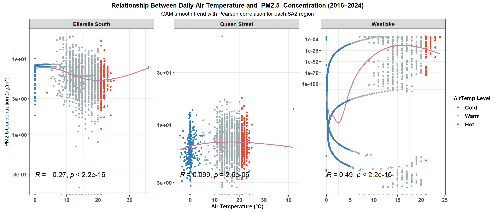
Westlake shows the strongest negative correlation (-0.14), suggesting PM2.5 decreases as temperature rises. Ellerslie South follows (-0.093), while Queen Street’s correlation is weak and non-significant (0.052, p=0.014). Cold temperatures generally align with higher PM2.5 levels. Outliers, especially in Westlake, indicate extreme PM2.5 spikes at warm and hot temperatures, likely from localized emissions or meteorological influences.
# Plot standardized air temperature vs PM2.5 standardizedplot_standardized_airtemp_vs_pm2.5<-plot_airtemp_vs_pollutants(filter(standardized_airdata, sa2_name %in%c("Ellerslie South", "Queen Street", "Westlake")), "PM2.5", "bottom") +labs(title =paste("Relationship Between Standardized Daily Air Temperature and Daily PM2.5 Concentration Standardized (2016–2024)"),x ="Standardized Air Temperature",y ="Standardized PM2.5")# Display plotplot_standardized_airtemp_vs_pm2.5
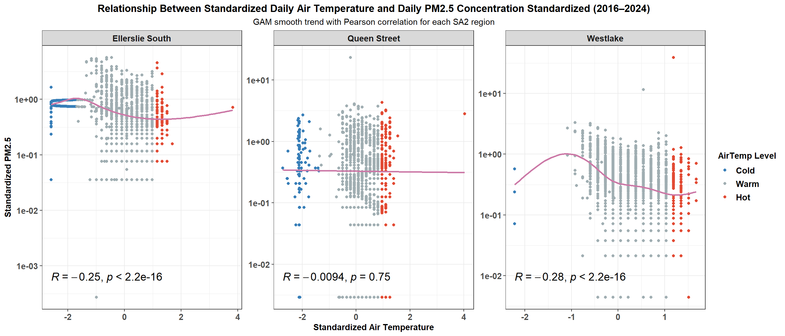
Air temperature and PM2.5 levels shows negative significant correlations at Ellerslie South and Westlake whereas Queen Street shows non-significant correlation. PM2.5 outliers might arise from local pollution spikes. Statistical significance depends on seasonal variation and source proximity.
SO2 vs Air Temperature
Analyze SO2 variation with raw air temperature at Ellerslie (only site with SO2 data). Evaluate site-specific patterns in SO2 behavior with temperature. Repeat analysis using standardized temperature and standardized SO2. Improve visualization by reducing impact of temperature outliers.
# Plot raw air temperature vs SO2 (SO2 data is available for Ellerslie site only)airtemp_vs_so2 <-plot_airtemp_vs_pollutants(filter(daily_airdata, sa2_name =="Ellerslie South"), "SO2", "top") +labs(title ="", subtitle ="Raw Data") +theme(plot.subtitle =element_text(size =12, hjust =0, face ="bold"))# Plot standardized air temperature vs SO2 standardized standardized_airtemp_vs_so2 <-plot_airtemp_vs_pollutants(filter(standardized_airdata, sa2_name =="Ellerslie South"), "SO2", "top") +labs(title ="", subtitle ="Standardized Data",x ="Standardized Air Temperature",y ="Standardized SO2") +theme(plot.subtitle =element_text(size =12, hjust =0, face ="bold"))# Display plotcombined_airtemp_vs_so2 <- airtemp_vs_so2 + standardized_airtemp_vs_so2 +plot_layout(guides ="collect") +# Collect legendplot_annotation(title ="Relationship Between Daily Air Temperature and SO2 Concentration (2016–2024)",subtitle ="GAM smooth trend with Pearson correlation for each SA2 region",theme =theme(plot.title =element_text(size =13, hjust =0.5, face ="bold"),plot.subtitle =element_text(size =12, hjust =0.5) ))# Display plotcombined_airtemp_vs_so2
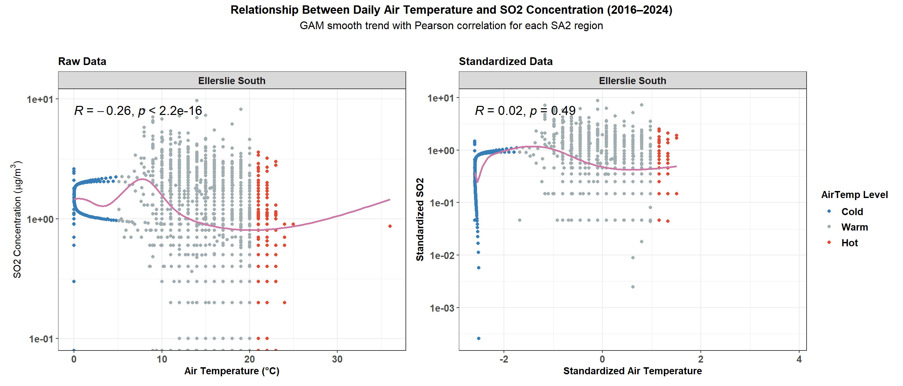
The standardized data plot shows a slightly stronger negative correlation between air temperature and SO2 concentration (R = -0.16, significant). The raw data data weakens this correlation (R = -0.13, significant). Cold days generally show higher SO2 levels, while warm and hot days show a downward trend. The GAM smooth confirms overall SO2 decrease with rising temperature.
5.4 Explore Wind Speed, Direction, and Air Temperature Across Auckland Air Quality Sites
n this section, I investigate key meteorological factors—specifically wind speed, wind direction, and air temperature—across various Auckland air quality monitoring sites from 2016 to 2024. By visualizing and analyzing the relationships between these variables, I aim to uncover temporal trends, site-specific patterns, and correlations that may influence local air pollution dynamics. Sites with incomplete or invalid data (e.g., entirely missing or extreme negative values) are identified and excluded to ensure valid interpretation. Correlation coefficients are computed for each site to quantify the strength and direction of relationships between variables.
# Identify sites where WindSpeed is missing for all observationsdaily_airdata |>group_by(sa2_name) |>filter(all(is.na(WindSpeed))) |>ungroup() |>count(sa2_name, WindSpeed)
# A tibble: 1 × 3
sa2_name WindSpeed n
<chr> <dbl> <int>
1 Queen Street NA 2276
# => Queen Street has no WindSpeed data and will be excluded from plotting# Filter out Queen Street due to entirely missing WindSpeed datadaily_windspeed <- daily_airdata |>filter(sa2_name !="Queen Street")# Create scatter plot of daily WindSpeed over time, faceted by siteplot_pts <-function(data, xvar) {ggplot(data = data, aes(x = {{xvar}}, y = WindSpeed)) +geom_point(aes(color = site_type)) +stat_cor(method ="pearson", size =5,label.x.npc ="left", label.y.npc ="top") +facet_wrap(~ sa2_name, scales ="free") +scale_color_viridis_d(option ="G") +theme_bw() +labs(title ="Distribution of Daily Wind Speed vs. Date by Sites in Auckland (2016–2024)",subtitle ="Excludes Queen Street and Puni (all missing values)",x ="Date", y ="Wind Speed (m/s)", color ="Site Type") +theme(plot.title =element_text(size =13, hjust =0.5, face ="bold"),plot.subtitle =element_text(size =12, hjust =0.5),axis.title =element_text(size =12, face ="bold"),axis.text =element_text(size =12, face ="bold"),legend.title =element_text(size =12, face ="bold"),strip.text =element_text(size =12, face ="bold"))}# Display plotplot_windspeed <-plot_pts(daily_windspeed, date)plot_windspeed
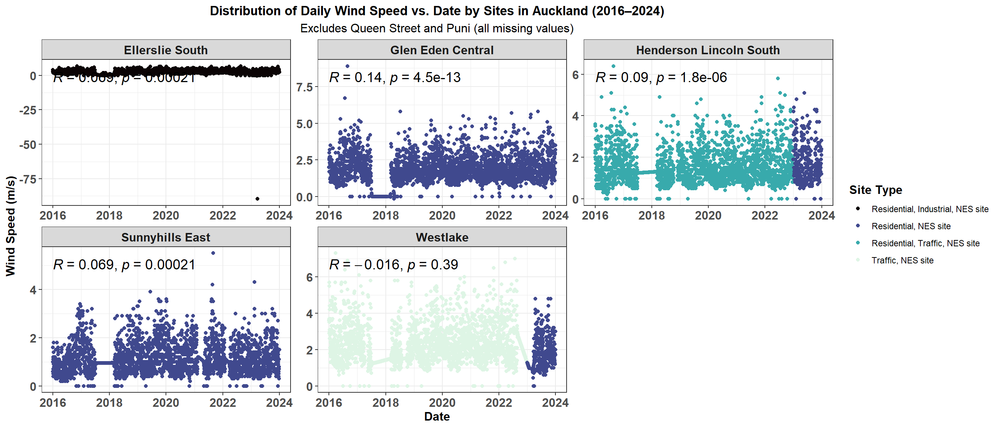
Ellerslie South contains erroneous negative values, causing the plot to be diverted. Let’s filter out the invalid wind speed values.
Wind speed trends from 2016–2024 vary by site in Auckland. Ellerslie South and Glen Eden Central show the strongest positive correlations with time (R = 0.15, 0.14), while Westlake shows no trend (R = –0.016, p = 0.39). Henderson and Westlake shows a shift in site type in 2023.
# Display plot for WindSpeed versus WindDirplot_windspeed <-plot_pts(filter(daily_windspeed, WindSpeed >=0), WindDir) +labs(title ="Distribution of Daily Wind Speed vs. Wind Direction by Site Types in Auckland (2016–2024)",x ="Wind Direction (°)") plot_windspeed
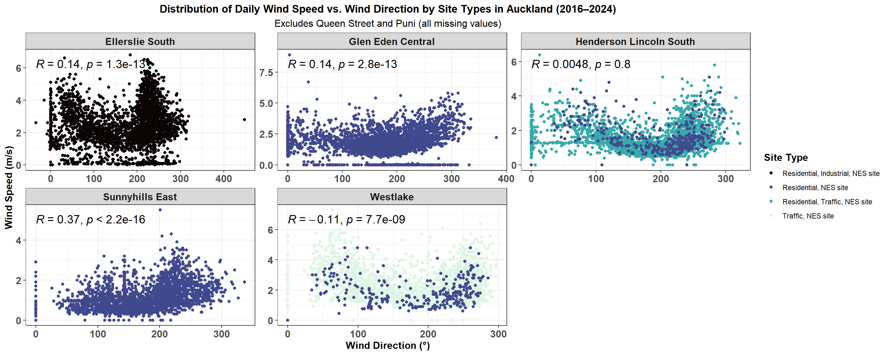
Wind speed shows varying correlations with wind direction across site types. Sunnyhills East exhibits the strongest positive relationship (R = 0.37), while Westlake shows a weak negative one (R = −0.11). Henderson Lincoln South displays no significant association.
# Display plot for WindSpeed versus AirTempplot_windspeed <-plot_pts(daily_windspeed, AirTemp) +labs(title ="Distribution of Daily Wind Speed vs. Air Temperature by Site Types in Auckland (2016–2024)",x ="Air Temperature (°C)") plot_windspeed
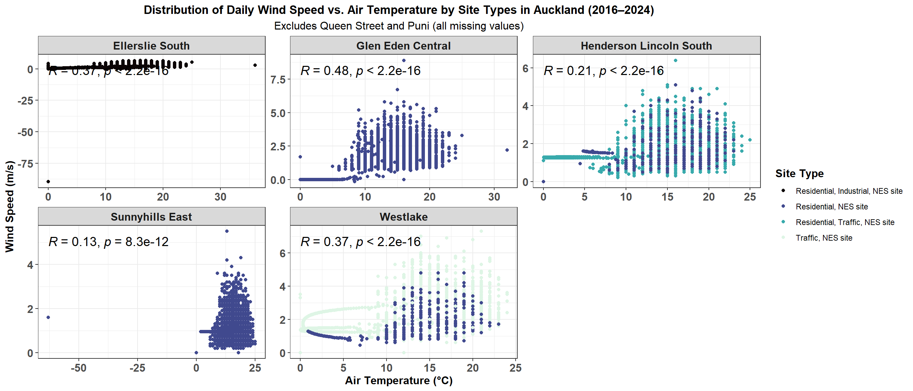
Ellerslie South contains large negative invalid wind speed values and Sunnyhills East has large negative air temperature value of below -50 degree celsius. These values are causing the plot to be diverted towards them. Let’s remove them.
# Display plot for WindSpeed versus AirTempplot_windspeed <-plot_pts(filter(daily_windspeed, WindSpeed >=0& AirTemp >=-5), AirTemp) +labs(title ="Distribution of Daily Wind Speed vs. Air Temperature by Site Types in Auckland (2016–2024)",x ="Air Temperature (°C)") plot_windspeed
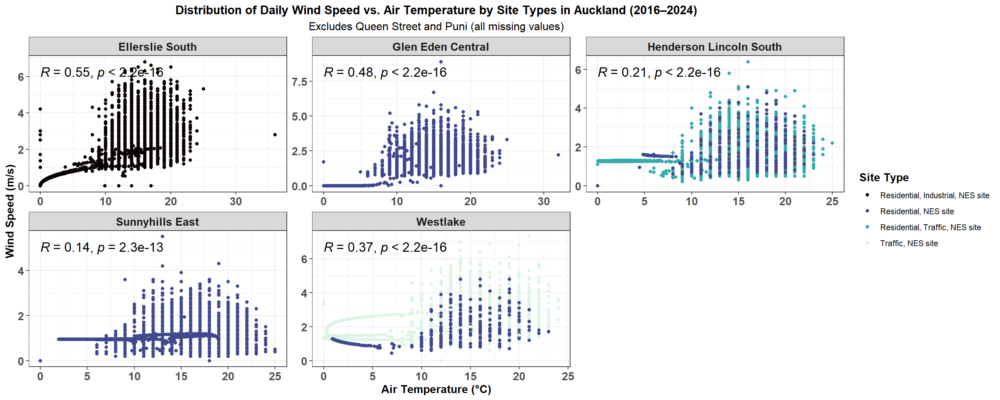
The strongest positive correlation between wind speed and air temperature is seen at Ellerslie South (R = 0.55), followed by Glen Eden Central (R = 0.48) and Westlake (R = 0.37). Henderson Lincoln South (R = 0.21) and Sunnyhills East (R = 0.14) show weaker correlations. Warmer temperatures tend to align with higher wind speeds across all sites, but the relationship is notably weaker in more suburban residential areas like Sunnyhills. Industrial sites like Ellerslie exhibit stronger associations, possibly reflecting localized urban heat and turbulence effects.
Wind speed effects on pollutants in Auckland suburbs
# Find the missing AirTemp, WindDir, WindSpeed, AQI, air pollutant values using ARIMA approximation for sa2_name having at least 3 numeric valuesdaily_airdata <- merged_airdata |>select(date, sa2_name, site_type, AQI, NO2, NO, PM10, PM2.5, SO2, WindSpeed, WindDir, AirTemp) |>group_by(sa2_name) |>mutate(across(.cols =c(AQI, NO2, NO, PM10, `PM2.5`, SO2, WindSpeed, WindDir, AirTemp),.fns =~if (sum(!is.na(.x)) >=3) na_kalman(.x, model ="auto.arima") else .x)) |>ungroup()# Find daily average for each factordaily_airdata <- daily_airdata |>group_by(date, sa2_name, site_type) |>summarise(AQI =mean(AQI, na.rm =TRUE),NO2 =mean(NO2, na.rm =TRUE),NO =mean(NO, na.rm =TRUE),PM10 =mean(PM10, na.rm =TRUE),`PM2.5`=mean(`PM2.5`, na.rm =TRUE),SO2 =mean(SO2, na.rm =TRUE),WindSpeed =mean(WindSpeed, na.rm =TRUE),WindDir =mean(WindDir, na.rm =TRUE),AirTemp =mean(AirTemp, na.rm =TRUE),.groups ="drop" )# Convert site_type to a factor with correct levels daily_airdata <- daily_airdata |>mutate(site_type =factor(site_type, levels =unique(daily_airdata$site_type)))# Standardized meteorological factors, air pollutants, and AQI for each sitestandardized_airdata <- daily_airdata |>group_by(sa2_name, site_type) |>mutate(AirTemp = (AirTemp -mean(AirTemp, na.rm =TRUE)) / (sd(AirTemp, na.rm =TRUE)),WindDir = (WindDir -mean(WindDir, na.rm =TRUE)) /sd(WindDir, na.rm =TRUE),WindSpeed = (WindSpeed -mean(WindSpeed, na.rm =TRUE)) /sd(WindSpeed, na.rm =TRUE),AQI = (AQI -mean(AQI, na.rm =TRUE)) /sd(AQI, na.rm =TRUE),NO2 = (NO2 -mean(NO2, na.rm =TRUE)) /sd(NO2, na.rm =TRUE),NO = (NO -mean(NO, na.rm =TRUE)) /sd(NO, na.rm =TRUE),PM10 = (PM10 -mean(PM10, na.rm =TRUE)) /sd(PM10, na.rm =TRUE),PM2.5 = (PM2.5-mean(PM2.5, na.rm =TRUE)) /sd(PM2.5, na.rm =TRUE),SO2 = (SO2 -mean(SO2, na.rm =TRUE)) /sd(SO2, na.rm =TRUE)) |>ungroup()
plot_windspeed_vs_pollutants <-function(data, yvar, stat_var) {# Calculate 10th and 90th percentiles of WindSpeed quantiles <-quantile(data$WindSpeed, probs =c(0.1, 0.9), na.rm =TRUE)# Categorizes wind speed into Low, Mid, and High using 10-90th percentiles data <- data |>mutate(color_group =case_when( WindSpeed <= quantiles[1] ~"#377eb8", WindSpeed >= quantiles[2] ~"#E24A33",TRUE~"#A0AEB2" ))# Define a custom plotting function to examine the relationship between wind speed and a selected pollutantggplot(data = data, aes(x = WindSpeed, y = .data[[yvar]])) +geom_point(aes(color = color_group)) +# points colored by pollutant categoriesgeom_smooth(method ="gam", color ="#CC79A7", se =FALSE) +# Add smooth GAM trend linescale_color_identity(name ="WindSpeed Level", # Title for the legendguide ="legend", labels =c("Low", "Medium", "High"), # Labels for color groupsbreaks =c("#377eb8", "#A0AEB2", "#E24A33") # Color codes matching the legend labels ) +scale_y_log10(labels = scales::scientific) +stat_cor(method ="pearson", size =5,label.x.npc ="left", label.y.npc = stat_var) +facet_wrap(~ sa2_name, scales ="free") +# One panel per SA2 suburb with independent scalestheme_bw() +labs(title =paste("Relationship Between Daily Wind Speed and ", yvar, " Concentration in Auckland (2016–2024)"),subtitle ="GAM smooth trend with Pearson correlation for each Site",x ="Wind Speed (m/s)", y =paste(yvar, " concentration (µg/m³)") ) +theme(plot.title =element_text(size =14, hjust =0.5, face ="bold"),plot.subtitle =element_text(size =12, hjust =0.5),legend.title =element_text(size =12, face ="bold"),axis.title =element_text(size =12, face ="bold"),axis.text =element_text(size =11, face ="bold"),strip.text =element_text(size =12, face ="bold") )}
AQI vs Wind Speed
Visually check for correlation between raw and standardized wind speed and air quality index (AQI) levels across sites. Explore whether AQI vary consistently with wind speed. Assess whether standardizing wind speed and AQI improves clarity of trends. Reduces distortion from wind speed outliers for better pattern detection.
# Plot raw wind speed vs AQI, "Puni" and "Queen Street" does not contain numeric wind speed values data <-filter(daily_airdata, !(sa2_name %in%c("Puni", "Queen Street")))plot_windspeed_vs_aqi <-plot_windspeed_vs_pollutants(data, "AQI", "top") +labs(y ="Air Quality Index (AQI)")# Display plotplot_windspeed_vs_aqi
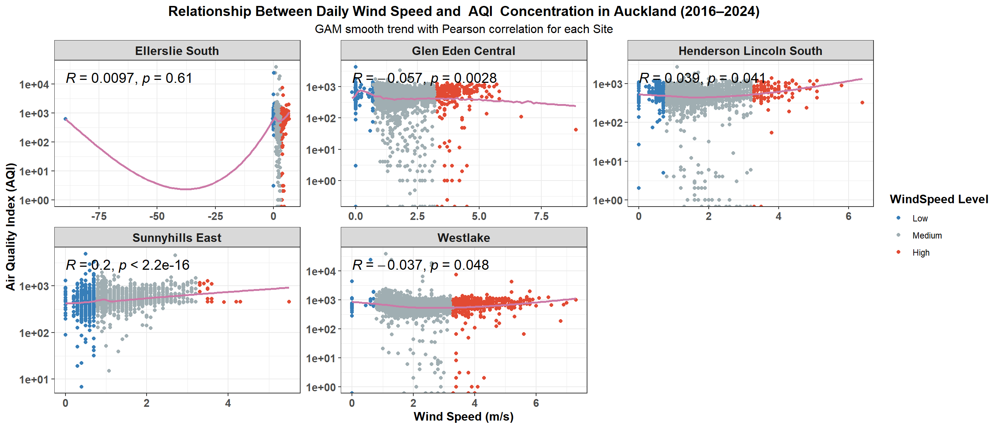
This plot includes invalid negative WindSpeed values at Ellerslie South, which may obscure meaningful patterns. Filtering for valid WindSpeed values will help reveal clearer and more accurate trends.
# Limit the WindSpeed values of at least 0m/sdata <-filter(daily_airdata, !(sa2_name %in%c("Puni", "Queen Street")) & WindSpeed >=0)plot_windspeed_vs_aqi <-plot_windspeed_vs_pollutants(data, "AQI", "top") +labs(title ="Relationship Between Restricted Daily Wind Speed and AQI Concentration at sites in Auckland (2016–2024)",x ="Positive Wind Speed Values (m/s)",y ="Air Quality Index (AQI)")plot_windspeed_vs_aqi
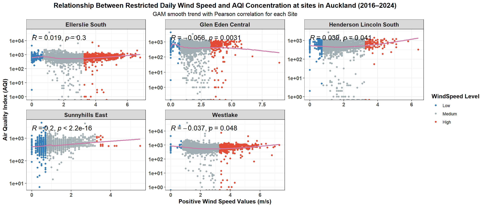
Trends vary by site, Sunnyhills East shows moderate positive correlation, while others exhibit no relationships due to local influences.
# Plot standardized wind speed vs AQI standardizeddata <-filter(standardized_airdata, !(sa2_name %in%c("Puni", "Queen Street")))plot_windspeed_vs_aqi <-plot_windspeed_vs_pollutants(data, "AQI", "top") +scale_y_continuous() +labs(title ="Relationship Between Standardised Daily Wind Speed and AQI Concentration at sites in Auckland (2016–2024)",x ="Standardized Wind Speed", y ="Standardized Air Quality Index (AQI)")# Display plotplot_windspeed_vs_aqi
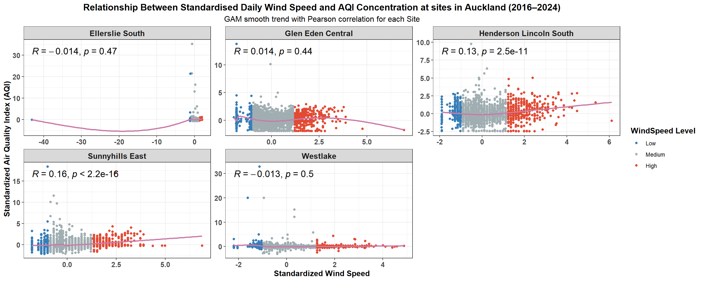
Large negative z values are diverting the plot towards them, let’s restrict the z values from -3 to 3.
# Plot standardized wind speed vs AQI standardizeddata <-filter(standardized_airdata, !(sa2_name %in%c("Puni", "Queen Street")) & WindSpeed >=-3& WindSpeed <=3& AQI >=-3& AQI <=3)plot_windspeed_vs_aqi <-plot_windspeed_vs_pollutants(data, "AQI", "top") +scale_y_continuous() +labs(title ="Relationship Between Standardised Daily Wind Speed and AQI Concentration at sites in Auckland (2016–2024)",x ="Standardized Wind Speed (-3 to 3)", y ="Standardized Air Quality Index (AQI) (-3 to 3)")# Display plotplot_windspeed_vs_aqi
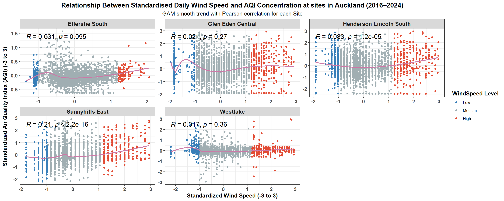
Sunnyhills East and Henderson Lincoln South shows significant positive correlation between wind speed and AQI, suggesting significant pollutant dispersion. The rest of the sites exhibits a weak non-significant positive correlation, indicating no wind influence.
NO vs Wind Speed
Visually check for correlation between raw and standardized wind speed and NO across sites. Explore whether NO vary consistently with wind speed. Assess whether standardizing wind speed and NO improves clarity of trends. Reduces distortion from wind speed outliers for better pattern detection.
# Display plot, remove "Sunnyhills East", it does not have NO values, remove the WindSpeed values below 0data <-filter(daily_airdata, !(sa2_name %in%c("Puni", "Queen Street", "Sunnyhills East")) & WindSpeed >=0)plot_windspeed_vs_no <-plot_windspeed_vs_pollutants(data, "NO", "top")plot_windspeed_vs_no
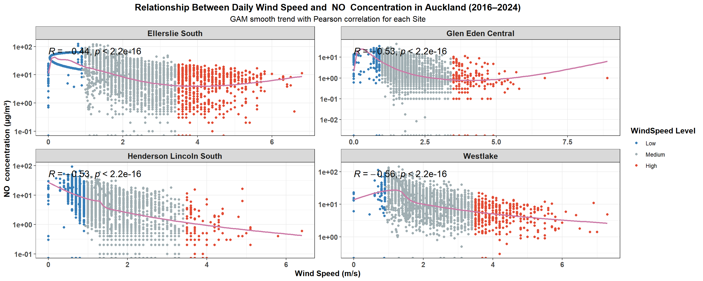
NO concentrations decrease as wind speed increases across all sites, with Westlake showing the strongest negative correlation (R = -0.56). High wind speeds correspond to lower NO levels (red points). Trends are consistent, but strength varies, likely due to site-specific meteorological influences.
# Display plot, remove "Sunnyhills East", it does not have NO valuesdata <-filter(standardized_airdata, !(sa2_name %in%c("Puni", "Queen Street", "Sunnyhills East")))plot_windspeed_vs_no <-plot_windspeed_vs_pollutants(data, "NO", "top") +scale_y_continuous() +labs(title ="Relationship Between Standardised Daily Wind Speed and NO Concentration at sites in Auckland (2016–2024)",x ="Standardized Wind Speed", y ="Standardized Nitric Oxide (NO)")plot_windspeed_vs_no
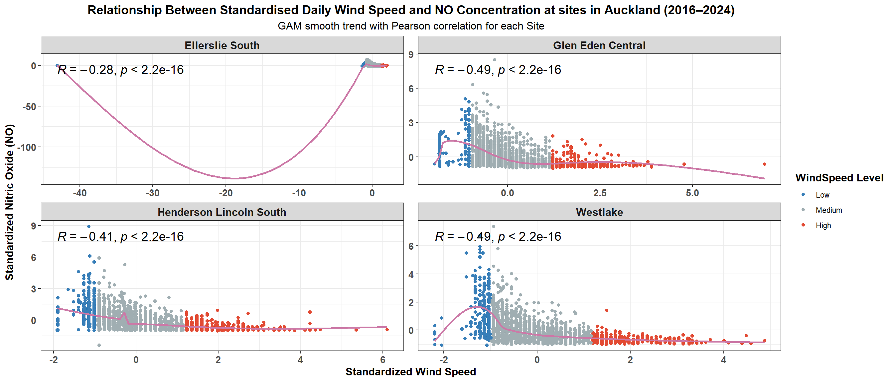
Large z values are diverting the plot towards them, let’s restrict the z values to -3 to 3.
# Display plot, remove "Sunnyhills East", it does not have NO valuesdata <-filter(standardized_airdata, !(sa2_name %in%c("Puni", "Queen Street", "Sunnyhills East")) & WindSpeed >=-3& WindSpeed <=3& NO >=-3& NO <=3)plot_windspeed_vs_no <-plot_windspeed_vs_pollutants(data, "NO", "top") +scale_y_continuous() +labs(title ="Relationship Between Standardised Daily Wind Speed and NO Concentration at sites in Auckland (2016–2024)",x ="Standardized Wind Speed (-3 to 3)", y ="Standardized Nitric Oxide (NO, -3 to 3)")plot_windspeed_vs_no
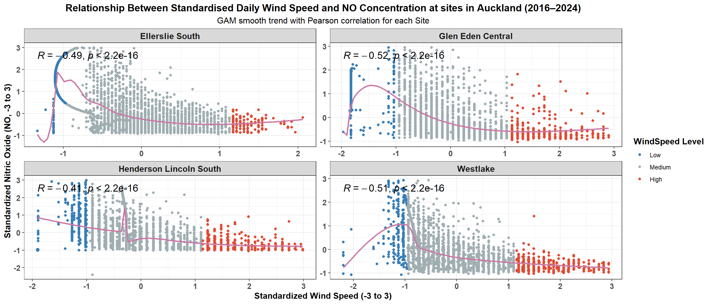
NO concentration negatively correlates with wind speed at all sites (R = -0.41 to -0.52, p < 2.2e-16). Higher wind speeds (red) reduce NO levels, while low winds (blue) increase concentration. Glen Eden and Westlake show the strongest correlations, indicating wind-driven pollutant dispersion patterns.
NO2 versus WindSpeed
# Display plot, remove "Sunnyhills East", it does not have NO2 values, remove the WindSpeed values below 0data <-filter(daily_airdata, !(sa2_name %in%c("Puni", "Queen Street", "Sunnyhills East")) & WindSpeed >=0)plot_windspeed_vs_no2 <-plot_windspeed_vs_pollutants(data, "NO2", "top")plot_windspeed_vs_no2
Wind speed negatively correlates with NO2 levels—higher speeds lead to lower concentrations. Correlation strength varies across sites (R values), with differing statistical significance (p-values). Some sites show a stronger inverse relationship, indicating localized meteorological influences on NO2 dispersion and accumulation.
# Display plot, remove "Sunnyhills East", it does not have NO2 valuesdata <-filter(daily_airdata, !(sa2_name %in%c("Puni", "Queen Street", "Sunnyhills East")), WindSpeed >=-3& WindSpeed <=3& NO2 >=-3& NO2 <=3)plot_windspeed_vs_no2 <-plot_windspeed_vs_pollutants(data, "NO2", "top") +scale_y_continuous() +labs(title ="Relationship Between Standardised Daily Wind Speed and NO Concentration at sites in Auckland (2016–2024)",x ="Standardized Wind Speed (-3 to 3)", y ="Standardized Nitrogen Dioxide (NO2, -3 to 3)")plot_windspeed_vs_no2
Significant NO2 concentration positively correlates with wind speed (R = 0.62 and 0.47). Higher wind speeds (red) increase NO2 levels, while low winds (blue) decrease concentration. Ellerslie South and Westlake show the strongest correlations, indicating wind-driven pollutant dispersion patterns.
PM10 versus WindSpeed
# Display plot, remove "Puni" and "Queen Street", they don't have PM10 values, remove the WindSpeed values below 0data <-filter(daily_airdata, !(sa2_name %in%c("Puni", "Queen Street")) & WindSpeed >=0)plot_windspeed_vs_pm10 <-plot_windspeed_vs_pollutants(data, "PM10", "top")plot_windspeed_vs_pm10
PM10 levels rise with wind speed across sites, strongest at Ellerslie South (R = 0.19). Low wind (blue) shows stable PM10, while high wind (red) increases PM10, likely due to dust resuspension. Henderson Lincoln South has the weakest significant correlation (R = 0.077).
# Display plot, remove "Puni" and "Queen Street", they don't have PM10 valuesdata <-filter(standardized_airdata, !(sa2_name %in%c("Puni", "Queen Street")))plot_windspeed_vs_pm10 <-plot_windspeed_vs_pollutants(data, "PM10", "top") +scale_y_continuous() +labs(title ="Relationship Between Standardised Daily Wind Speed and PM10 Concentration at sites in Auckland (2016–2024)",x ="Standardized Wind Speed", y ="Standardized Particulate Matter (PM10)")plot_windspeed_vs_pm10
Restrict the z values to -3 to 3 to avoid plot diversion.
# Display plot, remove "Puni" and "Queen Street", they don't have PM10 values, restrict z anomaly from -3 to 3data <-filter(standardized_airdata, !(sa2_name %in%c("Puni", "Queen Street")) & WindSpeed >=-3& WindSpeed <=3& PM10 >=-3& PM10 <=3)plot_windspeed_vs_pm10 <-plot_windspeed_vs_pollutants(data, "PM10", "top") +scale_y_continuous() +labs(title ="Relationship Between Standardised Daily Wind Speed and PM10 Concentration at sites in Auckland (2016–2024)",x ="Standardized Wind Speed (-3 to 3)", y ="Standardized Particulate Matter (PM10, -3 to 3)")plot_windspeed_vs_pm10
This plot shows a weak positive correlation between standardized wind speed and PM10 concentration across five Auckland sites, indicated by low R-values. The “Low” wind speed category often shows higher PM10 variability, while “Medium” and “High” levels tend to be more consistent.
PM2.5 versus WindSpeed
# Display plot, select "Ellerslie South" and "Westlake", they have numeric WindSpeed and PM2.5 values, remove the WindSpeed values below 0data <-filter(daily_airdata, sa2_name %in%c("Ellerslie South", "Westlake"))plot_windspeed_vs_pm25 <-plot_windspeed_vs_pollutants(data, "PM2.5", "top")plot_windspeed_vs_pm25
The invalid large negative windspeed values are diverting the whole plot towards them, let’s plot for valid wind speed.
# Display plot, select "Ellerslie South" and "Westlake", they have numeric WindSpeed and PM2.5 values, remove the WindSpeed values below 0data <-filter(daily_airdata, sa2_name %in%c("Ellerslie South", "Westlake") & WindSpeed >=0)plot_windspeed_vs_pm25 <-plot_windspeed_vs_pollutants(data, "PM2.5", "top")plot_windspeed_vs_pm25
Ellerslie South shows a slight negative correlation with PM2.5 decreasing as wind speed increases, then rising at higher speeds. Westlake exhibits a weak positive correlation, with PM2.5 concentrations generally increasing with wind speed, particularly at lower speeds, then stabilizing. Both sites show “Low” wind speeds associated with higher PM2.5.
# Display plot, select "Ellerslie South" and "Westlake", they have numeric WindSpeed and PM2.5 values, remove the WindSpeed values below 0data <-filter(standardized_airdata, sa2_name %in%c("Ellerslie South", "Westlake"))plot_windspeed_pm25_1 <-plot_windspeed_vs_pollutants(data, "PM2.5", "top") +scale_y_continuous() +labs(title ="", subtitle ="Z-anomaly",x ="Standardized Wind Speed", y ="Standardized PM2.5")# Large negative and positive z anomalies are diverting the whole plot towards them. Restrict z anomalies to -3 to 3data <-filter(standardized_airdata, sa2_name %in%c("Ellerslie South", "Westlake") & WindSpeed >=-3& WindSpeed <=3& PM2.5>=-3& PM2.5<=3)plot_windspeed_pm25_2 <-plot_windspeed_vs_pollutants(data, "PM2.5", "top") +scale_y_continuous() +labs(title ="", subtitle ="Z-anomaly (-3 to 3)",x ="Standardized Wind Speed (-3 to 3)", y ="Standardized PM2.5 (-3 to 3)")plot_windspeed_pm25_1 / plot_windspeed_pm25_2 +plot_layout(guides ="collect") +# Collect legendplot_annotation(title ="Relationship Between Standardised Daily Wind Speed and PM2.5 Concentration at sites in Auckland (2016–2024)",subtitle ="GAM smooth trend with Pearson correlation for each site",theme =theme(plot.title =element_text(size =14, face ="bold", hjust =0.5),plot.subtitle =element_text(size =12, hjust =0.5)))
Ellerslie South shows a curvilinear negative correlation between wind speed and PM2.5, while Westlake has a positive, more linear correlation. Wind speed levels (Low, Medium, High) are distributed across the standardized wind speed ranges at both sites.
SO2 versus WindSpeed
# Display plot, select "Ellerslie South", it is the only site recording SO2 values, remove the WindSpeed values below 0data <-filter(daily_airdata, sa2_name =="Ellerslie South")plot_windspeed_vs_SO2_1 <-plot_windspeed_vs_pollutants(data, "SO2", "top") +scale_y_continuous() +labs(title ="", subtitle ="All values")data <-filter(daily_airdata, sa2_name =="Ellerslie South"& WindSpeed >=0)plot_windspeed_vs_SO2_2 <-plot_windspeed_vs_pollutants(data, "SO2", "top") +scale_y_continuous() +labs(title ="", subtitle ="Restricted", x ="WindSpeed >= 0 (m/s)")# Large negative and positive z anomalies are diverting the whole plot towards them. Restrict z anomalies to -3 to 3data <-filter(standardized_airdata, sa2_name =="Ellerslie South")plot_standardized_1 <-plot_windspeed_vs_pollutants(data, "SO2", "top") +scale_y_continuous() +labs(title ="", subtitle ="Z-anomaly",x ="Standardized Wind Speed", y ="Standardized SO2")data <-filter(standardized_airdata, sa2_name =="Ellerslie South"& WindSpeed >=-3& WindSpeed <=3& SO2 >=-3& SO2 <=3)plot_standardized_2 <-plot_windspeed_vs_pollutants(data, "SO2", "top") +scale_y_continuous() +labs(title ="", subtitle ="Z-anomaly (-3 to 3)",x ="Standardized Wind Speed (-3 to 3)", y ="Standardized SO2 (-3 to 3)")(plot_windspeed_vs_SO2_1 + plot_windspeed_vs_SO2_2) / (plot_standardized_1 + plot_standardized_2) +plot_layout(guides ="collect") +# Collect legendsplot_annotation(title ="Relationship Between Raw and Standardised Daily Wind Speed and SO2 Concentration at sites in Auckland (2016–2024)",subtitle ="GAM smooth trend with Pearson correlation for each site",theme =theme(plot.title =element_text(size =14, face ="bold", hjust =0.5),plot.subtitle =element_text(size =12, hjust =0.5)))
This plot shows an inverse relationship between wind speed and SO2 concentration. Restricting the data and using standardized values improves the linear correlation, revealing clear categories (low, medium, high) based on wind speed levels.
Wind direction effects on pollution in Auckland
Define Functions to Plot Wind Direction versus Pollutants
plot_winddir_vs_pollutants <-function(data, yvar, stat_var) {# Calculate 10th and 90th percentiles of WindDir quantiles <-quantile(data$WindDir, probs =c(0.1, 0.9), na.rm =TRUE)# Categorizes wind direction into Low, Mid, and High using 10-90th percentiles data <- data |>mutate(color_group =case_when( WindDir <= quantiles[1] ~"#377eb8", WindDir >= quantiles[2] ~"#E24A33",TRUE~"#A0AEB2" ))# Define a custom plotting function to examine the relationship between wind direction and a selected pollutantggplot(data = data, aes(x = WindDir, y = .data[[yvar]])) +geom_point(aes(color = color_group), size =2) +# points colored by pollutant categoriesgeom_smooth(method ="gam", color ="#CC79A7", se =FALSE) +# Add smooth GAM trend linescale_color_identity(name ="WindDir Level", # Title for the legendguide ="legend", labels =c("Low", "Medium", "High"), # Labels for color groupsbreaks =c("#377eb8", "#A0AEB2", "#E24A33") # Color codes matching the legend labels ) +scale_y_log10(labels = scales::scientific) +stat_cor(method ="pearson", size =5,label.x.npc ="left", label.y.npc = stat_var) +facet_wrap(~ sa2_name, scales ="free") +# One panel per SA2 suburb with independent scalestheme_bw() +labs(title =paste("Relationship Between Daily Wind Direction and ", yvar, " Concentration in Auckland (2016–2024)"),subtitle ="GAM smooth trend with Pearson correlation for each Site",x ="Wind Direction (degrees)", y =paste(yvar, " concentration (µg/m³)") ) +theme(plot.title =element_text(size =14, hjust =0.5, face ="bold"),plot.subtitle =element_text(size =13, hjust =0.5),legend.title =element_text(size =12, face ="bold"),legend.text =element_text(size =11, face ="bold"),axis.title =element_text(size =12, face ="bold"),axis.text =element_text(size =11, face ="bold"),strip.text =element_text(size =12, face ="bold") )}
# Function to plot wind direction vs pollutants, categorized by site typeplot_winddir_pollutants_site <-function(data, yvar, stat_var) {# Plot wind direction versus AQI categorized by site_typeggplot(data = data, aes(x = WindDir, y = .data[[yvar]])) +geom_point(aes(color = site_type), size =2, alpha =0.6) +geom_smooth(method ="gam", color ="#CC79A7", se =FALSE) +scale_color_viridis_d(option ="G") +scale_y_log10(labels = scales::scientific) +stat_cor(method ="pearson", size =5,label.x.npc ="left", label.y.npc = stat_var) +facet_wrap(~ sa2_name, scales ="free") +theme_bw() +labs(title =paste("Relationship Between Daily Wind Direction and ", yvar, " in Auckland Categorized by Site Type (2016–2024)"),subtitle ="GAM smooth trend with Pearson correlation for each Site",x ="Wind Direction (degrees)", y =paste(yvar, " concentration (µg/m³)"), color ="Site Type") +theme(plot.title =element_text(size =14, hjust =0.5, face ="bold"),plot.subtitle =element_text(size =13, hjust =0.5),legend.title =element_text(size =12, face ="bold"),legend.text =element_text(size =11, face ="bold"),axis.title =element_text(size =12, face ="bold"),axis.text =element_text(size =11, face ="bold"),strip.text =element_text(size =12, face ="bold") )}
AQI vs WindDir
Visually check for correlation between raw wind direction and AQI levels across sites. Explore whether AQI vary consistently with wind direction. Assess whether standardizing wind direction and AQI improves clarity of trends. Reduces distortion from wind direction outliers for better pattern detection.
# Plot raw wind direction vs AQI for selected sites, "Puni" and "Queen Street" does not contain any numeric WindDir valuesdata <-filter(daily_airdata, !(sa2_name %in%c("Puni", "Queen Street")))plot_winddir_vs_aqi <-plot_winddir_vs_pollutants( data, "AQI", "top") +labs(y ="Air Quality Index (AQI)")# Display plotplot_winddir_vs_aqi
Glen Eden Central and Henderson Lincoln South show stronger correlations between wind direction and AQI (R = 0.5, 0.35), while Sunnyhills East has the weakest (R = 0.16). Medium wind levels generally exhibit more pronounced trends, suggesting site-specific meteorological influences on air pollution dispersion.
# Plot standardized wind direction vs AQI for selected sites, "Puni" and "Queen Street" does not contain any numeric WindDir valuesdata <-filter(standardized_airdata, !(sa2_name %in%c("Puni", "Queen Street")))plot_standardized <-plot_winddir_vs_pollutants( data, "AQI", "top") +labs(title ="Relationship Between Standardized Daily Wind Speed and AQI at sites in Auckland (2016–2024)",x ="Standardized Wind Direction",y ="Standardized Air Quality Index (AQI)")# Display plotplot_standardized
Wind direction shows minimal correlation with AQI across all sites. Most Pearson R values are near zero, indicating no relationship. Wind direction categories display no clear trend. Statistical significance is absent (p > 0.1), suggesting AQI is largely independent of wind variability.
# Plot raw wind direction vs AQI for selected sites, "Puni" and "Queen Street" does not contain any numeric WindDir valuesdata <-filter(daily_airdata, !(sa2_name %in%c("Puni", "Queen Street")))plot_winddir_aqi_site <-plot_winddir_pollutants_site( data, "AQI", "top") +labs(y ="Air Quality Index (AQI)")# Display plotplot_winddir_aqi_site
Wind direction shows no consistent AQI trend across sites. AQI variability across sites remains independent of wind direction levels, suggesting meteorological factors play a minor role in site-specific air quality.
NO versus WindDir
# Plot raw wind direction vs NO for selected sites, "Puni" and "Queen Street" does not contain WindDir, "Sunnyhills East" does not contain NOdata <-filter(daily_airdata, !(sa2_name %in%c("Puni", "Queen Street", "Sunnyhills East")))plot_winddir_vs_no <-plot_winddir_vs_pollutants( data, "NO", "top")# Display plotplot_winddir_vs_no
NO concentrations vary significantly by site and wind direction. Westlake and Ellerslie South show positive correlations, peaking with high winds. Henderson Lincoln South trends negatively, while Glen Eden Central is weakly negative. Wind intensity strongly influences NO levels across sites, shaping pollutant dispersion dynamics.
# Plot standardized NO vs wind direction for selected sites, "Puni" and "Queen Street" does not contain WindDir values, "Sunnyhills East" does not contain NOdata <-filter(standardized_airdata, !(sa2_name %in%c("Puni", "Queen Street", "Sunnyhills East")))plot_standardized <-plot_winddir_vs_pollutants( data, "NO", "top") +scale_y_continuous() +labs(title ="Relationship Between Standardized Daily Wind Direction and NO at sites in Auckland (2016–2024)",x ="Standardized Wind Direction",y ="Standardized NO")# Display plotplot_standardized
Pollutant correlations with wind direction are weak across sites, with p-values suggesting no statistical significance at Ellerslie South and Glen Eden Central. Trend patterns are mostly flat, indicating minimal directional effects. Westlake shows the highest correlation (R = 0.14). Categories show no clear separation.
# Plot raw wind direction vs NO for selected sites, "Puni" and "Queen Street" does not contain WindDir, "Sunnyhills East" contains no NOdata <-filter(daily_airdata, !(sa2_name %in%c("Puni", "Queen Street", "Sunnyhills East")))plot_winddir_no_site <-plot_winddir_pollutants_site( data, "NO", "top") +labs(y ="Nitric Oxide (NO, (µg/m³)")# Display plotplot_winddir_no_site
Ellerslie South & Westlake show a strong positive correlation, indicating NO levels increase with specific wind directions due to pollutant transport. Glen Eden Central exhibits a weak correlation, suggesting localized emissions are the primary driver. Henderson Lincoln South presents a negative correlation, where dilution reduces NO concentrations under certain wind patterns.
NO2 versus WindDir
# Plot raw NO2 vs wind direction for selected sites, "Puni" and "Queen Street" does not contain WindDir, "Sunnyhills East" does not contain NO2data <-filter(daily_airdata, !(sa2_name %in%c("Puni", "Queen Street", "Sunnyhills East")))plot_no2_vs_winddir <-plot_winddir_vs_pollutants( data, "NO2", "bottom")# Display plotplot_no2_vs_winddir
Westlake and Ellerslie show positive NO2-wind direction correlations, strongest at Westlake. Glen Eden and Henderson exhibit weaker negative correlations. GAM smoothing highlights distinct regional pollutant transport patterns across sites.
# Plot standardized NO2 vs wind direction for selected sites, "Puni" and "Queen Street" does not contain WindDir values, "Sunnyhills East" does not contain NO2data <-filter(standardized_airdata, !(sa2_name %in%c("Puni", "Queen Street", "Sunnyhills East")))plot_standardized <-plot_winddir_vs_pollutants( data, "NO2", "top") +scale_y_continuous() +labs(title ="Relationship Between Standardized Daily Wind Direction and NO2 at sites in Auckland (2016–2024)",x ="Standardized Wind Direction",y ="Standardized NO2")# Display plotplot_standardized
Westlake shows the strongest positive correlation (R = 0.43), while Glen Eden Central and Henderson Lincoln South shows weak negative correlation (R = -0.13). Wind direction impacts NO2 levels differently across sites.
# Plot restricted standardized NO2 vs wind direction for selected sites, "Puni" and "Queen Street" does not contain WindDir values, "Sunnyhills East" does not contain NO2data <-filter(standardized_airdata, !(sa2_name %in%c("Puni", "Queen Street", "Sunnyhills East")) & NO2 >=-3& NO2 <=3)plot_standardized <-plot_winddir_vs_pollutants( data, "NO2", "top") +scale_y_continuous() +labs(title ="Relationship Between Restricted Standardized Daily Wind Direction and NO2 at sites in Auckland (2016–2024)",x ="Standardized Wind Direction",y ="Standardized NO2 (-3 to 3)")# Display plotplot_standardized
Ellerslie South and Westlake show positive correlations, while Glen Eden Central and Henderson Lincoln South show negative correlations between standardized wind direction and NO2 levels. There has been a slight improvement in correlations.
# Plot raw NO2 vs wind direction for selected sites, "Puni" and "Queen Street" does not contain WindDir, "Sunnyhills East" contains no NO2data <-filter(daily_airdata, !(sa2_name %in%c("Puni", "Queen Street", "Sunnyhills East")))plot_winddir_no2_site <-plot_winddir_pollutants_site( data, "NO2", "bottom") +labs(y ="Nitrogen Dioxide (NO2, (µg/m³)")# Display plotplot_winddir_no2_site
NO2 levels vary by site type and wind patterns. Industrial areas show strong increases, traffic sites moderate rises, while residential zones exhibit weaker trends due to dispersion. Wind-driven pollutant transport is evident.
PM10 versus WindDir
# Plot raw PM10 vs wind direction for selected sites, "Puni" and "Queen Street" does not contain WindDirdata <-filter(daily_airdata, !(sa2_name %in%c("Puni", "Queen Street")))plot_pm10_vs_winddir <-plot_winddir_vs_pollutants( data, "PM10", "top")# Display plotplot_pm10_vs_winddir
Ellerslie South and Westlake show stronger correlations (R = 0.18, 0.14) between wind direction and PM10 concentration, while Glen Eden Central, Henderson Lincoln South, and Sunnyhills East show weaker correlations (R = 0.077, 0.049, 0.072).
# Plot standardized PM10 vs wind direction for selected sites, "Puni" and "Queen Street" does not contain WindDir valuesdata <-filter(standardized_airdata, !(sa2_name %in%c("Puni", "Queen Street")))plot_standardized <-plot_winddir_vs_pollutants( data, "PM10", "top") +scale_y_continuous() +labs(title ="Relationship Between Standardized Daily Wind Direction and PM10 at sites in Auckland (2016–2024)",x ="Standardized Wind Direction",y ="Standardized PM10")# Display plotplot_standardized
Ellerslie South shows the highest correlation (R = 0.18), while Sunnyhills East shows the lowest (R = 0.06). PM10 levels increase with high wind direction across all sites. There are some very large z anomalies like in “Westlake” causing the relationship to be weak.
# Plot restricted standardized PM10 vs wind direction for selected sites, "Puni" and "Queen Street" does not contain WindDir valuesdata <-filter(standardized_airdata, !(sa2_name %in%c("Puni", "Queen Street")) & PM10 <=3)plot_standardized <-plot_winddir_vs_pollutants( data, "PM10", "top") +scale_y_continuous() +labs(title ="Relationship Between Restricted Standardized Daily Wind Direction and PM10 at sites in Auckland (2016–2024)",x ="Standardized Wind Direction",y ="Standardized PM10 (<= 3)")# Display plotplot_standardized
There is very slight increase in correlations.
# Plot raw PM10 vs wind direction for selected sites, "Puni" and "Queen Street" does not contain WindDirdata <-filter(daily_airdata, !(sa2_name %in%c("Puni", "Queen Street")))plot_winddir_pm10_site <-plot_winddir_pollutants_site( data, "PM10", "top") +labs(y ="Particulate Matter (PM10, (µg/m³)")# Display plotplot_winddir_pm10_site
Industrial sites show higher PM10 correlations with wind direction than residential sites. Trend consistency varies by site type.
PM2.5 versus WindDir
# Plot raw PM2.5 vs wind direction for selected sites, "Puni" and "Queen Street" does not contain WindDir. "Ellerslie South" and "Westlake" only contains PM2.5data <-filter(daily_airdata, (sa2_name %in%c("Ellerslie South", "Westlake")))plot_pm25_vs_winddir <-plot_winddir_vs_pollutants( data, "PM2.5", "bottom") +labs(title ="", subtitle ="Categorized by 10-90% Percentiles")# Plot raw PM2.5 vs wind direction for selected sitesdata <-filter(daily_airdata, (sa2_name %in%c("Ellerslie South", "Westlake")))plot_winddir_pm25_site <-plot_winddir_pollutants_site( data, "PM2.5", "bottom") +labs(title ="", subtitle ="Categorized by Site Type")# Display plotplot_pm25_vs_winddir / plot_winddir_pm25_site +plot_layout(guides ="collect") +# Collect legendplot_annotation(title ="Relationship Between Daily Wind Direction and PM2.5 Concentration at sites in Auckland (2016–2024)",subtitle ="GAM smooth trend with Pearson correlation for each site",theme =theme(plot.title =element_text(size =14, face ="bold", hjust =0.5),plot.subtitle =element_text(size =12, hjust =0.5)))
PM2.5 rises with wind direction at Ellerslie South but dips at 100° in Westlake. Categories: WindDir Level (Low, Medium, High) and Site Type (Residential, Industrial, Traffic). Pearson correlations are weak but significant.
# Plot z-anomalies, select "Ellerslie South" and "Westlake", they have numeric WindDir and PM2.5 valuesdata <-filter(standardized_airdata, sa2_name %in%c("Ellerslie South", "Westlake"))plot_winddir_pm25_1 <-plot_winddir_vs_pollutants(data, "PM2.5", "top") +scale_y_continuous() +labs(title ="", subtitle ="Z-anomaly",x ="Standardized Wind Direction", y ="Standardized PM2.5")# Plot z-anomalies, restricted to <= 3data <-filter(standardized_airdata, sa2_name %in%c("Ellerslie South", "Westlake") & PM2.5<=3)plot_winddir_pm25_2 <-plot_winddir_vs_pollutants(data, "PM2.5", "top") +scale_y_continuous() +labs(title ="", subtitle ="Z-anomaly (<= 3)",x ="Standardized Wind Direction", y ="Standardized PM2.5 (<= 3)")plot_winddir_pm25_1 / plot_winddir_pm25_2 +plot_layout(guides ="collect") +# Collect legendplot_annotation(title ="Relationship Between Standardised Daily Wind Direction and PM2.5 Concentration at sites in Auckland (2016–2024)",subtitle ="GAM smooth trend with Pearson correlation for each site",theme =theme(plot.title =element_text(size =14, face ="bold", hjust =0.5),plot.subtitle =element_text(size =12, hjust =0.5)))
Ellerslie South shows weak positive PM2.5-wind direction correlation (R = 0.18–0.19), similar to Westlake (R = 0.14–0.2). Both sites’ significance (p < 2.2e-16) confirms trends across 2016–2024.
SO2 versus WindDir
# Display plot, select "Ellerslie South", it is the only site recording SO2 valuesdata <-filter(daily_airdata, sa2_name =="Ellerslie South")plot_so2_vs_winddir <-plot_winddir_vs_pollutants(data, "SO2", "top") +labs(title ="", subtitle ="Categorized by 10-90% Percentiles")# Plot SO2 vs wind direction categorized by site typedata <-filter(daily_airdata, sa2_name =="Ellerslie South")plot_winddir_so2_site <-plot_winddir_pollutants_site( data, "SO2", "bottom") +labs(title ="", subtitle ="Categorized by Site Type")# Plot z-anomaliesdata <-filter(standardized_airdata, sa2_name =="Ellerslie South")plot_standardized_1 <-plot_winddir_vs_pollutants(data, "SO2", "top") +scale_y_continuous() +labs(title ="Z-anomaly", subtitle ="Categorized by 10-90% Percentiles",x ="Standardized Wind Direction", y ="Standardized SO2") # Plot z-anomalies restricted to <= 3data <-filter(standardized_airdata, sa2_name =="Ellerslie South"& SO2 <=3)plot_standardized_2 <-plot_winddir_vs_pollutants(data, "SO2", "top") +scale_y_continuous() +labs(title ="Z-anomalies (<= 3)", subtitle ="Categorized by 10-90% Percentiles",x ="Standardized Wind Direction", y ="Standardized SO2")(plot_so2_vs_winddir + plot_winddir_so2_site) / (plot_standardized_1 + plot_standardized_2) +plot_layout(guides ="collect") +# Collect legendsplot_annotation(title ="Relationship Between Raw and Standardised Daily Wind Speed and SO2 Concentration at sites in Auckland (2016–2024)",subtitle ="GAM smooth trend with Pearson correlation for each site",theme =theme(plot.title =element_text(size =14, face ="bold", hjust =0.5),plot.subtitle =element_text(size =12, hjust =0.5)))
SO2 concentration weakly correlates with wind direction. Categories include wind speed levels (low, medium, high) and site types (residential, industrial, NES). GAM smooth trends analyze relationships at Auckland sites (2016–2024).
5.5 Weekly and Monthly Pollutant, AQI and Meteorological Factors Relationship by Site
This visualization explores the weekly and monthly average correlation between pollutants, AQI, and meteorological factors across various Auckland sites. Strong associations at urban sites (e.g., Queen Street) contrast with weaker links at rural locations, indicating differences in traffic emissions and environmental influences.
Weekly and monthly relationship of NO versus Factors
# Plot weekly NO versus NO2 by site, remove sites not having datadata <-filter(weekly_airdata, sa2_name !="Sunnyhills East")plot_pollutants_z(data, "NO", "NO2", "Weekly")
Ellerslie South, Queen Street, and Westlake show strong NO-NO2 correlations, while Puni is weakest. Site types influence pollutant relationships, highlighting variations in emissions and meteorological effects across locations.
# Plot monthly NO versus NO2 by site, remove sites not having datadata <-filter(monthly_airdata, sa2_name !="Sunnyhills East")plot_pollutants_z(data, "NO", "NO2", "Monthly")
NO and NO2 show strong correlations across six sites, with varied strengths. Correlation significance varies, affecting pollutant interplay interpretations.
# Plot weekly NO versus PM2.5 by site, remove sites not having datadata <-filter(weekly_airdata, !sa2_name %in%c("Glen Eden Central", "Henderson Lincoln South", "Sunnyhills East"))plot_pollutants_z(data, "NO", "PM2.5", "Weekly")
Ellerslie South shows the highest NO-PM2.5 significant correlation (R = 0.57). Other sites have weaker correlations, highlighting location-specific influences on pollutant dynamics. Seasonal variations may affect these relationships.
# Plot monthly NO versus PM2.5 by site, remove sites not having datadata <-filter(monthly_airdata, !sa2_name %in%c("Glen Eden Central", "Henderson Lincoln South", "Sunnyhills East"))plot_pollutants_z(data, "NO", "PM2.5", "Monthly")
Traffic NES sites (Queen Street) show the widest NO variability, while residential NES sites (Puni) have stable quantiles. Industrial NES sites (Ellerslie South) exhibit strong correlations with NO and PM2.5 dispersion.
# Plot weekly NO versus PM10 by site, remove sites not having datadata <-filter(weekly_airdata, !sa2_name %in%c("Sunnyhills East"))plot_pollutants_z(data, "NO", "PM10", "Weekly")
Higher quantiles at traffic sites suggest stronger NO-PM10 correlation, while residential sites show broader dispersion. Outliers mainly occur at industrial and residential sites, highlighting localized emissions. Percentile ranges indicate seasonal variability across locations.
# Plot monthly NO versus PM10 by site, remove sites not having datadata <-filter(monthly_airdata, !sa2_name %in%c("Sunnyhills East"))plot_pollutants_z(data, "NO", "PM10", "Monthly")
Traffic sites (Queen Street, Westlake) show widened NO 10-90th percentiles with high-end outliers. Residential sites (Glen Eden, Puni) exhibit tighter distributions and lower NO extremes. PM10 variability is stable, except broader quantile spreads at Henderson, Ellerslie. Westlake’s NO-PM10 correlation suggests traffic influence.
# Plot weekly and monthly NO versus SO2 by site, remove sites not having datadata1 <-filter(weekly_airdata, sa2_name =="Ellerslie South")data2 <-filter(monthly_airdata, sa2_name =="Ellerslie South")plot1 <-plot_pollutants_z(data1, "NO", "SO2", "Weekly") +labs(title ="Weekly", subtitle ="")plot2 <-plot_pollutants_z(data2, "NO", "SO2", "Monthly") +labs(title ="Monthly", subtitle ="")plot1 + plot2 +plot_annotation(title ="Weekly and Monthly NO versus SO2 Pollutant Relationship",subtitle ="Vertical ribbon = 10–90th percentile for NO; Horizontal ribbon = 10–90th percentile for SO2",theme =theme(plot.title =element_text(size =16, face ="bold", hjust =0.5),plot.subtitle =element_text(size =12, hjust =0.5)))
Industrial site (Ellerslie South) show higher NO-SO2 correlations with wider quantile spreads and more high-end outliers.
# Plot z-anomalies of weekly NO versus AQI by site, remove sites not having datadata <-filter(weekly_airdata, !sa2_name %in%c("Sunnyhills East"))plot_pollutants_z(data, "z_NO", "z_AQI", "Weekly") +labs(title ="Weekly NO versus AQI Relationship of Anomalies",x ="Weekly NO Anomaly", y ="Weekly AQI Anomaly" )
Traffic NES sites show higher NO anomalies with wider AQI percentiles, indicating localized emissions. Residential NES sites have narrower quantiles, showing stable dispersion. IN Queen Street, outliers cluster in traffic zones, suggesting episodic pollution spikes.
# Plot z-anomalies of monthly NO versus AQI by site, remove sites not having datadata <-filter(monthly_airdata, !sa2_name %in%c("Sunnyhills East"))plot_pollutants_z(data, "z_NO", "z_AQI", "Monthly") +labs(title ="Monthly NO versus AQI Relationship of Anomalies",x ="Monthly NO Anomaly", y ="Monthly AQI Anomaly" )
Traffic sites show higher NO anomaly quantiles, with Queen Street having the most extreme outliers. Residential sites exhibit narrower dispersions. Westlake shows notable AQI variability, indicating localized emission or meteorological influences.
# Plot z-anomalies of weekly NO versus AirTemp by site, remove sites not having datadata <-filter(weekly_airdata, !sa2_name %in%c("Puni", "Sunnyhills East"))plot_pollutants_z(data, "z_NO", "z_AirTemp", "Weekly") +labs(title ="Weekly NO versus AirTemp Relationship of Anomalies",x ="Weekly NO Anomaly", y ="Weekly AirTemp Anomaly" )
Traffic sites show wider NO anomaly quantile ranges, with more extreme outliers. Residential sites have tighter distributions. Industrial sites exhibit moderate spread, with sequence of high outliers. NES sites vary by location.
# Plot z-anomalies of monthly NO versus AirTemp by site, remove sites not having datadata <-filter(monthly_airdata, !sa2_name %in%c("Puni", "Sunnyhills East"))plot_pollutants_z(data, "z_NO", "z_AirTemp", "Monthly") +labs(title ="Monthly Relationship of NO versus AirTemp Anomalies",x ="Monthly NO Anomaly", y ="Monthly AirTemp Anomaly" )
Residential sites show wider quantile spreads and more outliers. Queen Street and Westlake exhibit fewer outliers, reflecting more stable NO-air temperature anomaly relationships.
# Plot z-anomalies of weekly NO versus WindSpeed by site, remove sites not having datadata <-filter(weekly_airdata, !sa2_name %in%c("Puni", "Queen Street", "Sunnyhills East"))plot_pollutants_z(data, "z_NO", "z_WindSpeed", "Weekly") +labs(title ="Weekly NO versus WindSpeed Relationship of Anomalies",x ="Weekly NO Anomaly", y ="Weekly WindSpeed Anomaly" )
Traffic sites have narrower NO anomalies than residential ones. Industrial sites show greater dispersion. Outliers cluster at extreme wind speed deviations, particularly in residential areas. Correlations weaken at higher anomalies.
# Plot z-anomalies of monthly NO versus WindSpeed by site, remove sites not having datadata <-filter(monthly_airdata, !sa2_name %in%c("Puni", "Queen Street", "Sunnyhills East"))plot_pollutants_z(data, "z_NO", "z_WindSpeed", "Monthly") +labs(title ="Monthly Relationship of NO versus WindSpeed Anomalies",x ="Monthly NO Anomaly", y ="Monthly WindSpeed Anomaly" )
NO anomalies 10-90th percentiles vary by site type. Traffic sites show tighter quantiles, while residential sites exhibit wider spreads. Outliers emerge in industrial and traffic sites, differing by correlation strength with wind speed.
# Plot z-anomalies of weekly NO versus WindDir by site, remove sites not having datadata <-filter(weekly_airdata, !sa2_name %in%c("Puni", "Queen Street", "Sunnyhills East"))plot_pollutants_z(data, "z_NO", "z_WindDir", "Weekly") +labs(title ="Weekly Relationship of NO versus WindDir Anomalies",x ="Weekly NO Anomaly", y ="Weekly WindDir Anomaly" )
Ellerslie South (Residential, Industrial) has a broad quantile range with fewer outliers. Glen Eden Central (Residential) is similar but narrower. Westlake (Traffic) has the most outliers, while Henderson Lincoln South (Residential, Traffic) shows moderate dispersion.
# Plot z-anomalies of monthly NO versus WindDir by site, remove sites not having datadata <-filter(monthly_airdata, !sa2_name %in%c("Puni", "Queen Street", "Sunnyhills East"))plot_pollutants_z(data, "z_NO", "z_WindDir", "Monthly") +labs(title ="Monthly Relationship of NO versus WindDir Anomalies",x ="Monthly NO Anomaly", y ="Monthly WindDir Anomaly" )
Ellerslie South, Glen Eden Central, and Henderson Lincoln South show broad 10-90th percentile bands for NO and WindDir anomalies, with weak correlations. Westlake has narrower bands and stronger outlier sensitivity (R = 0.31, p = 0.002).
Weekly and monthly relationship of NO2 versus Factors
# Plot weekly NO2 versus PM2.5 by site, remove sites not having datadata <-filter(weekly_airdata, !sa2_name %in%c("Glen Eden Central", "Henderson Lincoln South", "Sunnyhills East"))plot_pollutants_z(data, "NO2", "PM2.5", "Weekly")
Residential sites show broader quantile ranges but fewer extreme outliers. Traffic sites exhibit tighter distributions with high-end NO2 values. Industrial sites reveal dispersed PM2.5 patterns, while the other sites maintain lower variability.
# Plot monthly NO2 versus PM2.5 by site, remove sites not having datadata <-filter(monthly_airdata, !sa2_name %in%c("Glen Eden Central", "Henderson Lincoln South", "Sunnyhills East"))plot_pollutants_z(data, "NO2", "PM2.5", "Monthly")
Residential sites (Ellerslie South, Puni) show tighter NO2-PM2.5 clustering with fewer outliers, while traffic sites (Queen Street, Westlake) have broader quantiles and more extreme outliers, indicating higher pollutant variability and emission influences.
# Plot weekly NO2 versus PM10 by site, remove sites not having datadata <-filter(weekly_airdata, !sa2_name %in%c("Sunnyhills East"))plot_pollutants_z(data, "NO2", "PM10", "Weekly")
PM10-NO2 quantiles vary by site type, with traffic sites showing higher pollutant levels. Industrial sites exhibit wider dispersion. Outliers occur at traffic-heavy locations, skewing trends. Residential sites display tighter pollutant distributions.
# Plot monthly NO2 versus PM10 by site, remove sites not having datadata <-filter(monthly_airdata, !sa2_name %in%c("Sunnyhills East"))plot_pollutants_z(data, "NO2", "PM10", "Monthly")
High-quantile NO2 values vary by site type: traffic sites show extreme outliers, while residential sites exhibit stable trends. PM10 displays broader dispersion, with industrial sites showing elevated concentrations.
# Plot weekly and monthly NO2 versus SO2 by site, remove sites not having datadata1 <-filter(weekly_airdata, sa2_name =="Ellerslie South")data2 <-filter(monthly_airdata, sa2_name =="Ellerslie South")plot1 <-plot_pollutants_z(data1, "NO2", "SO2", "Weekly") +labs(title ="Weekly", subtitle ="")plot2 <-plot_pollutants_z(data2, "NO2", "SO2", "Monthly") +labs(title ="Monthly", subtitle ="")plot1 + plot2 +plot_annotation(title ="Weekly and Monthly NO2 versus SO2 Pollutant Relationship",subtitle ="Vertical ribbon = 10–90th percentile for NO2; Horizontal ribbon = 10–90th percentile for SO2",theme =theme(plot.title =element_text(size =16, face ="bold", hjust =0.5),plot.subtitle =element_text(size =12, hjust =0.5)))
NO2-SO2 correlations differ across weekly and monthly data. Ellerslie South being the industrial site show higher pollutant levels. Outliers above 90th percentiles skew trend interpretations.
# Plot z-anomalies of weekly NO2 versus AQI by site, remove sites not having datadata <-filter(weekly_airdata, !sa2_name %in%c("Sunnyhills East"))plot_pollutants_z(data, "z_NO2", "z_AQI", "Weekly") +labs(title ="Weekly Relationship of NO2 versus AQI Anomalies",x ="Weekly NO2 Anomaly", y ="Weekly AQI Anomaly" )
Quantile trends vary by site type, with transport sites showing higher NO2 anomalies. Outliers influence correlations, especially extreme AQI shifts, impacting pollutant relationships across locations. Seasonal dispersion affects anomaly consistency.
# Plot z-anomalies of monthly NO2 versus AQI by site, remove sites not having datadata <-filter(monthly_airdata, !sa2_name %in%c("Sunnyhills East"))plot_pollutants_z(data, "z_NO2", "z_AQI", "Monthly") +labs(title ="Monthly Relationship of NO2 versus AQI Anomalies",x ="Monthly NO2 Anomaly", y ="Monthly AQI Anomaly" )
Residential sites show tighter NO2 anomaly distributions, while industrial sites exhibit broader variability. Traffic sites have high NO2 extremes. Outliers skew AQI correlations, particularly at Ellerslie South and Queen Street.
# Plot weekly Anomalies of NO2 versus AirTemp by site, remove sites not having datadata <-filter(weekly_airdata, !sa2_name %in%c("Puni", "Sunnyhills East"))plot_pollutants_z(data, "z_NO2", "z_AirTemp", "Weekly") +labs(title ="Weekly Relationship of NO2 versus AirTemp Anomalies",x ="Weekly NO2 Anomaly", y ="Weekly AirTemp Anomaly" )
Residential-traffic sites show wider NO2 anomalies, while traffic sites have extreme outliers. Residential sites exhibit narrower quantile ranges. Strong correlations emerge in Ellerslie South and Henderson Lincoln South, highlighting site-specific variability.
# Plot monthly anomalies of NO2 versus AirTemp by site, remove sites not having datadata <-filter(monthly_airdata, !sa2_name %in%c("Puni", "Sunnyhills East"))plot_pollutants_z(data, "z_NO2", "z_AirTemp", "Monthly") +labs(title ="Monthly Relationship of NO2 versus AirTemp Anomalies",x ="Monthly NO2 Anomaly", y ="Monthly AirTemp Anomaly" )
Traffic sites show higher upper quantiles, residential sites have lower variability. Outliers are more frequent in traffic sites, diverging from expected seasonal trends. Temperature influences dispersion.
# Plot weekly anomalies of NO2 versus WindSpeed by site, remove sites not having datadata <-filter(weekly_airdata, !sa2_name %in%c("Puni", "Queen Street", "Sunnyhills East"))plot_pollutants_z(data, "z_NO2", "z_WindSpeed", "Weekly") +labs(title ="Weekly Relationship of NO2 versus WindSpeed Anomalies",x ="Weekly NO2 Anomaly", y ="Weekly WindSpeed Anomaly" )
Residential, Industrial, NES sites have tighter quantiles with fewer outliers, while Residential, Traffic, NES sites show wider quantiles and more outliers, highlighting variability in NO2 and wind speed anomalies across locations.
# Plot monthly anomalies of NO2 versus WindSpeed by site, remove sites not having datadata <-filter(monthly_airdata, !sa2_name %in%c("Puni", "Queen Street", "Sunnyhills East"))plot_pollutants_z(data, "z_NO2", "z_WindSpeed", "Monthly") +labs(title ="Monthly Relationship of NO2 versus WindSpeed Anomalies",x ="Monthly NO2 Anomaly", y ="Monthly WindSpeed Anomaly" )
NO2 anomalies vary across site types. Traffic sites show higher outliers and stronger correlations with windspeed. Industrial sites have broader quantile ranges. Residential sites show moderate trends with dispersed anomalies and weaker correlations.
# Plot weekly anomalies of NO2 versus WindDir by site, remove sites not having datadata <-filter(weekly_airdata, !sa2_name %in%c("Puni", "Queen Street", "Sunnyhills East"))plot_pollutants_z(data, "z_NO2", "z_WindDir", "Weekly") +labs(title ="Weekly Relationship of NO2 versus WindDir Anomalies",x ="Weekly NO2 Anomaly", y ="Weekly WindDir Anomaly" )
NO2-WindDir anomalies vary by site type. Traffic sites show wider NO2 quantiles, industrial zones display moderate variability, and residential sites exhibit narrow quantiles. Outliers influence correlation strength, affecting site-specific pollutant trends.
# Plot monthly anomalies of NO2 versus WindDir by site, remove sites not having datadata <-filter(monthly_airdata, !sa2_name %in%c("Puni", "Queen Street", "Sunnyhills East"))plot_pollutants_z(data, "z_NO2", "z_WindDir", "Monthly") +labs(title ="Monthly Relationship of NO2 versus WindDir Anomalies",x ="Monthly NO2 Anomaly", y ="Monthly WindDir Anomaly" )
Quantiles reveal NO2 variability across site types, highlighting differences in pollution levels. Outliers—like extreme wind-direction anomalies—suggest localized influences. Traffic sites show wider variability, while residential sites exhibit more stable distributions.
Weekly and monthly relationship of PM2.5 versus Factors
# Plot weekly PM2.5 versus PM10 by site, remove sites not having datadata <-filter(weekly_airdata, !(sa2_name %in%c("Glen Eden Central", "Henderson Lincoln South", "Sunnyhills East")))plot_pollutants_z(data, "PM2.5", "PM10", "Weekly")
Queen Street has the highest PM2.5-PM10 correlation, with narrow quantile ranges. Westlake shows weak correlation and wider spread. Residential sites exhibit broader PM10 dispersion; traffic sites have tighter distributions but more high outliers.
# Plot monthly PM2.5 versus PM10 by site, remove sites not having datadata <-filter(monthly_airdata, !(sa2_name %in%c("Glen Eden Central", "Henderson Lincoln South", "Sunnyhills East")))plot_pollutants_z(data, "PM2.5", "PM10", "Monthly")
Queen Street shows the strongest PM2.5–PM10 correlation (R=0.87) with fewer outliers. Puni and Ellerslie South have moderate correlations with wider quantile ranges. Westlake exhibits weak correlation and high variability, suggesting localized influences.
# Plot weekly and monthly PM2.5 versus SO2 by site, remove sites not having datadata1 <-filter(weekly_airdata, sa2_name =="Ellerslie South")data2 <-filter(monthly_airdata, sa2_name =="Ellerslie South")plot1 <-plot_pollutants_z(data1, "PM2.5", "SO2", "Weekly") +labs(title ="Weekly Total", subtitle ="")plot2 <-plot_pollutants_z(data2, "PM2.5", "SO2", "Monthly") +labs(title ="Monthly Total", subtitle ="")plot1 + plot2 +plot_annotation(title ="Weekly and Monthly PM2.5 versus SO2 Pollutant Relationship",subtitle ="Vertical ribbon = 10–90th percentile for PM2.5; Horizontal ribbon = 10–90th percentile for SO2; Smooth Trendline LOESS Added to show overall Relationship",theme =theme(plot.title =element_text(size =16, face ="bold", hjust =0.5),plot.subtitle =element_text(size =12, hjust =0.5)))
Weekly plot show lower PM2.5 and SO2 variability than monthly plot, with fewer extreme outliers. Weekly plot exhibit tighter dispersion, aligning with stricter air quality standards. Monthly data reveals stronger correlations.
# Plot z-anomalies of weekly PM2.5 versus AQI by site, remove sites not having datadata <-filter(weekly_airdata, !sa2_name %in%c("Glen Eden Central", "Henderson Lincoln South", "Sunnyhills East"))plot_pollutants_z(data, "z_PM2.5", "z_AQI", "Weekly") +labs(title ="Weekly Relationship of PM2.5 versus AQI Anomalies",x ="Weekly PM2.5 Anomaly", y ="Weekly AQI Anomaly" )
Quantiles highlight pollutant variability across site types, with traffic sites showing higher PM2.5 levels. Outliers reveal extreme AQI anomalies, suggesting localized emission sources or meteorological influences impacting pollutant dispersion.
# Plot z-anomalies of monthly PM2.5 versus AQI by site, remove sites not having datadata <-filter(monthly_airdata, !sa2_name %in%c("Glen Eden Central", "Henderson Lincoln South", "Sunnyhills East"))plot_pollutants_z(data, "z_PM2.5", "z_AQI", "Monthly") +labs(title ="Monthly Relationship of PM2.5 versus AQI Anomalies",x ="Monthly PM2.5 Anomaly", y ="Monthly AQI Anomaly" )
Traffic sites (Queen Street) show higher pollutant variability, with extreme outliers beyond residential and industrial ranges. Residential sites display consistent trends, but industrial sites exhibit wider quantile dispersion. Correlation varies across site types.
# Plot z-anomalies of weekly PM2.5 versus AirTemp by site, remove sites not having datadata <-filter(weekly_airdata, !sa2_name %in%c("Glen Eden Central", "Henderson Lincoln South", "Sunnyhills East", "Puni"))plot_pollutants_z(data, "z_PM2.5", "z_AirTemp", "Weekly") +labs(title ="Weekly Relationship of PM2.5 versus AirTemp Anomalies",x ="Weekly PM2.5 Anomaly", y ="Weekly AirTemp Anomaly" )
Ellerslie South shows wider PM2.5 quantile ranges and more outliers than Queen Street and Westlake. Westlake has the highest anomalies, while traffic sites display greater variability due to localized emission influences.
# Plot z-anomalies of monthly PM2.5 versus AirTemp by site, remove sites not having datadata <-filter(monthly_airdata, !sa2_name %in%c("Glen Eden Central", "Henderson Lincoln South", "Sunnyhills East", "Puni"))plot_pollutants_z(data, "z_PM2.5", "z_AirTemp", "Monthly") +labs(title ="Monthly Relationship of PM2.5 versus AirTemp Anomalies",x ="Monthly PM2.5 Anomaly", y ="Monthly AirTemp Anomaly" )
At Ellerslie South, lower PM2.5 quantiles correlate with lower temperatures. Queen Street has mid-range PM2.5 variations, with traffic influence. Westlake shows outliers in high PM2.5 quantiles, driven by meteorology and site-specific emissions.
# Plot z-anomalies of weekly PM2.5 versus WindSpeed by site, remove sites not having datadata <-filter(weekly_airdata, sa2_name %in%c("Ellerslie South", "Westlake"))plot_pollutants_z(data, "z_PM2.5", "z_WindSpeed", "Weekly") +labs(title ="Weekly Relationship of PM2.5 versus WindSpeed Anomalies",x ="Weekly PM2.5 Anomaly", y ="Weekly WindSpeed Anomaly" )
Residential sites show narrower PM2.5 quantile ranges, while traffic sites exhibit higher outliers. Westlake has more extreme PM2.5 anomalies, aligning with stronger correlations to wind speed. Ellerslie South shows weaker pollutant variability.
# Plot z-anomalies of monthly PM2.5 versus WindSpeed by site, remove sites not having datadata <-filter(monthly_airdata, sa2_name %in%c("Ellerslie South", "Westlake"))plot_pollutants_z(data, "z_PM2.5", "z_WindSpeed", "Monthly") +labs(title ="Monthly Relationship of PM2.5 versus WindSpeed Anomalies",x ="Monthly PM2.5 Anomaly", y ="Monthly WindSpeed Anomaly" )
Traffic sites show greater PM2.5 variability, with more outliers beyond the 90th percentile, while residential and industrial sites have fewer extreme values. Quantile ribbons suggest stronger pollutant dispersion differences due to localized emissions.
# Plot z-anomalies of weekly PM2.5 versus WindDir by site, remove sites not having datadata <-filter(weekly_airdata, sa2_name %in%c("Ellerslie South", "Westlake"))plot_pollutants_z(data, "z_PM2.5", "z_WindDir", "Weekly") +labs(title ="Weekly Relationship of PM2.5 versus WindDir Anomalies",x ="Weekly PM2.5 Anomaly", y ="Weekly WindDir Anomaly" )
Ellerslie South has more outliers than Westlake. Residential, Industrial, NES sites show more outliers than Traffic, NES sites. Quantiles reveal PM2.5 anomalies mostly between -1 and 2. Site type influences dispersion patterns.
# Plot z-anomalies of monthly PM2.5 versus WindDir by site, remove sites not having datadata <-filter(monthly_airdata, sa2_name %in%c("Ellerslie South", "Westlake"))plot_pollutants_z(data, "z_PM2.5", "z_WindDir", "Monthly") +labs(title ="Monthly Relationship of PM2.5 versus WindDir Anomalies",x ="Monthly PM2.5 Anomaly", y ="Monthly WindDir Anomaly" )
Ellerslie South shows more outliers than Westlake. Residential, industrial NES sites have greater data density within the 10-90th percentile range, while traffic NES sites exhibit higher extremes, influencing overall pollutant variability.
Weekly and monthly relationship of PM10 versus Factors
# Plot weekly and monthly PM10 versus SO2 by site, remove sites not having datadata1 <-filter(weekly_airdata, sa2_name =="Ellerslie South")data2 <-filter(monthly_airdata, sa2_name =="Ellerslie South")plot1 <-plot_pollutants_z(data1, "PM10", "SO2", "Weekly") +labs(title ="Weekly Total", subtitle ="")plot2 <-plot_pollutants_z(data2, "PM10", "SO2", "Monthly") +labs(title ="Monthly Total", subtitle ="")plot1 + plot2 +plot_annotation(title ="Weekly and Monthly PM10 versus SO2 Pollutant Relationship",subtitle ="Vertical ribbon = 10–90th percentile for PM10; Horizontal ribbon = 10–90th percentile for SO2; Smooth Trendline LOESS Added to show overall Relationship",theme =theme(plot.title =element_text(size =16, face ="bold", hjust =0.5),plot.subtitle =element_text(size =12, hjust =0.5)))
Weekly plot show tighter PM10-SO2 quantile spreads, while monthly plot display wider variability. Outliers skew relationships, particularly in monthly data. Stronger R suggests monthly plot influences pollutant trends across quantiles.
# Plot z-anomalies of weekly PM10 versus AQI by site, remove sites not having datadata <-filter(weekly_airdata, !sa2_name %in%c("Glen Eden Central", "Henderson Lincoln South", "Sunnyhills East"))plot_pollutants_z(data, "z_PM10", "z_AQI", "Weekly") +labs(title ="Weekly Relationship of PM10 versus AQI Anomalies",x ="Weekly PM10 Anomaly", y ="Weekly AQI Anomaly" )
Ellerslie South and Puni show lower PM10 variability, Queen Street has high outliers, and Westlake exhibits moderate spread. Traffic sites show stronger PM10-AQI correlation, highlighting localized emissions. All sites display distinct percentile patterns.
# Plot z-anomalies of monthly PM10 versus AQI by site, remove sites not having datadata <-filter(monthly_airdata, !sa2_name %in%c("Glen Eden Central", "Henderson Lincoln South", "Sunnyhills East"))plot_pollutants_z(data, "z_PM10", "z_AQI", "Monthly") +labs(title ="Monthly Relationship of PM10 versus AQI Anomalies",x ="Monthly PM10 Anomaly", y ="Monthly AQI Anomaly" )
Industrial and Residential sites (Ellerslie South, Puni) show lower PM10 variability, while traffic sites (Queen Street, Westlake) have wider quantile ranges, indicating greater pollutant extremes and localized emission influence.
# Plot z-anomalies of weekly PM10 versus AirTemp by site, remove sites not having datadata <-filter(weekly_airdata, !sa2_name %in%c("Puni"))plot_pollutants_z(data, "z_PM10", "z_AirTemp", "Weekly") +labs(title ="Weekly Relationship of PM10 versus AirTemp Anomalies",x ="Weekly PM10 Anomaly", y ="Weekly AirTemp Anomaly" )
Queen Street’s traffic site shows stronger correlations, with outliers above the 90th percentile. Residential sites exhibit weaker trends and fewer extreme values.
# Plot z-anomalies of monthly PM10 versus AirTemp by site, remove sites not having datadata <-filter(monthly_airdata, !sa2_name %in%c("Puni"))plot_pollutants_z(data, "z_PM10", "z_AirTemp", "Monthly") +labs(title ="Monthly Relationship of PM10 versus AirTemp Anomalies",x ="Monthly PM10 Anomaly", y ="Monthly AirTemp Anomaly" )
High-quantile PM10 levels differ across site types, with traffic sites showing elevated values. Outliers appear mostly in industrial areas, while residential sites have narrower distributions, reflecting localized meteorological and emission influences.
# Plot z-anomalies of weekly PM10 versus WindSpeed by site, remove sites not having datadata <-filter(weekly_airdata, !sa2_name %in%c("Puni", "Queen Street"))plot_pollutants_z(data, "z_PM10", "z_WindSpeed", "Weekly") +labs(title ="Weekly Relationship of PM10 versus WindSpeed Anomalies",x ="Weekly PM10 Anomaly", y ="Weekly WindSpeed Anomaly" )
Higher quantiles show stronger pollutant anomalies in traffic and industrial sites. Residential sites exhibit lower variability. Outliers often skew correlations, particularly near transport corridors, impacting trend clarity across different site categories.
# Plot z-anomalies of monthly PM10 versus WindSpeed by site, remove sites not having datadata <-filter(monthly_airdata, !sa2_name %in%c("Puni", "Queen Street"))plot_pollutants_z(data, "z_PM10", "z_WindSpeed", "Monthly") +labs(title ="Monthly Relationship of PM10 versus WindSpeed Anomalies",x ="Monthly PM10 Anomaly", y ="Monthly WindSpeed Anomaly" )
PM10 quantiles vary by site type: Traffic sites show higher upper quantiles, while Residential sites have wider spread. Outliers emerge near transport corridors, influenced by meteorology and localized emissions.
# Plot z-anomalies of weekly PM10 versus WindDir by site, remove sites not having datadata <-filter(weekly_airdata, !sa2_name %in%c("Puni", "Queen Street"))plot_pollutants_z(data, "z_PM10", "z_WindDir", "Weekly") +labs(title ="Weekly Relationship of PM10 versus WindDir Anomalies",x ="Weekly PM10 Anomaly", y ="Weekly WindDir Anomaly" )
Residential sites show lower PM10 variability, while traffic and industrial sites exhibit higher outlier frequency. Higher quantiles in traffic sites indicate stronger pollutant dispersion effects. Industrial sites show localized anomalies with seasonal shifts.
# Plot z-anomalies of monthly PM10 versus WindDir by site, remove sites not having datadata <-filter(monthly_airdata, !sa2_name %in%c("Puni", "Queen Street"))plot_pollutants_z(data, "z_PM10", "z_WindDir", "Monthly") +labs(title ="Monthly Relationship of PM10 versus WindDir Anomalies",x ="Monthly PM10 Anomaly", y ="Monthly WindDir Anomaly" )
Residential-traffic sites show wider PM10 variability across quantiles, while industrial sites exhibit stable trends. Outliers in windy months significantly impact correlations, skewing dispersion patterns and masking seasonal pollutant dynamics.
Weekly and monthly relationship of SO2 versus Factors
# Plot weekly and monthly anomalies of SO2 versus AQI by site, remove sites not having datadata1 <-filter(weekly_airdata, sa2_name =="Ellerslie South")data2 <-filter(monthly_airdata, sa2_name =="Ellerslie South")plot1 <-plot_pollutants_z(data1, "z_SO2", "z_AQI", "Weekly") +labs(title ="Weekly Total", subtitle ="",x ="Weekly SO2 Anomaly", y ="Weekly AQI Anomaly")plot2 <-plot_pollutants_z(data2, "z_SO2", "z_AQI", "Monthly") +labs(title ="Monthly Total", subtitle ="",x ="Monthly SO2 Anomaly", y ="Monthly AQI Anomaly")plot1 + plot2 +plot_annotation(title ="Weekly and Monthly Pollutant Relationship of SO2 versus AQI Anomalies",subtitle ="Vertical ribbon = 10–90th percentile for SO2; Horizontal ribbon = 10–90th percentile for AQI; Smooth Trendline LOESS Added to show overall Relationship",theme =theme(plot.title =element_text(size =16, face ="bold", hjust =0.5),plot.subtitle =element_text(size =12, hjust =0.5)))
Ellerslie South being an industrial site show higher SO2 quantiles with greater AQI variability. The weekly data exhibit distinct outliers affecting air quality trends. The monthly data display stable quantiles, with fewer extreme deviations across weekly and monthly scales.
# Plot weekly and monthly anomalies of SO2 versus AirTemp by site, remove sites not having datadata1 <-filter(weekly_airdata, sa2_name =="Ellerslie South")data2 <-filter(monthly_airdata, sa2_name =="Ellerslie South")plot1 <-plot_pollutants_z(data1, "z_SO2", "z_AirTemp", "Weekly") +labs(title ="Weekly Total", subtitle ="",x ="Weekly SO2 Anomaly", y ="Weekly AirTemp Anomaly")plot2 <-plot_pollutants_z(data2, "z_SO2", "z_AirTemp", "Monthly") +labs(title ="Monthly Total", subtitle ="",x ="Monthly SO2 Anomaly", y ="Monthly AirTemp Anomaly")plot1 + plot2 +plot_annotation(title ="Weekly and Monthly Pollutant Relationship of SO2 versus AirTemp Anomalies",subtitle ="Vertical ribbon = 10–90th percentile for SO2; Horizontal ribbon = 10–90th percentile for AirTemp; Smooth Trendline LOESS Added to show overall Relationship",theme =theme(plot.title =element_text(size =16, face ="bold", hjust =0.5),plot.subtitle =element_text(size =12, hjust =0.5)))
Higher SO2 anomalies align with industrial sites, skewing upper quantiles and shows moderate dispersion. Weekly plot exhibit lower variability, mostly within 10-90th percentiles. Outliers drive correlation shifts, especially in monthly trends.
# Plot weekly and monthly anomalies of SO2 versus WindSpeed by site, remove sites not having datadata1 <-filter(weekly_airdata, sa2_name =="Ellerslie South")data2 <-filter(monthly_airdata, sa2_name =="Ellerslie South")plot1 <-plot_pollutants_z(data1, "z_SO2", "z_WindSpeed", "Weekly") +labs(title ="Weekly Total", subtitle ="",x ="Weekly SO2 Anomaly", y ="Weekly WindSpeed Anomaly")plot2 <-plot_pollutants_z(data2, "z_SO2", "z_WindSpeed", "Monthly") +labs(title ="Monthly Total", subtitle ="",x ="Monthly SO2 Anomaly", y ="Monthly WindSpeed Anomaly")plot1 + plot2 +plot_annotation(title ="Weekly and Monthly Pollutant Relationship of SO2 versus WindSpeed Anomalies",subtitle ="Vertical ribbon = 10–90th percentile for z_SO2; Horizontal ribbon = 10–90th percentile for z_WindSpeed; Smooth Trendline LOESS Added to show overall Relationship",theme =theme(plot.title =element_text(size =16, face ="bold", hjust =0.5),plot.subtitle =element_text(size =12, hjust =0.5)))
Weekly SO2 anomalies have a tighter spread in the 10–90th percentile, while monthly trends show a smoother relationship. Weekly windspeed anomalies exhibit extreme outliers, whereas monthly totals present more stable variations.
# Plot weekly and monthly anomalies of SO2 versus WindDir by site, remove sites not having datadata1 <-filter(weekly_airdata, sa2_name =="Ellerslie South")data2 <-filter(monthly_airdata, sa2_name =="Ellerslie South")plot1 <-plot_pollutants_z(data1, "z_SO2", "z_WindDir", "Weekly") +labs(title ="Weekly Total", subtitle ="",x ="Weekly SO2 Anomaly", y ="Weekly WindDir Anomaly")plot2 <-plot_pollutants_z(data2, "z_SO2", "z_WindDir", "Monthly") +labs(title ="Monthly Total", subtitle ="",x ="Monthly SO2 Anomaly", y ="Monthly WindDir Anomaly")plot1 + plot2 +plot_annotation(title ="Weekly and Monthly Pollutant Relationship of SO2 versus WindDir Anomalies",subtitle ="Vertical ribbon = 10–90th percentile for z_SO2; Horizontal ribbon = 10–90th percentile for z_WindDir; Smooth Trendline LOESS Added to show overall Relationship",theme =theme(plot.title =element_text(size =16, face ="bold", hjust =0.5),plot.subtitle =element_text(size =12, hjust =0.5)))
Weekly data captures short-term fluctuations, with more dispersed SO2 outliers. Monthly data smooths trends but retains variability. Quantile ranges remain stable, with weak correlations (R = 0.057, 0.034). Outlier impacts persist across timescales.
Weekly and monthly relationship of AQI versus Factors
# Plot z-anomalies of weekly AQI versus AirTemp by site, remove sites not having datadata <-filter(weekly_airdata, !sa2_name %in%c("Puni"))plot_pollutants_z(data, "z_AQI", "z_AirTemp", "Weekly") +labs(title ="Weekly Relationship of AQI versus AirTemp Anomalies",x ="Weekly AQI Anomaly", y ="Weekly AirTemp Anomaly" )
Traffic sites show concentrated outliers, while residential sites have wider quantile spreads. Queen Street has fewer extreme deviations, while Glen Eden and Henderson Lincoln show notable anomalies, affecting AQI-AirTemp correlations differently across locations.
# Plot z-anomalies of monthly AQI versus AirTemp by site, remove sites not having datadata <-filter(monthly_airdata, !sa2_name %in%c("Puni"))plot_pollutants_z(data, "z_AQI", "z_AirTemp", "Monthly") +labs(title ="Monthly Relationship of AQI versus AirTemp Anomalies",x ="Monthly AQI Anomaly", y ="Monthly AirTemp Anomaly" )
Higher AQI anomalies occur within 10-90th percentile bounds across sites. Trends show weak correlations with air temperature. Traffic sites show greater variability. Outliers cluster near extreme temperatures, differing by site type and season.
# Plot z-anomalies of weekly AQI versus WindSpeed by site, remove sites not having datadata <-filter(weekly_airdata, !sa2_name %in%c("Puni", "Queen Street"))plot_pollutants_z(data, "z_AQI", "z_WindSpeed", "Weekly") +labs(title ="Weekly Relationship of AQI versus WindSpeed Anomalies",x ="Weekly AQI Anomaly", y ="Weekly WindSpeed Anomaly" )
Residential sites show wider quantile ranges, while industrial and traffic sites exhibit tighter distributions. Outliers appear in all sites. Henderson Lincoln South shows a weak upward trend; others display minimal correlation.
# Plot z-anomalies of monthly AQI versus WindSpeed by site, remove sites not having datadata <-filter(monthly_airdata, !sa2_name %in%c("Puni", "Queen Street"))plot_pollutants_z(data, "z_AQI", "z_WindSpeed", "Monthly") +labs(title ="Monthly Relationship of AQI versus WindSpeed Anomalies",x ="Monthly AQI Anomaly", y ="Monthly WindSpeed Anomaly" )
Sunnyhills East shows the strongest positive wind-speed correlation. Henderson Lincoln South has mild positive association. Outliers exist in all sites. Glen Eden Central lacks strong trends, showing variability across quantiles.
# Plot z-anomalies of weekly AQI versus WindDir by site, remove sites not having datadata <-filter(weekly_airdata, !sa2_name %in%c("Puni", "Queen Street"))plot_pollutants_z(data, "z_AQI", "z_WindDir", "Weekly") +labs(title ="Weekly Relationship of AQI versus WindDir Anomalies",x ="Weekly AQI Anomaly", y ="Weekly WindDir Anomaly" )
Ellerslie South, Glen Eden Central, and Henderson Lincoln South show high AQI anomalies. Sunnyhills East has low AQI outliers. Westlake (Traffic) also shows high anomalies. Correlations range from R = 0.17 to 0.62.
# Plot z-anomalies of monthly AQI versus WindDir by site, remove sites not having datadata <-filter(monthly_airdata, !sa2_name %in%c("Puni", "Queen Street"))plot_pollutants_z(data, "z_AQI", "z_WindDir", "Monthly") +labs(title ="Monthly Relationship of AQI versus WindDir Anomalies",x ="Monthly AQI Anomaly", y ="Monthly WindDir Anomaly" )
Higher pollutant quantiles align with traffic sites, showing distinct outliers. Residential locations exhibit lower variability. Industrial sites reveal moderate dispersions. Outliers skew NES-site trends, impacting correlation significance across wind-direction anomalies.
Weekly and monthly relationship of air temperature (AirTemp) versus Factors
# Plot z-anomalies of weekly AirTemp versus WindSpeed by site, remove sites not having datadata <-filter(weekly_airdata, !sa2_name %in%c("Puni", "Queen Street"))plot_pollutants_z(data, "z_AirTemp", "z_WindSpeed", "Weekly") +labs(title ="Weekly Relationship of AirTemp versus WindSpeed Anomalies",x ="Weekly AirTemp Anomaly", y ="Weekly WindSpeed Anomaly" )
Quantile trends vary by site type: Industrial sites show wider dispersion, while traffic sites exhibit high peaks. Outliers cluster in residential sites, revealing localized emission effects on pollutant variability.
# Plot z-anomalies of monthly AirTemp versus WindSpeed by site, remove sites not having datadata <-filter(monthly_airdata, !sa2_name %in%c("Puni", "Queen Street"))plot_pollutants_z(data, "z_AirTemp", "z_WindSpeed", "Monthly") +labs(title ="Monthly Relationship of AirTemp versus WindSpeed Anomalies",x ="Monthly AirTemp Anomaly", y ="Monthly WindSpeed Anomaly" )
Traffic sites show greater variability across quantiles, with extreme outliers at low wind speeds. Residential sites exhibit consistent trends. Westlake has fewer anomalies, while Sunnyhills East has weaker correlations and wider percentile spreads.
# Plot z-anomalies of weekly AirTemp versus WindDir by site, remove sites not having datadata <-filter(weekly_airdata, !sa2_name %in%c("Puni", "Queen Street"))plot_pollutants_z(data, "z_AirTemp", "z_WindDir", "Weekly") +labs(title ="Weekly Relationship of AirTemp versus WindDir Anomalies",x ="Weekly AirTemp Anomaly", y ="Weekly WindDir Anomaly" )
Quantiles reveal pollutant distributions; site types shape local variability. Outliers highlight anomalies—traffic sites show extreme peaks, while residential areas exhibit smoother trends. Comparing quantiles improves understanding of spatial and temporal pollutant dynamics.
# Plot z-anomalies of monthly AirTemp versus WindDir by site, remove sites not having datadata <-filter(monthly_airdata, !sa2_name %in%c("Puni", "Queen Street"))plot_pollutants_z(data, "z_AirTemp", "z_WindDir", "Monthly") +labs(title ="Monthly Relationship of AirTemp versus WindDir Anomalies",x ="Monthly AirTemp Anomaly", y ="Monthly WindDir Anomaly" )
Residential sites show smaller quantile spreads, while traffic sites display greater variability. Industrial locations exhibit distinct outliers. Quantiles highlight seasonal dispersion, with NES sites showing relatively stable patterns compared to traffic-related pollution spikes.
Weekly and monthly relationship of wind speed (WindSpeed) versus wind direction (WindDir)
# Plot z-anomalies of weekly WindSpeed versus WindDir by site, remove sites not having datadata <-filter(weekly_airdata, !sa2_name %in%c("Puni", "Queen Street"))plot_pollutants_z(data, "z_WindSpeed", "z_WindDir", "Weekly") +labs(title ="Weekly Relationship of WindSpeed versus WindDir Anomalies",x ="Weekly WindSpeed Anomaly", y ="Weekly WindDir Anomaly" )
Residential sites (purple, blue, green) have tighter quantile ribbons and outliers. Traffic sites (yellow) show wider ribbons with more variability. Outliers are more frequent in all sites, indicating localized meteorological influences.
# Plot z-anomalies of monthly WindSpeed versus WindDir by site, remove sites not having datadata <-filter(monthly_airdata, !sa2_name %in%c("Puni", "Queen Street"))plot_pollutants_z(data, "z_WindSpeed", "z_WindDir", "Monthly") +labs(title ="Monthly Relationship of WindSpeed versus WindDir Anomalies",x ="Monthly WindSpeed Anomaly", y ="Monthly WindDir Anomaly" )
Higher wind anomalies at residential-traffic sites show wider quantile spreads. Industrial zones exhibit tighter distributions but contain extreme outliers. Residential sites display moderate variation. Outliers dominate Ellerslie South and Westlake trends.
5.6 Visualizing Seasonal Anomalies and Trends in Pollutants, AQI, and Meteorological Variables
This section analyzes seasonal patterns and anomalies in key air quality and meteorological variables across Auckland monitoring sites from 2016 to 2024. Pollutants (NO2, NO, PM10, PM2.5, SO2), meteorological factors (wind speed, wind direction, air temperature), and AQI are aggregated by season and year. Z-score normalization is used to detect anomalies, and categorized tiles and time-series plots reveal spatial and temporal patterns, including changes around the COVID-19 period.
Seasonal Air Quality Anomaly Detection and Heatmap Visualization
# Extract year (last two digits) and numeric month from the datedaily_airdata <- daily_airdata |>mutate(year =format(date, "%y"),month =as.integer(format(date, "%m")))# Assign seasons based on month and create season-year identifier (e.g., "Wi22")daily_airdata <- daily_airdata |>mutate(season =case_when( month %in%c(12, 1, 2) ~"Su", month %in%c(3, 4, 5) ~"Au", month %in%c(6, 7, 8) ~"Wi", month %in%c(9, 10, 11) ~"Sp"),season_year =paste0(season, year))# Preserve chronological order of seasons for plottingseason_order <-unique(daily_airdata$season_year)# Convert year and season_year to ordered factorsseason_airdata <- daily_airdata |>mutate(year =factor(year),season_year =factor(season_year, levels = season_order, ordered =TRUE))# Reshape data from wide to long format for selected variablesseason_airdata_long <- season_airdata |>pivot_longer(cols =c("NO2", "NO", "PM10", "PM2.5", "SO2", "AQI", "WindSpeed", "WindDir", "AirTemp"),names_to ="variable",values_to ="value" )# Aggregate total concentration/values by season, site, and variableseason_airdata_long <- season_airdata_long |>group_by(season_year, season, year, sa2_name, site_type, variable) |>summarise(value =sum(value, na.rm =TRUE), .groups ="drop")# Calculate z-scores (standardized values) for each variable across years per siteseason_airdata_long <- season_airdata_long |>group_by(sa2_name, site_type, variable) |>mutate(z_value = (value -mean(value, na.rm =TRUE)) /sd(value, na.rm =TRUE)) |>ungroup()# Categorize z-scores into descriptive levelsseason_airdata_long <- season_airdata_long |>mutate(cat_z_value =case_when( z_value <-1~"Low", z_value >=-1& z_value <=1~"Normal", z_value >1~"High"))# Reshape data back to wide format with original values and z-scoresseason_airdata_total <- season_airdata_long |>pivot_wider(names_from = variable,values_from =c(value, z_value, cat_z_value) )# Rename columns: remove 'value_' prefix, replace 'z_value_' with 'z_', replace 'cat_z_value_' with 'cat_z_'season_airdata_total <- season_airdata_total |>rename_with(~gsub("^value_", "", .x), .cols =starts_with("value_")) |>rename_with(~gsub("^z_value_", "z_", .x), .cols =starts_with("z_value_")) |>rename_with(~gsub("^cat_z_value_", "cat_z_", .x), .cols =starts_with("cat_z_value_")) |>mutate(across(starts_with("cat_z_"), as.factor))
# Plot a tile map of seasonal air quality anomalies (z-score categories) by site and factorggplot(season_airdata_long, aes(x = season, y = variable, fill = cat_z_value)) +geom_tile(color ="white") +scale_fill_viridis_d(option ="mako", name ="Anomaly Level",na.value ="grey80", # color for NA tilesna.translate =TRUE, # include NA in legendlabels =function(x) ifelse(is.na(x), "Missing", x) ) +facet_wrap(~ sa2_name) +labs(title ="Categorized Anomalies in Seasonal Air Quality",subtitle ="Factor Values classified by z-score deviations at multiple Auckland monitoring sites",x ="Season", y ="Factor", fill ="Anomaly Level") +theme_bw() +theme(plot.title =element_text(size =16, face ="bold", hjust =0.5),plot.subtitle =element_text(size =12, hjust =0.5),axis.title =element_text(size =12, face ="bold"),axis.text.x =element_text(angle =45, hjust =1, face ="bold", size =11),axis.text.y =element_text(size =10, face ="bold"),axis.ticks.y =element_blank(),strip.text =element_text(size =12, face ="bold"),legend.position ="bottom",legend.title =element_text(size =12, face ="bold"),legend.text =element_text(size =11, face ="bold"))
Seasonal air quality anomalies vary across Auckland sites. Henderson Lincoln South and Westlake shows NO2 and NO are high in winter while Puni in Autumn. PM2.5 is high in spring. Wind speed influences dispersion, affecting regional trends. Missing data skews some patterns.
Visualizing Seasonal Trends and COVID-19 Impacts Across Monitoring Sites
This analysis explores seasonal trends in air quality and meteorological variables across Auckland from 2016–2024. It includes trend plots showing site-wise pollutant concentrations and post-COVID changes.
# Plot seasonal total pollutant concentration across NZ monitoring sites (2016–2023)plot_season <-function(data, xvar, yvar, color_var) {ggplot(data = data, aes(x = .data[[xvar]], y = .data[[yvar]])) +geom_point(aes(color = .data[[color_var]]), size =2, alpha =0.7) +geom_line(aes(group = .data[[color_var]], color = .data[[color_var]]), lwd =1) +geom_vline(xintercept =which(levels(data$season_year) =="Au20"), lty ="dashed", color ="#CC79A7", lwd =2) +facet_wrap(~ sa2_name, scales ="free") +scale_color_viridis_d(name ="Site Type", option ="D", begin =0.1, end =0.9) +theme_bw() +labs(title =paste("Seasonal Trends in ", yvar, " Across Auckland Monitoring Sites (2016-2024)"),subtitle ="Comparison of Pre- and Post-COVID-19 Periods with Site-Type Differentiation",x ="Season Year", y =paste(yvar, "(µg/m³)") ) +theme(plot.title =element_text(size =16, face ="bold", hjust =0.5),plot.subtitle =element_text(size =12, hjust =0.5),axis.title =element_text(size =12, face ="bold"),axis.text.x =element_text(angle =60, hjust =1),axis.text.y =element_text(size =11, face ="bold"),strip.text =element_text(size =11, face ="bold"),legend.position ="bottom",legend.title =element_text(size =12, face ="bold"),legend.text =element_text(size =11, face ="bold"))}
# Plot season_year versus NO, remove sites not having datadata <-filter(season_airdata_total, sa2_name !="Sunnyhills East")plot_season(data, "season_year", "NO", "site_type")
Queen Street and Westlake show the highest NO levels with clear seasonal peaks, especially pre-2020. Puni exhibits the lowest concentrations. Most sites show a post-2020 decline, likely reflecting reduced traffic impacts on air pollution.
# Plot season_year versus NO2, remove sites not having datadata <-filter(season_airdata_total, sa2_name !="Sunnyhills East")plot_season(data, "season_year", "NO2", "site_type")
NO2 levels declined post-COVID across most sites, notably at Queen Street and Westlake (traffic-heavy areas), indicating reduced emissions. Residential and mixed-use sites showed more stable or fluctuating trends, suggesting varying local influences on NO2 concentrations.
# Plot season_year versus PM2.5 by site, remove sites not having datadata <-filter(season_airdata_total, !(sa2_name %in%c("Glen Eden Central", "Henderson Lincoln South", "Sunnyhills East")))plot_season(data, "season_year", "PM2.5", "site_type")
Ellerslie South and Puni show decreasing PM2.5 trends post-2020, likely due to reduced traffic. Queen Street and Westlake exhibit fluctuating trends, suggesting localized meteorological or emission variations. Seasonal peaks persist, indicating consistent wintertime pollution influences across Auckland sites.
# Plot season_year versus PM10 by site and pre- and post- coviddata <- season_airdata_totalplot_season(data, "season_year", "PM10", "site_type")
PM10 levels show seasonal trends across sites, with urban areas generally lower than industrial ones. Post-COVID-19, some sites exhibit reduced PM10, particularly near transport corridors. Variability is highest in industrial zones, reflecting localized emission sources.
# Plot season_year versus SO2 by site, remove sites not having datadata <-filter(season_airdata_total, sa2_name =="Ellerslie South")plot_season(data, "season_year", "SO2", "site_type")
Seasonal SO2 levels in Ellerslie South from 2016-2024, showing fluctuations and a notable decrease post-COVID-19 (marked by a dashed line).
# Plot season_year versus WindSpeed by site, remove sites not having datadata <-filter(season_airdata_total, !(sa2_name %in%c("Puni", "Queen Street")))plot_season(data, "season_year", "WindSpeed", "site_type")
Wind speeds vary across sites, with Sunnyhills East showing the lowest and Ellerslie South the highest. Pre-COVID trends were relatively stable, while post-COVID fluctuations increased. Seasonal differences highlight localized meteorological influences affecting dispersion and pollutant transport.
# Plot season_year versus WindDir by site, remove sites not having datadata <-filter(season_airdata_total, !(sa2_name %in%c("Puni", "Queen Street")))plot_season(data, "season_year", "WindDir", "site_type")
WindDir trends vary across sites. Henderson Lincoln South shows steadier values, while Sunnyhills East exhibits more fluctuations. Post-COVID shifts are subtle but present, with Glen Eden Central showing the most consistent seasonal trend. WindDir levels differ by site type and location.
# Plot season_year versus AirTemp by site, remove sites not having datadata <-filter(season_airdata_total, sa2_name !="Puni")plot_season(data, "season_year", "AirTemp", "site_type")
Traffic sites show higher summer temperatures, likely due to urban heat effects. Residential areas have steadier seasonal trends. Post-COVID-19 shifts appear minor, with overall warming patterns persisting. Meteorological influences dominate over emission changes in shaping long-term variability.
# Plot season_year versus AQI by site, remove sites not having datadata <- season_airdata_totalplot_season(data, "season_year", "AQI", "site_type") +scale_y_continuous(labels = scales::scientific)
AQI trends vary across Auckland sites, with traffic sites showing consistently higher levels. Post-COVID-19, residential and NES sites exhibit stabilization, while industrial sites show fluctuations. Seasonal peaks align with Autumn and winter months, indicating meteorological influence on pollutant dispersion patterns.
Refining Pollutant Anomalies Across Seasons and Quantiles
Quantile rectangles reveal PM2.5 and y-variable distributions, highlighting seasonal shifts. Z-anomalies standardize comparisons across differing units, exposing nuanced pollutant interactions. Seasonal categories refine dispersion insights, revealing variability in correlation strength. These techniques enhance pollutant trend interpretation across diverse environmental conditions.
# Plot seasonal total pollutant concentration across NZ monitoring sites (2016–2023)plot_pollutants <-function(data, xvar, yvar, color_var) {# Compute 10-90% quantiles by site (facet variable) quantile_bands <- data |>group_by(sa2_name) |>summarise(q10_x =quantile(.data[[xvar]], 0.10, na.rm =TRUE),q90_x =quantile(.data[[xvar]], 0.90, na.rm =TRUE),q10_y =quantile(.data[[yvar]], 0.10, na.rm =TRUE),q90_y =quantile(.data[[yvar]], 0.90, na.rm =TRUE),.groups ="drop" ) p <-ggplot(data = data, aes(x = .data[[xvar]], y = .data[[yvar]])) +# Vertical bands for x-variable quantilesgeom_rect(data = quantile_bands, aes(xmin = q10_x, xmax = q90_x, ymin =-Inf, ymax =Inf), fill ="#FEE08B", alpha =0.3, inherit.aes =FALSE) +# Horizontal bands for y-variable quantilesgeom_rect(data = quantile_bands,aes(xmin =-Inf, xmax =Inf, ymin = q10_y, ymax = q90_y), fill ="#88CCAA", alpha =0.2, inherit.aes =FALSE) +geom_point(aes(color = .data[[color_var]]), size =2.5, alpha =0.9) +geom_smooth(method ="loess", se =FALSE, color ="#4D4D4D", lwd =1, alpha =0.8) +stat_cor(method ="pearson", label.x.npc ="left", label.y.npc ="top") +facet_wrap(~ sa2_name, scales ="free") +scale_color_viridis_d(option ="D") +theme_bw() +labs(title =paste("Seasonal Co-variation of ", xvar, " and ", yvar, " Across Monitoring Sites in New Zealand (2016–2024)"), subtitle ="Loess trendlines and 10–90 percentile bands reveal spatial and seasonal variability in air pollutant relationships",x =paste(xvar, "(µg/m³)"), y =paste(yvar, "(µg/m³)"),color ="Season") +theme(plot.title =element_text(size =16, face ="bold", hjust =0.5),plot.subtitle =element_text(size =12, hjust =0.5),axis.title =element_text(size =12, face ="bold"),axis.text.x =element_text(size =12, hjust =1, face ="bold"),axis.text.y =element_text(size =12, face ="bold"),strip.text =element_text(size =11, face ="bold"),legend.position ="bottom",legend.title =element_text(size =12, face ="bold"),legend.text =element_text(size =12, face ="bold"))return(p) }
# Plot PM2.5 versus NO by site, remove sites not having datadata <-filter(season_airdata_total, !(sa2_name %in%c("Glen Eden Central", "Henderson Lincoln South", "Sunnyhills East")))plot_pollutants(data, "PM2.5", "NO", "season")
Percentile rectangles and outliers demonstrate varying PM2.5-NO distributions across sites. Winter often shows higher concentrations and stronger correlations, likely due to heating, while summer may be lower. A general positive trend exists, but its strength and seasonal/spatial patterns differ due to unique factors.
# Plot PM2.5 versus NO2 by site, remove sites not having datadata <-filter(season_airdata_total, !(sa2_name %in%c("Glen Eden Central", "Henderson Lincoln South", "Sunnyhills East")))plot_pollutants(data, "PM2.5", "NO2", "season")
Ellerslie South shows strong PM2.5-NO2 co-variation (R = 0.63). Puni, Queen Street, and Westlake show weaker non-significant correlations. Outliers occur across all seasons, with winter and summer displaying higher variability. Trends are generally stable, with percentile bands capturing seasonal dispersion.
# Plot PM2.5 versus PM10 by site, remove sites not having datadata <-filter(season_airdata_total, !(sa2_name %in%c("Glen Eden Central", "Henderson Lincoln South", "Sunnyhills East")))plot_pollutants(data, "PM2.5", "PM10", "season")
Queen Street shows the strongest significant PM2.5-PM10 correlation (R = 0.91). Ellerslie South, Puni and Westlake has moderate and weak non-significant relationships. Outliers appear in winter. Percentiles widen in summer. Trendlines indicate increased dispersion in urban sites.
# Plot PM2.5 versus SO2 by site, remove sites not having datadata <-filter(season_airdata_total, sa2_name =="Ellerslie South")plot_pollutants(data, "PM2.5", "SO2", "season")
PM2.5 and SO2 show moderate seasonal non-significant correlation (R = 0.34), with stronger co-variation in winter due to combustion sources. Loess trends highlight localized emission influences.
# Plot PM2.5 versus AQI by site, remove sites not having datadata <-filter(season_airdata_total, !(sa2_name %in%c("Glen Eden Central", "Henderson Lincoln South", "Sunnyhills East")))plot_pollutants(data, "PM2.5", "AQI", "season") +labs(y ="Air Quality Index")
The scales are differently measured, let’s plot z-anomalies.
# Plot z-anomalies of PM2.5 versus z-anomalies of AQI by site, remove sites not having datadata <-filter(season_airdata_total, !(sa2_name %in%c("Glen Eden Central", "Henderson Lincoln South", "Sunnyhills East")))plot_pollutants(data, "z_PM2.5", "z_AQI", "season") +labs(title ="Seasonal Co-variation of Anomalies of PM2.5 and AQI Across Monitoring Sites in New Zealand (2016–2024)", x ="PM2.5 Anomalies", y ="Air Quality Index Anomalies")
PM2.5 strongly influences AQI, with higher concentrations correlating to worsening air quality. Seasonal fluctuations impact PM2.5 levels, driving AQI variability. Outliers reveal extreme pollution events. Trends indicate varied pollutant dynamics across sites.
# Plot z-anomaly of PM2.5 versus z-anomaly of AirTemp by site, remove sites not having datadata <-filter(season_airdata_total, !(sa2_name %in%c("Glen Eden Central", "Henderson Lincoln South", "Sunnyhills East", "Puni")))plot_pollutants(data, "z_PM2.5", "z_AirTemp", "season") +labs(title ="Seasonal Co-variation of Anomalies of PM2.5 and AirTemp Across Monitoring Sites in New Zealand (2016–2024)", x ="PM2.5 Anomalies", y ="Air Temperature Anomalies")
Queen Street, Ellerslie South, and Westlake shows no significant correlation, suggesting local meteorological or emission influences disrupt expected temperature-pollution dynamics.
# Plot z-anomaly of PM2.5 versus z-anomaly of WindSpeed by site, remove sites not having datadata <-filter(season_airdata_total, sa2_name %in%c("Ellerslie South", "Westlake"))plot_pollutants(data, "z_PM2.5", "z_WindSpeed", "season") +labs(title ="Seasonal Co-variation of Anomalies of PM2.5 and WindSpeed Across Monitoring Sites in New Zealand (2016–2024)", x ="PM2.5 Anomalies", y ="Wind Speed Anomalies")
Ellerslie South shows a mild downward PM2.5 trend, with winter peaks and occasional outliers in spring. Westlake has a more stable trend, with winter spikes and a few high outliers. Seasonal variations are more pronounced at Ellerslie South, especially in colder months.
# Plot z-anomaly of PM2.5 versus z-anomaly of WindDir by site, remove sites not having datadata <-filter(season_airdata_total, sa2_name %in%c("Ellerslie South", "Westlake"))plot_pollutants(data, "z_PM2.5", "z_WindDir", "season") +labs(title ="Seasonal Co-variation of Anomalies of PM2.5 and WindDir Across Monitoring Sites in New Zealand (2016–2024)", x ="PM2.5 Anomalies", y ="Wind Direction Anomalies")
Ellerslie South has more extreme wind anomalies. Both sites show a positive PM2.5 non-significant correlation. Winter data is widely scattered, while summer points scatter in middle 80% of data.
# Plot PM10 versus NO by site, remove sites not having datadata <-filter(season_airdata_total, !sa2_name %in%c("Sunnyhills East"))plot_pollutants(data, "PM10", "NO", "season")
Quantiles highlight seasonal PM10 and NO variability, with winter peaks across sites. Westlake shows moderate significant positive correlation and the rest shows no relation. Outliers are present in all seasons, notably high NO levels at Ellerslie South and Westlake, and elevated PM10 at Queen Street, indicating localized emissions or meteorological influences.
# Plot PM10 versus NO2 by site, remove sites not having datadata <-filter(season_airdata_total, !sa2_name %in%c("Sunnyhills East"))plot_pollutants(data, "PM10", "NO2", "season")
Westlake shows significant positive correlation while the rest shows no relation. Queen Street shows the highest NO2 levels. Outliers deviates from expected seasonal trends, suggesting local meteorological or emission influences disrupting pollutant relationships. Variability across sites highlights dispersion and emission dynamics.
# Plot PM10 versus PM2.5 by site, remove sites not having datadata <-filter(season_airdata_total, !sa2_name %in%c("Sunnyhills East", "Glen Eden Central", "Henderson Lincoln South"))plot_pollutants(data, "PM10", "PM2.5", "season")
Queen Street shows the strongest significant PM10-PM2.5 correlation (R = 0.91), with minimal outliers. Ellerslie South has wider quantile spread. Puni and Westlake shows scattered outliers, indicating site-specific influences.
# Plot PM10 versus SO2 by site, remove sites not having datadata <-filter(season_airdata_total, sa2_name =="Ellerslie South")plot_pollutants(data, "PM10", "SO2", "season")
The plot highlights pollutant dispersion, seasonal variability, and extreme deviations. Outliers suggest localized influences, while quantile bands indicate distribution consistency.
# Plot PM10 versus AQI by site, remove sites not having datadata <- season_airdata_totalplot_pollutants(data, "PM10", "AQI", "season") +labs(y ="Air Quality Index")
Quantiles differ across sites, with Queen Street showing higher AQI values. Outliers are prominent in winter, indicating seasonal variability. Moderate correlations (R = 0.39–0.61, p < 0.05) suggest site-specific pollutant interactions.
# Plot z-anomaly of PM10 versus z-anomaly of AQI by site, remove sites not having datadata <- season_airdata_totalplot_pollutants(data, "z_PM10", "z_AQI", "season") +labs(title ="Seasonal Co-variation of Anomalies of PM10 and AQI Across Monitoring Sites in New Zealand (2016–2024)", x ="PM10 Anomalies", y ="Air Quality Index Anomalies")
10-90 percentile bands show seasonal co-variation. Outliers, points beyond these bands, highlight extreme pollutant events. Glen Eden Central exhibits more outliers, suggesting localized influences, while Queen Street’s tighter spread shows stronger pollutant correlation and fewer anomalies.
# Plot z-anomaly of PM10 versus z-anomaly of AirTemp by site, remove sites not having datadata <-filter(season_airdata_total, sa2_name !="Puni")plot_pollutants(data, "z_PM10", "z_AirTemp", "season") +labs(title ="Seasonal Co-variation of Anomalies of PM10 and AirTemp Across Monitoring Sites in New Zealand (2016–2024)", x ="PM10 Anomalies", y ="Air Temperature Anomalies")
Quantiles, shown as shaded 10-90 percentile bands, highlight central pollutant trends across seasons. Outliers fall outside these bands, revealing extreme anomalies. All sites show no relationship at 0.001 significance.
# Plot z-anomaly of PM10 versus z-anomaly of WindSpeed by site, remove sites not having datadata <-filter(season_airdata_total, !sa2_name %in%c("Puni", "Queen Street"))plot_pollutants(data, "z_PM10", "z_WindSpeed", "season") +labs(title ="Seasonal Co-variation of Anomalies of PM10 and WindSpeed Across Monitoring Sites in New Zealand (2016–2024)", x ="PM10 Anomalies", y ="Wind Speed Anomalies")
Quantiles highlight seasonal PM10-wind speed trends; 10-90 percentile bands show typical variability. Outliers exist beyond these bands, indicating unusual pollutant dynamics or meteorological influences. Weak non-significant correlations across sites suggest site-specific factors drive fluctuations rather than broad co-variation trends.
# Plot z-anomaly of PM10 versus z-anomaly of WindDir by site, remove sites not having datadata <-filter(season_airdata_total, !sa2_name %in%c("Puni", "Queen Street"))plot_pollutants(data, "z_PM10", "z_WindDir", "season") +labs(title ="Seasonal Co-variation of Anomalies of PM10 and WindDir Across Monitoring Sites in New Zealand (2016–2024)", x ="PM10 Anomalies", y ="Wind Direction Anomalies")
The plot’s 10-90 percentile bands highlight seasonal PM10 and wind direction patterns. Outliers exceed these bands, showing extreme variations. PM10 dispersion increases with wind shifts, driven by site-specific factors. Most data clusters within the middle 80%, with non-significant correlations indicating no clear relationship.
# Plot NO versus NO2 by site, remove sites not having datadata <-filter(season_airdata_total, sa2_name !="Sunnyhills East")plot_pollutants(data, "NO", "NO2", "season")
Queen Street shows the strongest NO-NO2 correlation (R = 0.93). Summer typically has lower NO2 across sites. Outliers mostly appear in winter, summer, and spring. Puni exhibits weaker correlations.
# Plot NO versus SO2 by site, remove sites not having datadata <-filter(season_airdata_total, sa2_name =="Ellerslie South")plot_pollutants(data, "NO", "SO2", "season")
Outliers are mostly in spring and winter and quantiles show higher SO2, lower in spring and summer. NO trends follow.
# Plot NO versus AQI by site, remove sites not having datadata <-filter(season_airdata_total, sa2_name !="Sunnyhills East")plot_pollutants(data, "NO", "AQI", "season")
All sites show summer-Autumn-Winter outliers; Puni sees Autumn extremes. Loess trends indicate variable NO-AQI relationships, with 10-90 percentile bands capturing seasonal dispersion patterns across sites. Correlation strength varies with only Queen Street showing significance.
# Plot z-anomaly of NO versus z-anomaly of AQI by site, remove sites not having datadata <-filter(season_airdata_total, sa2_name !="Sunnyhills East")plot_pollutants(data, "z_NO", "z_AQI", "season") +labs(title ="Seasonal Co-variation of Anomalies of NO and AQI Across Monitoring Sites in New Zealand (2016–2024)", x ="NO Anomalies", y ="Air Quality Index Anomalies")
High NO anomalies in Puni and displays inverse trends. Outliers cluster in high AQI events, mostly during colder months.
# Plot z-anomaly of NO versus z-anomaly of AirTemp by site, remove sites not having datadata <-filter(season_airdata_total, !sa2_name %in%c("Puni", "Sunnyhills East"))plot_pollutants(data, "z_NO", "z_AirTemp", "season") +labs(title ="Seasonal Co-variation of Anomalies of NO and AirTemp Across Monitoring Sites in New Zealand (2016–2024)", x ="NO Anomalies", y ="Air Temperature Anomalies")
The 10–90% quantile bands align well with seasonal clustering—Winter (Wi) and Autumn (Au) dominate lower NO anomalies, while Summer (Su) outliers extend beyond the upper quantile, indicating potential emission spikes or meteorological influences during warmer periods.
# Plot z-anomaly of NO versus z-anomaly of WindSpeed by site, remove sites not having datadata <-filter(season_airdata_total, !sa2_name %in%c("Puni", "Queen Street", "Sunnyhills East"))plot_pollutants(data, "z_NO", "z_WindSpeed", "season") +labs(title ="Seasonal Co-variation of Anomalies of NO and WindSpeed Across Monitoring Sites in New Zealand (2016–2024)", x ="NO Anomalies", y ="Wind Speed Anomalies")
In all sites, most seasonal anomalies cluster within the 10–90% quantile bands, highlighting typical variability. Winter and spring often shows outliers with higher NO anomalies, especially in Ellerslie South, Westlake, and Glen Eden Central. Summer outliers exhibit lower NO, in all sites.
# Plot z-anomaly of NO versus z-anomaly of WindDir by site, remove sites not having datadata <-filter(season_airdata_total, !sa2_name %in%c("Puni", "Queen Street", "Sunnyhills East"))plot_pollutants(data, "z_NO", "z_WindDir", "season") +labs(title ="Seasonal Co-variation of Anomalies of NO and WindDir Across Monitoring Sites in New Zealand (2016–2024)", x ="NO Anomalies", y ="Wind Direction Anomalies")
Winter and spring show broader NO anomaly distributions with more outliers, in all sites. Winter dominate higher quantiles in Westlake, suggesting seasonal shifts in pollutant-wind relationships.
# Plot NO2 versus AQI by site, remove sites not having datadata <-filter(season_airdata_total, sa2_name !="Sunnyhills East")plot_pollutants(data, "NO2", "AQI", "season") +labs(y ="Air Quality Index (AQI)")
Quantiles reveal seasonal NO2-AQI variability across sites. Outliers are frequent, with autumn and winter showing extreme AQI spikes. Summer and spring exhibit more stability within quantile bands. Trends suggest localized meteorological effects influencing seasonal dispersion and pollutant concentration anomalies.
# Plot z-anomaly of NO2 versus z-anomaly of AQI by site, remove sites not having datadata <-filter(season_airdata_total, sa2_name !="Sunnyhills East")plot_pollutants(data, "z_NO2", "z_AQI", "season") +labs(title ="Seasonal Co-variation of Anomalies of NO2 and AQI Across Monitoring Sites in New Zealand (2016–2024)", x ="NO2 Anomalies", y ="Air Quality Index Anomalies")
NO2 anomalies show higher significant correlations in urban sites like Queen Street. Winter exhibits stronger deviations, with 10-90 percentiles revealing pollutant dispersion. Outliers cluster in transitional seasons, suggesting meteorological shifts.
# Plot z-anomaly of NO2 versus z-anomaly of AirTemp by site, remove sites not having datadata <-filter(season_airdata_total, !sa2_name %in%c("Puni", "Sunnyhills East"))plot_pollutants(data, "z_NO2", "z_AirTemp", "season") +labs(title ="Seasonal Co-variation of Anomalies of NO2 and AirTemp Across Monitoring Sites in New Zealand (2016–2024)", x ="NO2 Anomalies", y ="Air Temperature Anomalies")
NO2 anomalies vary by season, with tighter quantile spreads in summer and broader in winter. Outliers are more frequent in colder months, reflecting stagnant conditions. Percentile bands highlight site-specific dispersion, with Ellerslie South being the only one showing significant correlation.
# Plot z-anomaly of NO2 versus z-anomaly of WindSpeed by site, remove sites not having datadata <-filter(season_airdata_total, !sa2_name %in%c("Puni", "Queen Street", "Sunnyhills East"))plot_pollutants(data, "z_NO2", "z_WindSpeed", "season") +labs(title ="Seasonal Co-variation of Anomalies of NO2 and WindSpeed Across Monitoring Sites in New Zealand (2016–2024)", x ="NO2 Anomalies", y ="Wind Speed Anomalies")
NO2 anomalies fluctuate seasonally, with wind speed modifying dispersion. Winter shows higher pollution persistence, while summer disperses more efficiently. Outliers highlight localized emissions. Quantile bands indicate pollutant variability—narrower ranges show stability, wider ones reflect extreme events or seasonal influences.
# Plot z-anomaly of NO2 versus z-anomaly of WindDir by site, remove sites not having datadata <-filter(season_airdata_total, !sa2_name %in%c("Puni", "Queen Street", "Sunnyhills East"))plot_pollutants(data, "z_NO2", "z_WindDir", "season") +labs(title ="Seasonal Co-variation of Anomalies of NO2 and WindDir Across Monitoring Sites in New Zealand (2016–2024)", x ="NO2 Anomalies", y ="Wind Direction Anomalies")
NO2 anomalies show seasonal trends, with spring and winter extremes. Quantiles highlight dispersion: upper bands reveal peak pollution periods, while outliers signal localized events. Westlake’s strong correlation suggests wind-driven influence, unlike the rest with weak association. Seasonal cycles shape pollutant variability.
# Plot z-anomaly of SO2 versus z-anomaly of AQI by site, remove sites not having datadata <-filter(season_airdata_total, sa2_name =="Ellerslie South")plot_pollutants(data, "z_SO2", "z_AQI", "season") +labs(title ="Seasonal Co-variation of Anomalies of SO2 and AQI Across Monitoring Sites in New Zealand (2016–2024)", x ="SO2 Anomalies", y ="Air Quality Index Anomalies")
# Plot z-anomaly of SO2 versus z-anomaly of AirTemp by site, remove sites not having datadata <-filter(season_airdata_total, sa2_name =="Ellerslie South")plot_pollutants(data, "z_SO2", "z_AirTemp", "season") +labs(title ="Seasonal Co-variation of Anomalies of SO2 and AirTemp Across Monitoring Sites in New Zealand (2016–2024)", x ="SO2 Anomalies", y ="Air Temperature Anomalies")
Quantiles reveal seasonal pollutant variability; Summer and Spring shows lower SO2 dispersion. Outliers persist across seasons, highlighting irregular pollutant-temperature relationships.
# Plot z-anomaly of SO2 versus z-anomaly of WindSpeed by site, remove sites not having datadata <-filter(season_airdata_total, sa2_name =="Ellerslie South")plot_pollutants(data, "z_SO2", "z_WindSpeed", "season") +labs(title ="Seasonal Co-variation of Anomalies of SO2 and WindSpeed Across Monitoring Sites in New Zealand (2016–2024)", x ="SO2 Anomalies", y ="Wind Speed Anomalies")
Autumn is more consistent while Spring, winter, and summer quantiles exhibit more outliers, indicating seasonal variability and dispersion differences.
# Plot z-anomaly of SO2 versus z-anomaly of WindDir by site, remove sites not having datadata <-filter(season_airdata_total, sa2_name =="Ellerslie South")plot_pollutants(data, "z_SO2", "z_WindDir", "season") +labs(title ="Seasonal Co-variation of Anomalies of SO2 and WindDir Across Monitoring Sites in New Zealand (2016–2024)", x ="SO2 Anomalies", y ="Wind Direction Anomalies")
Spring and summer show more outliers, while autumn and winter are more consistent. Quantiles highlight seasonal variability in SO2 and WindDir anomalies.
# Plot z-anomaly of AirTemp versus z-anomaly of WindSpeed by site, remove sites not having datadata <-filter(season_airdata_total, !sa2_name %in%c("Puni", "Queen Street"))plot_pollutants(data, "z_AirTemp", "z_WindSpeed", "season") +labs(title ="Seasonal Co-variation of Anomalies of AirTemp and WindSpeed Across Monitoring Sites in New Zealand (2016–2024)", x ="AirTemp Anomalies", y ="Wind Speed Anomalies")
In all sites, 10–90 percentile bands show seasonal variability, with higher dispersion in winter. Outliers cluster in summer, linked to peak wind events. Ellerslie South and Glen Eden Central show strong seasonal co-variation, while Westlake exhibits consistent percentile spread across seasons.
# Plot z-anomaly of AirTemp versus z-anomaly of WindDir by site, remove sites not having datadata <-filter(season_airdata_total, !sa2_name %in%c("Puni", "Queen Street"))plot_pollutants(data, "z_AirTemp", "z_WindDir", "season") +labs(title ="Seasonal Co-variation of Anomalies of AirTemp and WindDir Across Monitoring Sites in New Zealand (2016–2024)", x ="AirTemp Anomalies", y ="Wind Direction Anomalies")
Quantiles highlight pollutant distribution shifts across seasons—winter shows broader variability, summer has tighter ranges. Outliers reveal extreme deviations from seasonal trends, often linked to meteorological or localized emissions. Percentile bands capture season-specific dispersion, enhancing interpretation of pollutant anomalies and site-specific influences.
# Plot z-anomaly of WindSpeed versus z-anomaly of WindDir by site, remove sites not having datadata <-filter(season_airdata_total, !sa2_name %in%c("Puni", "Queen Street"))plot_pollutants(data, "z_WindSpeed", "z_WindDir", "season") +labs(title ="Seasonal Co-variation of Anomalies of WindSpeed and WindDir Across Monitoring Sites in New Zealand (2016–2024)", x ="Wind Speed Anomalies", y ="Wind Direction Anomalies")
Quantiles shift across seasons, with wider dispersion in summer and tighter clustering in winter. Outliers appear in all sites, indicating localized influences. Seasonal variations affect pollutant trends, emphasizing meteorological and site-specific emissions.